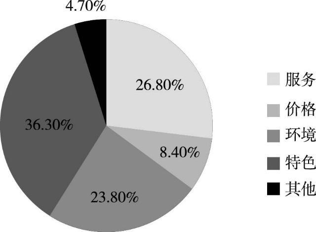

yy-2018-01
📄 原文 · 完整保留，点击展开/收起▾
Read the following text. Choose the best word (s) for each numbered blank and mark A, B, C or D on the ANSWER SHEET. (10 points)
Why do people read negative Internet comments and do other things that will obviously be painful? Because humans have an inherent need to __1__ uncertainty, according to a recent study in Psychological Science. The new research reveals that the need to know is so strong that people will __2__ to satisfy their curiosity even when it is clear the answer will __3__ .
In a series of four experiments, behavioral scientists at the University of Chicago and the Wisconsin School of Business tested students’ willingness to __4__ themselves to unpleasant stimuli in an effort to satisfy curiosity. For one __5__ , each participant was shown a pile of pens that the researcher claimed were from a previous experiment. The twist? Half of the pens would __6__ an electric shock when clicked.
Twenty-seven students were told which pens were electrified; another twenty-seven were told only that some were electrified. __7__ left alone in the room, the students who did not know which ones would shock them clicked more pens and incurred more shocks than the students who knew what would __8__ . Subsequent experiments reproduced this effect with other stimuli, __9__ the sound of fingernails on a chalkboard and photographs of disgusting insects.
The drive to __10__ is deeply rooted in humans, much the same as the basic drives for __11__ or shelter, says Christopher Hsee of the University of Chicago. Curiosity is often considered a good instinct – it can __12__ new scientific advances, for instance – but sometimes such __13__ can backfire. The insight that curiosity can drive you to do __14__ things is a profound one.
Unhealthy curiosity is possible to __15__ , however. In a final experiment, participants who were encouraged to __16__ how they would feel after viewing an unpleasant picture were less likely to __17__ to see such an image. These results suggest that imagining the __18__ of following through on one’s curiosity ahead of time can help determine __19__ it is worth the endeavor. “Thinking about long-term __20__ is key to reducing the possible negative effects of curiosity,” Hsee says. In other words, don’t read online comments.
第 1 题 · 本题位置已在原文中高亮（完形空位 / 新题型段落），请结合原文选出正确选项
答案：B
本题讲解：2018 完形第 1 空 · 人类有____不确定性的内在需求
答案：B（resolve 消除；解决）。
第 0 步：先立机制——想知道 = 消除不确定性（need to know 的复现）
下句 The new research reveals that the need to know is so strong... 里，the need to know 正是对 an inherent need to __ uncertainty 的复现：想知道（to know）的实质，就是把不确定变成确定，即消除不确定性。所以空格词 = 与 to know 同向的消除义动词，且能以 uncertainty 作宾语。
第 1 步：定位原文
Why do people read negative Internet comments and do other things that will obviously be painful? Because humans have an inherent need to __1__ uncertainty, according to a recent study in Psychological Science.
空 1 是答句里 inherent need to __ uncertainty 的动词：人类对不确定性抱有某种内在需求，空格词说明这种需求要对不确定性做什么。首句是设问（为什么明知负面评论 painful 还要看），Because 答句必须正面回应这个动机。
第 2 步：找证据——主题词链：negative → painful → the need to know
The new research reveals that the need to know is so strong that people will __2__ to satisfy their curiosity even when it is clear the answer will __3__ .
首句的行为（读负面评论、做明显痛苦的事）只有在迫切想弄清内情时才说得通；③句 the need to know 与 satisfy their curiosity 把这条动机链挑明——curiosity（好奇心）的对象正是那些未知。空 1 的动词要接住 uncertainty，并解释这个动机。
第 3 步：逐项排除
| 选项 | 词义 | 判定 | 理由与典型误解 |
|---|---|---|---|
| A protect | 保护 | ✗ 排除 | 保护不确定性 = 让它继续存在、不去弄清，与 the need to know（想知道）的方向恰好相反，也解释不了首句明知痛苦还要点开的行为。（典型误解：见 need to + 宾语就配正面动词，不做方向校验：这里需求的方向是消除未知，不是维持未知。） |
| B resolve | 消除；解决 | ✓ 当选 | resolve uncertainty = 消除不确定性，与 the need to know 构成同义复现：想弄清 = 想把不确定变成确定。 |
| C discuss | 讨论 | ✗ 排除 | 讨论不确定性之后它仍是不确定，动机链断裂；讨论也解释不了读负面评论这种独自发生的追踪行为。 |
| D ignore | 忽视 | ✗ 排除 | 忽视 = 不想知道，与首句行为完全相反，也与下文 satisfy their curiosity 正面冲突。（典型误解：把 need to __ 读成对不确定性的态度，忘掉方向必须与 to know 一致。） |
代入后的完整句义：因为人类有一种消除不确定性的内在需求（所以才会去读那些明显令人不快的网络评论）。
易错点
- 误选 A（protect）：把有需求理解成要保护需求对象，忽略 to know 的方向是消除未知、不是维持未知。
记忆锚点：首句设问 + Because 答句，答案藏在答句与设问的对应里；need to know = need to resolve uncertainty（想知道 = 想消除不确定）。
yy-2018-02
📄 原文 · 完整保留，点击展开/收起▾
Read the following text. Choose the best word (s) for each numbered blank and mark A, B, C or D on the ANSWER SHEET. (10 points)
Why do people read negative Internet comments and do other things that will obviously be painful? Because humans have an inherent need to __1__ uncertainty, according to a recent study in Psychological Science. The new research reveals that the need to know is so strong that people will __2__ to satisfy their curiosity even when it is clear the answer will __3__ .
In a series of four experiments, behavioral scientists at the University of Chicago and the Wisconsin School of Business tested students’ willingness to __4__ themselves to unpleasant stimuli in an effort to satisfy curiosity. For one __5__ , each participant was shown a pile of pens that the researcher claimed were from a previous experiment. The twist? Half of the pens would __6__ an electric shock when clicked.
Twenty-seven students were told which pens were electrified; another twenty-seven were told only that some were electrified. __7__ left alone in the room, the students who did not know which ones would shock them clicked more pens and incurred more shocks than the students who knew what would __8__ . Subsequent experiments reproduced this effect with other stimuli, __9__ the sound of fingernails on a chalkboard and photographs of disgusting insects.
The drive to __10__ is deeply rooted in humans, much the same as the basic drives for __11__ or shelter, says Christopher Hsee of the University of Chicago. Curiosity is often considered a good instinct – it can __12__ new scientific advances, for instance – but sometimes such __13__ can backfire. The insight that curiosity can drive you to do __14__ things is a profound one.
Unhealthy curiosity is possible to __15__ , however. In a final experiment, participants who were encouraged to __16__ how they would feel after viewing an unpleasant picture were less likely to __17__ to see such an image. These results suggest that imagining the __18__ of following through on one’s curiosity ahead of time can help determine __19__ it is worth the endeavor. “Thinking about long-term __20__ is key to reducing the possible negative effects of curiosity,” Hsee says. In other words, don’t read online comments.
第 2 题 · 本题位置已在原文中高亮（完形空位 / 新题型段落），请结合原文选出正确选项
答案：D
本题讲解：2018 完形第 2 空 · 需求如此强烈，人们会____满足好奇心
答案：D（seek 寻求；设法）。
第 0 步：先立机制——so...that 结果状语：强烈需求 → 结果必是主动出击
本句结构是 so...that：the need to know is so strong that...（需求如此强烈，以至于……）。that 从句是这个强烈落到行为上的结果——结果只能顺着主句方向：想方设法满足好奇心。空 2 与 to satisfy 是一个整体，seek to do sth = try to do sth（设法做某事），正好补出主动设法的语感。
第 1 步：定位原文
The new research reveals that the need to know is so strong that people will __2__ to satisfy their curiosity even when it is clear the answer will __3__ .
空 2 填在 people will __ to satisfy their curiosity 里，是 will 之后、to satisfy 之前的动词，与 to satisfy 构成连动结构：人们会怎样地去满足好奇心。
第 2 步：找证据——even when 让步：明知不快也要去
Why do people read negative Internet comments and do other things that will obviously be painful?
首句已把行为定性为明知会痛苦还要做。even when it is clear the answer will __3__（就算明知答案会带来不快）进一步强化：这不是被动等待，也不是事后懊悔，而是主动设法去满足好奇心。
第 3 步：逐项排除
| 选项 | 词义 | 判定 | 理由与典型误解 |
|---|---|---|---|
| A refuse | 拒绝 | ✗ 排除 | 拒绝满足好奇心，与主句需求如此强烈、以至于……的结果方向正相反。（典型误解：只看到 even when 从句里的痛苦，把整句方向读反。） |
| B wait | 等待 | ✗ 排除 | wait to satisfy = 等着去满足，是不作为；so strong 的强烈需求推出的是立刻行动，不是等待。 |
| C regret | 后悔；遗憾 | ✗ 排除 | regret to do sth 是遗憾地去做（礼貌告知类套话），不是后悔做了某事（那是 regret doing）；语义上也装不下设法满足的主动性。（典型误解：断章取义：看到做了让自己痛苦的事就联想事后后悔，无视 so...that 的因果方向。） |
| D seek | 寻求；设法 | ✓ 当选 | seek to do sth = try to do sth，设法、试图去做，与 so...that 推出的主动满足好奇心严丝合缝。 |
代入后的完整句义：研究表明，想知道的需求是如此强烈，以至于即便明知答案会令人不快，人们也会设法满足自己的好奇心。
易错点
- 误选 C（regret）：被做了痛苦的事带偏联想到后悔，忽略 regret to do 与 regret doing 的语法分工，也没接住 so...that 的结果逻辑。
记忆锚点：so...that 的 that 从句 = 主句方向的兑现；seek to do ≈ try to do；regret to do（遗憾地去做）≠ regret doing（后悔做过）。
yy-2018-03
📄 原文 · 完整保留，点击展开/收起▾
Read the following text. Choose the best word (s) for each numbered blank and mark A, B, C or D on the ANSWER SHEET. (10 points)
Why do people read negative Internet comments and do other things that will obviously be painful? Because humans have an inherent need to __1__ uncertainty, according to a recent study in Psychological Science. The new research reveals that the need to know is so strong that people will __2__ to satisfy their curiosity even when it is clear the answer will __3__ .
In a series of four experiments, behavioral scientists at the University of Chicago and the Wisconsin School of Business tested students’ willingness to __4__ themselves to unpleasant stimuli in an effort to satisfy curiosity. For one __5__ , each participant was shown a pile of pens that the researcher claimed were from a previous experiment. The twist? Half of the pens would __6__ an electric shock when clicked.
Twenty-seven students were told which pens were electrified; another twenty-seven were told only that some were electrified. __7__ left alone in the room, the students who did not know which ones would shock them clicked more pens and incurred more shocks than the students who knew what would __8__ . Subsequent experiments reproduced this effect with other stimuli, __9__ the sound of fingernails on a chalkboard and photographs of disgusting insects.
The drive to __10__ is deeply rooted in humans, much the same as the basic drives for __11__ or shelter, says Christopher Hsee of the University of Chicago. Curiosity is often considered a good instinct – it can __12__ new scientific advances, for instance – but sometimes such __13__ can backfire. The insight that curiosity can drive you to do __14__ things is a profound one.
Unhealthy curiosity is possible to __15__ , however. In a final experiment, participants who were encouraged to __16__ how they would feel after viewing an unpleasant picture were less likely to __17__ to see such an image. These results suggest that imagining the __18__ of following through on one’s curiosity ahead of time can help determine __19__ it is worth the endeavor. “Thinking about long-term __20__ is key to reducing the possible negative effects of curiosity,” Hsee says. In other words, don’t read online comments.
第 3 题 · 本题位置已在原文中高亮（完形空位 / 新题型段落），请结合原文选出正确选项
答案：A
本题讲解：2018 完形第 3 空 · 即使答案明显会____，人们仍想知道
答案：A（hurt 使不快；使受伤）。
第 0 步：先立机制——even = 让步信号：空格必须是负面结果
even when 的功能是让步：就算答案明显会____，人们还是会去满足好奇心。能在还是前面站得住的，只能是负面结果——如果答案是中性或好事，让步就不成立（明知是好事还去满足好奇心，算不上什么强烈需求）。首句的 negative Internet comments、obviously painful 已经给全文定了负面基调，空 3 只需把这条基调落到 the answer 上。
第 1 步：定位原文
The new research reveals that the need to know is so strong that people will seek to satisfy their curiosity even when it is clear the answer will __3__ .
空 3 在让步从句 even when it is clear the answer will __ 的末尾，主语是 the answer（答案），空格词说明答案会带来什么。
第 2 步：找证据——首句双负面词：negative + painful
Why do people read negative Internet comments and do other things that will obviously be painful?
全文第一句的两个关键词：negative（负面的）评论、obviously painful（明显痛苦的）事。它们解释了为什么想知道还要犹豫——因为结果令人不快。空 3 的动词要与这条语义场对齐：答案会伤人、让人难受。
第 3 步：逐项排除
| 选项 | 词义 | 判定 | 理由与典型误解 |
|---|---|---|---|
| A hurt | 使不快；使受伤 | ✓ 当选 | hurt 可用抽象事物作主语（the answer will hurt = 答案会让人不好受），恰好把 painful 的基调接到答案上，让 even 的让步成立。 |
| B last | 持续 | ✗ 排除 | 持续多久的主语应是事件、情形、问题这类过程，the answer（一个答案）本身谈不上持续；且持续无负面色彩，撑不起 even 的让步。（典型误解：把 the answer 误读成待解决的问题，于是想到问题会持续很久。） |
| C mislead | 误导 | ✗ 排除 | 误导发生在人不自知的情形下——被误导者当时并不知道；而原文 it is clear（明明白白）恰是自知，逻辑相撞。（典型误解：只找负面动词，没检查它与 it is clear（明知）的相容性。） |
| D rise | 上升；加剧 | ✗ 排除 | rise 的主语为问题时只表出现，不表加剧；主语换成 the answer 更说不通。（典型误解：同 B：把 answer 当成问题，再用问题上升来配。） |
代入后的完整句义：想知道的需求如此强烈，以至于就算明明知道答案会令人不快，人们也会（设法）满足好奇心。
易错点
- 误选 B（last）：把 the answer 读成待解决的问题再用持续来配；一是 answer 不指问题本身，二是持续没有负面色彩，撑不起 even 的让步。
记忆锚点：even / even when = 让步信号，空格必为负面；hurt 的主语可以是物（使人痛苦）；last / rise 的主语是过程类名词，answer 不入列。
yy-2018-04
📄 原文 · 完整保留，点击展开/收起▾
Read the following text. Choose the best word (s) for each numbered blank and mark A, B, C or D on the ANSWER SHEET. (10 points)
Why do people read negative Internet comments and do other things that will obviously be painful? Because humans have an inherent need to __1__ uncertainty, according to a recent study in Psychological Science. The new research reveals that the need to know is so strong that people will __2__ to satisfy their curiosity even when it is clear the answer will __3__ .
In a series of four experiments, behavioral scientists at the University of Chicago and the Wisconsin School of Business tested students’ willingness to __4__ themselves to unpleasant stimuli in an effort to satisfy curiosity. For one __5__ , each participant was shown a pile of pens that the researcher claimed were from a previous experiment. The twist? Half of the pens would __6__ an electric shock when clicked.
Twenty-seven students were told which pens were electrified; another twenty-seven were told only that some were electrified. __7__ left alone in the room, the students who did not know which ones would shock them clicked more pens and incurred more shocks than the students who knew what would __8__ . Subsequent experiments reproduced this effect with other stimuli, __9__ the sound of fingernails on a chalkboard and photographs of disgusting insects.
The drive to __10__ is deeply rooted in humans, much the same as the basic drives for __11__ or shelter, says Christopher Hsee of the University of Chicago. Curiosity is often considered a good instinct – it can __12__ new scientific advances, for instance – but sometimes such __13__ can backfire. The insight that curiosity can drive you to do __14__ things is a profound one.
Unhealthy curiosity is possible to __15__ , however. In a final experiment, participants who were encouraged to __16__ how they would feel after viewing an unpleasant picture were less likely to __17__ to see such an image. These results suggest that imagining the __18__ of following through on one’s curiosity ahead of time can help determine __19__ it is worth the endeavor. “Thinking about long-term __20__ is key to reducing the possible negative effects of curiosity,” Hsee says. In other words, don’t read online comments.
第 4 题 · 本题位置已在原文中高亮（完形空位 / 新题型段落），请结合原文选出正确选项
答案：D
本题讲解：2018 完形第 4 空 · 测试学生____自己于不快刺激的意愿
答案：D（expose 使遭受；使接触）。
第 0 步：先立机制——实验内容必须与首段结论同口径
第二段开头点明：四项实验测试的是 students’ willingness to __ themselves to unpleasant stimuli in an effort to satisfy curiosity（为了满足好奇心而____不快刺激的意愿）。实验是首段结论的落地版——首段说人们明知 painful 还要做，实验测的就是学生愿不愿意让自己亲身经受这些不快刺激。expose oneself to sth 正是使自己暴露于、遭受（危险、不快）的固定表达。
第 1 步：定位原文
In a series of four experiments, behavioral scientists at the University of Chicago and the Wisconsin School of Business tested students’ willingness to __4__ themselves to unpleasant stimuli in an effort to satisfy curiosity.
空 4 是 __ themselves to unpleasant stimuli 的动词，构成反身代词 + to + 刺激物的结构：学生愿意把自己怎样于那些不快刺激。
第 2 步：找证据——unpleasant stimuli 与首段 painful 同语义场
Why do people read negative Internet comments and do other things that will obviously be painful?
宾语是 unpleasant stimuli（令人不快的刺激物），方向是承受负面体验。这个短语与首段 obviously painful 同在一个语义场，所以空 4 不是中性的接触、了解，而是带让自己吃这个苦色彩的动词。
第 3 步：逐项排除
| 选项 | 词义 | 判定 | 理由与典型误解 |
|---|---|---|---|
| A alert | 使警觉；使意识到 | ✗ 排除 | alert oneself to sth 是使自己意识到某事——意识到不等于亲身经受，力度差一档，撑不起明知 painful 还做的实验设定。（典型误解：记得 alert sb to sth 的搭配很通顺，却没掂量语义深度：认识到刺激吃不到苦。） |
| B tie | 系；束缚 | ✗ 排除 | tie oneself to sth 是把自己束缚于某物或使与某事紧密关联——实验里学生不是被捆住，语义错位。 |
| C treat | 对待；款待 | ✗ 排除 | treat oneself to sth 是犒劳自己、款待自己（如 treat yourself to a nice dinner），方向恰好反了：是享受不是受罪。（典型误解：见 treat...to... 就套款待义，没看宾语是 unpleasant stimuli——不快的刺激没法享用。） |
| D expose | 使遭受；使接触 | ✓ 当选 | expose oneself to sth = 使自己暴露于、遭受某事（危险、不快），与 unpleasant stimuli 搭配严丝合缝，也与首段明知痛苦还要做同口径。 |
代入后的完整句义：行为科学家们测试了学生为了满足好奇心而让自己经受不快刺激的意愿。
易错点
- 误选 C（treat）：treat oneself to 的搭配看似工整，但义为犒劳自己，与 unpleasant stimuli 的负面方向刚好相反。
记忆锚点：expose oneself / sb to sth = 使自己（某人）遭受危险或不快；treat oneself to sth = 犒劳自己（方向相反）；alert to 只到意识到为止。
yy-2018-05
📄 原文 · 完整保留，点击展开/收起▾
Read the following text. Choose the best word (s) for each numbered blank and mark A, B, C or D on the ANSWER SHEET. (10 points)
Why do people read negative Internet comments and do other things that will obviously be painful? Because humans have an inherent need to __1__ uncertainty, according to a recent study in Psychological Science. The new research reveals that the need to know is so strong that people will __2__ to satisfy their curiosity even when it is clear the answer will __3__ .
In a series of four experiments, behavioral scientists at the University of Chicago and the Wisconsin School of Business tested students’ willingness to __4__ themselves to unpleasant stimuli in an effort to satisfy curiosity. For one __5__ , each participant was shown a pile of pens that the researcher claimed were from a previous experiment. The twist? Half of the pens would __6__ an electric shock when clicked.
Twenty-seven students were told which pens were electrified; another twenty-seven were told only that some were electrified. __7__ left alone in the room, the students who did not know which ones would shock them clicked more pens and incurred more shocks than the students who knew what would __8__ . Subsequent experiments reproduced this effect with other stimuli, __9__ the sound of fingernails on a chalkboard and photographs of disgusting insects.
The drive to __10__ is deeply rooted in humans, much the same as the basic drives for __11__ or shelter, says Christopher Hsee of the University of Chicago. Curiosity is often considered a good instinct – it can __12__ new scientific advances, for instance – but sometimes such __13__ can backfire. The insight that curiosity can drive you to do __14__ things is a profound one.
Unhealthy curiosity is possible to __15__ , however. In a final experiment, participants who were encouraged to __16__ how they would feel after viewing an unpleasant picture were less likely to __17__ to see such an image. These results suggest that imagining the __18__ of following through on one’s curiosity ahead of time can help determine __19__ it is worth the endeavor. “Thinking about long-term __20__ is key to reducing the possible negative effects of curiosity,” Hsee says. In other words, don’t read online comments.
第 5 题 · 本题位置已在原文中高亮（完形空位 / 新题型段落），请结合原文选出正确选项
答案：C
本题讲解：2018 完形第 5 空 · For one ____：以其中一项实验为例
答案：C（trial 试验；实验）。
第 0 步：先立机制——For one __ = 举例框架，内容是一项实验
上文刚说完 a series of four experiments（四项实验），本句以 For one __ 开头，随后是每个参与者看到一堆笔的实验流程——这是在举其中一项实验的例子。所以空 5 的名词要与 experiments 构成近义复现，trial（试验）正是 experiment 的同义词；For one trial = 以其中一项试验为例。
第 1 步：定位原文
For one __5__ , each participant was shown a pile of pens that the researcher claimed were from a previous experiment.
空 5 填在 For one __ 里，for one... 是举例框架：以某一项东西为例，引出下面具体的实验过程。
第 2 步：找证据——实验词链贯穿：experiments → trial → experiments
Subsequent experiments reproduced this effect with other stimuli, __9__ the sound of fingernails on a chalkboard and photographs of disgusting insects.
本段开头 a series of four experiments、句中 participant / researcher、下段开头 Subsequent experiments——实验这条词链在上下文反复出现。For one __ 承接其上、开启其下，必然还是实验一族。
第 3 步：逐项排除
| 选项 | 词义 | 判定 | 理由与典型误解 |
|---|---|---|---|
| A message | 消息；要旨 | ✗ 排除 | For one message 无法引出实验流程，与 experiments 的语境对不上。 |
| B review | 审查；报告 | ✗ 排除 | 空格后是实验的做法（给参与者看笔），不是实验的报告；For one review 也接不住每个参与者……的叙述。（典型误解：被实验之后有实验报告的常识带偏，忽略空格句本身就是实验描述。） |
| C trial | 试验；实验 | ✓ 当选 | trial 与 experiments 近义复现，For one trial = 以其中一项试验为例，上下文严丝合缝。 |
| D concept | 概念；观念 | ✗ 排除 | 以一个概念为例引不出每个参与者看到一堆笔，语境错位。 |
代入后的完整句义：以其中一项试验为例：每位参与者看到一堆笔，研究人员声称这些笔来自此前的一项实验。
易错点
- 误选 B（review）：把介绍实验误读成介绍实验报告，忽略空格句后面紧跟的是实验过程本身。
记忆锚点：for one trial = for one experiment；完形里近义复现是高频线索：four experiments → one trial → subsequent experiments。
yy-2018-06
📄 原文 · 完整保留，点击展开/收起▾
Read the following text. Choose the best word (s) for each numbered blank and mark A, B, C or D on the ANSWER SHEET. (10 points)
Why do people read negative Internet comments and do other things that will obviously be painful? Because humans have an inherent need to __1__ uncertainty, according to a recent study in Psychological Science. The new research reveals that the need to know is so strong that people will __2__ to satisfy their curiosity even when it is clear the answer will __3__ .
In a series of four experiments, behavioral scientists at the University of Chicago and the Wisconsin School of Business tested students’ willingness to __4__ themselves to unpleasant stimuli in an effort to satisfy curiosity. For one __5__ , each participant was shown a pile of pens that the researcher claimed were from a previous experiment. The twist? Half of the pens would __6__ an electric shock when clicked.
Twenty-seven students were told which pens were electrified; another twenty-seven were told only that some were electrified. __7__ left alone in the room, the students who did not know which ones would shock them clicked more pens and incurred more shocks than the students who knew what would __8__ . Subsequent experiments reproduced this effect with other stimuli, __9__ the sound of fingernails on a chalkboard and photographs of disgusting insects.
The drive to __10__ is deeply rooted in humans, much the same as the basic drives for __11__ or shelter, says Christopher Hsee of the University of Chicago. Curiosity is often considered a good instinct – it can __12__ new scientific advances, for instance – but sometimes such __13__ can backfire. The insight that curiosity can drive you to do __14__ things is a profound one.
Unhealthy curiosity is possible to __15__ , however. In a final experiment, participants who were encouraged to __16__ how they would feel after viewing an unpleasant picture were less likely to __17__ to see such an image. These results suggest that imagining the __18__ of following through on one’s curiosity ahead of time can help determine __19__ it is worth the endeavor. “Thinking about long-term __20__ is key to reducing the possible negative effects of curiosity,” Hsee says. In other words, don’t read online comments.
第 6 题 · 本题位置已在原文中高亮（完形空位 / 新题型段落），请结合原文选出正确选项
答案：D
本题讲解：2018 完形第 6 空 · 一半的笔被按动时会____电击
答案：D（deliver 发出；递送）。
第 0 步：先立机制——按笔在先、电击在后：空格 = 发出类动词
下段写明：有些笔是 electrified（带电的）；不知道哪些笔带电的学生 clicked more pens and incurred more shocks（按了更多笔、遭受更多电击）。由此反推：电击是按下笔之后才产生的——笔会发出电击。deliver 正有发出、产出义（deliver a shock / a speech / a blow），与 incur（遭受）构成一发一受的呼应。
第 1 步：定位原文
The twist? Half of the pens would __6__ an electric shock when clicked.
空 6 是 pens would __ an electric shock 的动词：按动（when clicked）时，笔对电击做发出还是别的动作——方向决定语义。
第 2 步：找证据——下段两个证据：electrified 与 incurred more shocks
...the students who did not know which ones would shock them clicked more pens and incurred more shocks than the students who knew what would __8__ .
两条事实：其一，这些笔是 electrified（带电的）；其二，按笔越多、遭电击越多。合起来就是按笔 → 电击的因果链：电击由按动这个动作触发、发出，而不是先存在于笔里等被移除、削弱或打断。
第 3 步：逐项排除
| 选项 | 词义 | 判定 | 理由与典型误解 |
|---|---|---|---|
| A remove | 移除 | ✗ 排除 | 移除电击预设电击先已存在、按笔时把它拿走——与按笔才来电击的先后逻辑矛盾。（典型误解：把 would + 宾语读成处置一件已有之物，没从下文反推电击的产生时机。） |
| B weaken | 削弱 | ✗ 排除 | 同 remove：削弱的前提是电击已在，而按笔恰恰是电击的来源，不是削弱它的动作。 |
| C interrupt | 打断 | ✗ 排除 | 打断电击同样预设电击已在进行；且电击只在按下的瞬间发生，谈不上中途打断。 |
| D deliver | 发出；递送 | ✓ 当选 | deliver an electric shock = 发出电击，与下文 incurred more shocks（遭受更多电击）形成发出—遭受的复现链。 |
代入后的完整句义：意外转折在于：一半的笔在被按动时会发出电击。
易错点
- 误选 A（remove）：盯着宾语 an electric shock 找处置动词，忽略了下文按笔在先、电击在后的时间顺序。
记忆锚点：deliver a shock / a speech / a blow = 发出；remove / weaken / interrupt 都预设对象先已存在，与按笔来电击的先后逻辑冲突。
yy-2018-07
📄 原文 · 完整保留，点击展开/收起▾
Read the following text. Choose the best word (s) for each numbered blank and mark A, B, C or D on the ANSWER SHEET. (10 points)
Why do people read negative Internet comments and do other things that will obviously be painful? Because humans have an inherent need to __1__ uncertainty, according to a recent study in Psychological Science. The new research reveals that the need to know is so strong that people will __2__ to satisfy their curiosity even when it is clear the answer will __3__ .
In a series of four experiments, behavioral scientists at the University of Chicago and the Wisconsin School of Business tested students’ willingness to __4__ themselves to unpleasant stimuli in an effort to satisfy curiosity. For one __5__ , each participant was shown a pile of pens that the researcher claimed were from a previous experiment. The twist? Half of the pens would __6__ an electric shock when clicked.
Twenty-seven students were told which pens were electrified; another twenty-seven were told only that some were electrified. __7__ left alone in the room, the students who did not know which ones would shock them clicked more pens and incurred more shocks than the students who knew what would __8__ . Subsequent experiments reproduced this effect with other stimuli, __9__ the sound of fingernails on a chalkboard and photographs of disgusting insects.
The drive to __10__ is deeply rooted in humans, much the same as the basic drives for __11__ or shelter, says Christopher Hsee of the University of Chicago. Curiosity is often considered a good instinct – it can __12__ new scientific advances, for instance – but sometimes such __13__ can backfire. The insight that curiosity can drive you to do __14__ things is a profound one.
Unhealthy curiosity is possible to __15__ , however. In a final experiment, participants who were encouraged to __16__ how they would feel after viewing an unpleasant picture were less likely to __17__ to see such an image. These results suggest that imagining the __18__ of following through on one’s curiosity ahead of time can help determine __19__ it is worth the endeavor. “Thinking about long-term __20__ is key to reducing the possible negative effects of curiosity,” Hsee says. In other words, don’t read online comments.
第 7 题 · 本题位置已在原文中高亮（完形空位 / 新题型段落），请结合原文选出正确选项
答案：A
本题讲解：2018 完形第 7 空 · ____被单独留在房间里，学生按了更多的笔
答案：A（When 当……时）。
第 0 步：先立机制——四类从句逻辑先分流：时间 / 条件 / 让步 / 因果
连接词题的第一步不是背词义，而是先判断两个分句之间是什么逻辑关系：被单独留在房间里与按了更多笔、遭了更多电击之间是时间上的包含（留房期间发生了按笔），主句又是实验中确凿发生的事——不是假设、没有转折、也与因果无关。四类逻辑一分流：条件（If / Unless）和让步（Though）出局，时间词 When 入选。When + 过去分词 = when they were left alone 的省略（主从句主语一致才可省略）。
第 1 步：定位原文
__7__ left alone in the room, the students who did not know which ones would shock them clicked more pens and incurred more shocks than the students who knew what would __8__ .
空 7 是句首的连接词，引出 __ left alone in the room（被单独留在房间）这个过去分词短语作状语——等于 When (they were) left alone...。它交代主句按笔、遭电击发生的背景。
第 2 步：找证据——实验是既成事实，不是虚拟假设
Twenty-seven students were told which pens were electrified; another twenty-seven were told only that some were electrified.
上一句交代了实验分组（27 人知道哪些笔带电、27 人只知道有些带电），本句报告实验结果（不知道的学生按得更多）。整段是对已完成实验的陈述：不存在如果……就会……的虚拟语气，也没有任何让步转折的语义落差。
第 3 步：逐项排除
| 选项 | 词义 | 判定 | 理由与典型误解 |
|---|---|---|---|
| A When | 当……时 | ✓ 当选 | When (they were) left alone in the room：把单独留房定为按笔行为的时间背景，与实验的陈述语气完全相容。 |
| B If | 如果 | ✗ 排除 | 实验情形是确凿发生的，不是假设条件；if 表每当（= whenever）时须搭配习惯性、反复发生的动作，而本次实验是一次性情形。（典型误解：知道 if 可表时间，就忽略了习惯与一次性的使用条件。） |
| C Though | 虽然；尽管 | ✗ 排除 | 单独留房与按更多笔之间没有语义落差，构不成让步或转折。 |
| D Unless | 除非 | ✗ 排除 | Unless = if not：除非不单独留房否则不按笔，既不是实验设定，也不合常理。 |
代入后的完整句义：当被单独留在房间里时，不知道哪些笔会电击自己的学生按了更多的笔、遭受了更多的电击。
易错点
- 误选 B（If）：知道 if 有每当的时间用法，却忽略它只适用于习惯性反复动作，本次实验是一次性既成事实。
记忆锚点：连接词四分流：时间 / 条件 / 让步 / 因果；实验报告的既成事实优先配 When；When + 过去分词 = when they were... 的省略。
yy-2018-08
📄 原文 · 完整保留，点击展开/收起▾
Read the following text. Choose the best word (s) for each numbered blank and mark A, B, C or D on the ANSWER SHEET. (10 points)
Why do people read negative Internet comments and do other things that will obviously be painful? Because humans have an inherent need to __1__ uncertainty, according to a recent study in Psychological Science. The new research reveals that the need to know is so strong that people will __2__ to satisfy their curiosity even when it is clear the answer will __3__ .
In a series of four experiments, behavioral scientists at the University of Chicago and the Wisconsin School of Business tested students’ willingness to __4__ themselves to unpleasant stimuli in an effort to satisfy curiosity. For one __5__ , each participant was shown a pile of pens that the researcher claimed were from a previous experiment. The twist? Half of the pens would __6__ an electric shock when clicked.
Twenty-seven students were told which pens were electrified; another twenty-seven were told only that some were electrified. __7__ left alone in the room, the students who did not know which ones would shock them clicked more pens and incurred more shocks than the students who knew what would __8__ . Subsequent experiments reproduced this effect with other stimuli, __9__ the sound of fingernails on a chalkboard and photographs of disgusting insects.
The drive to __10__ is deeply rooted in humans, much the same as the basic drives for __11__ or shelter, says Christopher Hsee of the University of Chicago. Curiosity is often considered a good instinct – it can __12__ new scientific advances, for instance – but sometimes such __13__ can backfire. The insight that curiosity can drive you to do __14__ things is a profound one.
Unhealthy curiosity is possible to __15__ , however. In a final experiment, participants who were encouraged to __16__ how they would feel after viewing an unpleasant picture were less likely to __17__ to see such an image. These results suggest that imagining the __18__ of following through on one’s curiosity ahead of time can help determine __19__ it is worth the endeavor. “Thinking about long-term __20__ is key to reducing the possible negative effects of curiosity,” Hsee says. In other words, don’t read online comments.
第 8 题 · 本题位置已在原文中高亮（完形空位 / 新题型段落），请结合原文选出正确选项
答案：B
本题讲解：2018 完形第 8 空 · 知道哪些笔带电 = 知道将会____什么
答案：B（happen 发生）。
第 0 步：先立机制——对照组复现：told which... vs knew what would __
本句是比较结构：did not know which ones would shock them（不知道哪些笔会电击）对比 knew what would __（知道会____什么）。两组的信息差在上句已写明：一组 told which pens were electrified（知道哪些笔带电），另一组只 told that some were（只知道有些带电）。知道哪些笔带电，翻译过来就是知道按下去会发生什么——what would happen 正是这个信息差的自然表达。
第 1 步：定位原文
When left alone in the room, the students who did not know which ones would shock them clicked more pens and incurred more shocks than the students who knew what would __8__ .
空 8 在比较级从句 than the students who knew what would __ 里：知道组的知道内容是什么，要与另一组的不知道一一对应。
第 2 步：找证据——上句分组设定就是答案的对照句
Twenty-seven students were told which pens were electrified; another twenty-seven were told only that some were electrified.
上一句把两组的信息设定写得清清楚楚。比较结构两侧必须一一对应：did not know which ones... ↔ knew what would __。空 8 要填的是知道的宾语内容——按下去会发生什么。happen（发生）是不带预设的中性动词，正好承载这个信息差。
第 3 步：逐项排除
| 选项 | 词义 | 判定 | 理由与典型误解 |
|---|---|---|---|
| A continue | 继续 | ✗ 排除 | 继续得先有一个已在进行且被知道的情况；知道组只知道哪些笔带电这个静态事实，谈不上什么会继续。（典型误解：从知道哪些笔带电引申出知道电击会持续，脑补了原文没有的信息。） |
| B happen | 发生 | ✓ 当选 | knew what would happen = 知道将会发生什么，与 told which pens were electrified 构成对照组复现，信息差严丝合缝。 |
| C disappear | 消失 | ✗ 排除 | 同 continue：不存在某个会被知道会消失的情况；静态事实谈不上消失。 |
| D change | 改变 | ✗ 排除 | 改变同样需要一个已知的原状态作参照；两组的信息差只在知不知道哪些笔带电，没有某情况会变的含义。 |
代入后的完整句义：当被单独留在房间里时，不知道哪些笔会电击自己的学生，比知道将会发生什么的学生按了更多的笔、遭受了更多的电击。
易错点
- 误选 A（continue）：从知道哪些笔带电脑补出知道电击会持续、变化等具体走向；原文两组的信息差只是知道与不知道哪些笔带电。
记忆锚点：完形比较结构两侧信息必须一一对应：did not know which ones ↔ knew what would happen；happen 是无预设的中性动词，最适合承载信息差。
yy-2018-09
📄 原文 · 完整保留，点击展开/收起▾
Read the following text. Choose the best word (s) for each numbered blank and mark A, B, C or D on the ANSWER SHEET. (10 points)
Why do people read negative Internet comments and do other things that will obviously be painful? Because humans have an inherent need to __1__ uncertainty, according to a recent study in Psychological Science. The new research reveals that the need to know is so strong that people will __2__ to satisfy their curiosity even when it is clear the answer will __3__ .
In a series of four experiments, behavioral scientists at the University of Chicago and the Wisconsin School of Business tested students’ willingness to __4__ themselves to unpleasant stimuli in an effort to satisfy curiosity. For one __5__ , each participant was shown a pile of pens that the researcher claimed were from a previous experiment. The twist? Half of the pens would __6__ an electric shock when clicked.
Twenty-seven students were told which pens were electrified; another twenty-seven were told only that some were electrified. __7__ left alone in the room, the students who did not know which ones would shock them clicked more pens and incurred more shocks than the students who knew what would __8__ . Subsequent experiments reproduced this effect with other stimuli, __9__ the sound of fingernails on a chalkboard and photographs of disgusting insects.
The drive to __10__ is deeply rooted in humans, much the same as the basic drives for __11__ or shelter, says Christopher Hsee of the University of Chicago. Curiosity is often considered a good instinct – it can __12__ new scientific advances, for instance – but sometimes such __13__ can backfire. The insight that curiosity can drive you to do __14__ things is a profound one.
Unhealthy curiosity is possible to __15__ , however. In a final experiment, participants who were encouraged to __16__ how they would feel after viewing an unpleasant picture were less likely to __17__ to see such an image. These results suggest that imagining the __18__ of following through on one’s curiosity ahead of time can help determine __19__ it is worth the endeavor. “Thinking about long-term __20__ is key to reducing the possible negative effects of curiosity,” Hsee says. In other words, don’t read online comments.
第 9 题 · 本题位置已在原文中高亮（完形空位 / 新题型段落），请结合原文选出正确选项
答案：C
本题讲解：2018 完形第 9 空 · 其他刺激，____指甲刮黑板声与恶心昆虫图
答案：C（such as 例如）。
第 0 步：先立机制——泛指 + 具体列举 = 举例逻辑
左边 other stimuli 是泛指，右边指甲刮黑板的声音、恶心昆虫的照片是两个具体实例——典型的大类 + 举例结构。such as（例如）专门引出同位举例；而 rather than（取前舍后）、regardless of（不管、不顾）、owing to（由于）都不构成泛指与实例的关系。
第 1 步：定位原文
Subsequent experiments reproduced this effect with other stimuli, __9__ the sound of fingernails on a chalkboard and photographs of disgusting insects.
空 9 是逗号后的短语连接词，左边是 other stimuli（泛指的其他刺激），右边是 the sound... and photographs... 两个具体名词短语——连接词的性质由两边的关系决定。
第 2 步：找证据——两个例子都落在令人不快的刺激语义场
...behavioral scientists ... tested students’ willingness to expose themselves to unpleasant stimuli in an effort to satisfy curiosity.
上段的实验用的是 unpleasant stimuli（不快刺激），本句说后续实验换用了 other stimuli——刮擦声与恶心图片正是这类不快刺激的另外两个例子。它们与 other stimuli 是同一层级的成员列举，既不是被舍弃的备选（rather than），不是让步条件（regardless of），也不是原因（owing to）。
第 3 步：逐项排除
| 选项 | 词义 | 判定 | 理由与典型误解 |
|---|---|---|---|
| A rather than | 而不是 | ✗ 排除 | rather than 连接的前后项是取前舍后的对立选择，但其他刺激与两个例子不是取舍关系，例子就是 stimuli 本身。（典型误解：见逗号后接名词短语就往关系词上套，没先判泛指与实例的关系。） |
| B regardless of | 不管；不顾 | ✗ 排除 | regardless of 引出让步（不管是什么刺激），但原文要的是具体列出刺激是什么，不是刺激是什么都无所谓。 |
| C such as | 例如 | ✓ 当选 | such as 引出同位举例：other stimuli 之下列出刮擦声、昆虫图两个实例，方向与语义都吻合。 |
| D owing to | 由于；因为 | ✗ 排除 | owing to 引出原因——实验再现效应是因为指甲刮黑板声，因果倒置：刺激物是被使用的素材，不是效应再现的原因。 |
代入后的完整句义：随后的实验用其他刺激再现了这一效应，例如指甲刮擦黑板的声音和令人恶心的昆虫照片。
易错点
- 误选 D（owing to）：把逗号后的名词短语当成原因，忽略它其实是 other stimuli 的实例列举——素材不是原因。
记忆锚点：泛指词 + 具体列举 = 举例逻辑 → such as；rather than 前后必须是同类取舍，owing to 后接原因——先判关系再选词。
yy-2018-10
📄 原文 · 完整保留，点击展开/收起▾
Read the following text. Choose the best word (s) for each numbered blank and mark A, B, C or D on the ANSWER SHEET. (10 points)
Why do people read negative Internet comments and do other things that will obviously be painful? Because humans have an inherent need to __1__ uncertainty, according to a recent study in Psychological Science. The new research reveals that the need to know is so strong that people will __2__ to satisfy their curiosity even when it is clear the answer will __3__ .
In a series of four experiments, behavioral scientists at the University of Chicago and the Wisconsin School of Business tested students’ willingness to __4__ themselves to unpleasant stimuli in an effort to satisfy curiosity. For one __5__ , each participant was shown a pile of pens that the researcher claimed were from a previous experiment. The twist? Half of the pens would __6__ an electric shock when clicked.
Twenty-seven students were told which pens were electrified; another twenty-seven were told only that some were electrified. __7__ left alone in the room, the students who did not know which ones would shock them clicked more pens and incurred more shocks than the students who knew what would __8__ . Subsequent experiments reproduced this effect with other stimuli, __9__ the sound of fingernails on a chalkboard and photographs of disgusting insects.
The drive to __10__ is deeply rooted in humans, much the same as the basic drives for __11__ or shelter, says Christopher Hsee of the University of Chicago. Curiosity is often considered a good instinct – it can __12__ new scientific advances, for instance – but sometimes such __13__ can backfire. The insight that curiosity can drive you to do __14__ things is a profound one.
Unhealthy curiosity is possible to __15__ , however. In a final experiment, participants who were encouraged to __16__ how they would feel after viewing an unpleasant picture were less likely to __17__ to see such an image. These results suggest that imagining the __18__ of following through on one’s curiosity ahead of time can help determine __19__ it is worth the endeavor. “Thinking about long-term __20__ is key to reducing the possible negative effects of curiosity,” Hsee says. In other words, don’t read online comments.
第 10 题 · 本题位置已在原文中高亮（完形空位 / 新题型段落），请结合原文选出正确选项
答案：A
本题讲解：2018 完形第 10 空 · ____的欲求深深植根于人类
答案：A（discover 发现；探明）。
第 0 步：先立机制——段首由论据回归主题：drive to __ = need to know 的改写
行文走到第四段：前三段立论（人类有想知道的内在需求）并给出实验论据，本段首句借学者之口回归主题——__ 的欲求深深植根于人类，正如对食物、住所的基本欲求一样。这句必须复现全文主题：the need to know、curiosity。The drive to __ 与 the need to know 是同一件事的另一种说法，所以空格词 = 想知道对应的动词 discover（发现、探明未知）。
第 1 步：定位原文
The drive to __10__ is deeply rooted in humans, much the same as the basic drives for __11__ or shelter, says Christopher Hsee of the University of Chicago.
空 10 填在 The drive to __ 里：某某欲求深深植根于人类——填的是这种欲求的内容（做什么的欲求）。
第 2 步：找证据——主题词链：curiosity → the need to know → the drive to __
Because humans have an inherent need to resolve uncertainty... the need to know is so strong that people will seek to satisfy their curiosity...
把主题词链拉直：首段 inherent need to resolve uncertainty → the need to know → satisfy their curiosity；第二、三段是实验论据。第四段段首的 The drive to __ 站在论据之后，自然承接同一条主题链——drive（本能欲求）与 need（需求）、curiosity（好奇心）同指。
第 3 步：逐项排除
| 选项 | 词义 | 判定 | 理由与典型误解 |
|---|---|---|---|
| A discover | 发现；探明 | ✓ 当选 | The drive to discover = 探究、发现未知之欲求，与 need to know、curiosity 同义复现，把实验评述拉回主题。 |
| B forgive | 原谅 | ✗ 排除 | 原谅的欲求与全文的好奇心主题无关。（典型误解：只检查 drive to do 搭配通顺，不回主题链校验语义。） |
| C forget | 忘记 | ✗ 排除 | 忘记与想知道方向相反，更不能与对食物、住所的基本欲求并列类比。 |
| D disagree | 不同意 | ✗ 排除 | disagree 是不及物动词，后接 with / about；放在 The drive to __ 里既不合搭配，也不合主题。 |
代入后的完整句义：芝加哥大学的 Christopher Hsee 指出：探究发现（未知）的欲求深深植根于人类，正如对食物或住所的基本欲求一样。
易错点
- 误选 B（forgive）：拿搭配通顺当标准，忘了空格句是全文主题的回归点——离开 need to know / curiosity 这条链，任何通顺都是错的。
记忆锚点：完形段落首句常由论据回归主题；主题词链要一路复现：curiosity → the need to know → the drive to discover。
yy-2018-11
📄 原文 · 完整保留，点击展开/收起▾
Read the following text. Choose the best word (s) for each numbered blank and mark A, B, C or D on the ANSWER SHEET. (10 points)
Why do people read negative Internet comments and do other things that will obviously be painful? Because humans have an inherent need to __1__ uncertainty, according to a recent study in Psychological Science. The new research reveals that the need to know is so strong that people will __2__ to satisfy their curiosity even when it is clear the answer will __3__ .
In a series of four experiments, behavioral scientists at the University of Chicago and the Wisconsin School of Business tested students’ willingness to __4__ themselves to unpleasant stimuli in an effort to satisfy curiosity. For one __5__ , each participant was shown a pile of pens that the researcher claimed were from a previous experiment. The twist? Half of the pens would __6__ an electric shock when clicked.
Twenty-seven students were told which pens were electrified; another twenty-seven were told only that some were electrified. __7__ left alone in the room, the students who did not know which ones would shock them clicked more pens and incurred more shocks than the students who knew what would __8__ . Subsequent experiments reproduced this effect with other stimuli, __9__ the sound of fingernails on a chalkboard and photographs of disgusting insects.
The drive to __10__ is deeply rooted in humans, much the same as the basic drives for __11__ or shelter, says Christopher Hsee of the University of Chicago. Curiosity is often considered a good instinct – it can __12__ new scientific advances, for instance – but sometimes such __13__ can backfire. The insight that curiosity can drive you to do __14__ things is a profound one.
Unhealthy curiosity is possible to __15__ , however. In a final experiment, participants who were encouraged to __16__ how they would feel after viewing an unpleasant picture were less likely to __17__ to see such an image. These results suggest that imagining the __18__ of following through on one’s curiosity ahead of time can help determine __19__ it is worth the endeavor. “Thinking about long-term __20__ is key to reducing the possible negative effects of curiosity,” Hsee says. In other words, don’t read online comments.
第 11 题 · 本题位置已在原文中高亮（完形空位 / 新题型段落），请结合原文选出正确选项
答案：D
本题讲解：2018 完形第 11 空 · 与 shelter 并列的基本欲求：____
答案：D（food 食物）。
第 0 步：先立机制——并列词定语义场：与 shelter 同层的生存必需
shelter（住所）属于人类维持生存层面的最基本需求；由 or 并列的空格词必须与之同级——不是想要，而是不满足就活不下去那一层。食物 food 正是这样的生存必需，food or shelter 还是英语里的常见并列搭配。类比的目的也在这：把好奇心说成与温饱住同级的先天本能。
第 1 步：定位原文
The drive to discover is deeply rooted in humans, much the same as the basic drives for __11__ or shelter, says Christopher Hsee of the University of Chicago.
空 11 与 shelter（住所）由 or 并列，共同做 the basic drives for（……的基本欲求）的宾语——空格词必须和 shelter 同属一个语义场。
第 2 步：找证据——much the same as 的类比作用
The drive to discover is deeply rooted in humans, much the same as the basic drives for __11__ or shelter, says Christopher Hsee of the University of Chicago.
much the same as（与……几乎一样）表明：作者拿最基本的人类欲求来类比探究欲求，论证好奇心是天生的。类比项选得越原始、越无可争议（食物、住所），论证越有力——所以空格词要落到生存层面。
第 3 步：逐项排除
| 选项 | 词义 | 判定 | 理由与典型误解 |
|---|---|---|---|
| A pay | 工资 | ✗ 排除 | 工资是进入社会分工之后才有的需求，不在维持生存的 drive 层级上。 |
| B marriage | 婚姻 | ✗ 排除 | 婚姻是社会性、文化性的需求，与 shelter 不同层，撑不起先天本能的类比。 |
| C schooling | 学校教育 | ✗ 排除 | 学校教育是文明社会的产物，同样不在生存必需的语义场里。（典型误解：三项都算人的需求，但基本 drive 特指生存本能——需求也分层级，不能见需求就选。） |
| D food | 食物 | ✓ 当选 | food 与 shelter 同属生存必需，food or shelter 是常见并列搭配，类比好奇心乃天生本能最有力。 |
代入后的完整句义：探究发现的欲求深深植根于人类，正如对食物或住所的基本欲求一样。
易错点
- 误选 B（marriage）：只看到也是人的需求，忽略 basic drives 特指生存层面的本能，层级判错。
记忆锚点：并列结构（or / and）锁定语义场：见 shelter 就找生存必需层级的词；pay / marriage / schooling 是社会性需求，低一档。
yy-2018-12
📄 原文 · 完整保留，点击展开/收起▾
Read the following text. Choose the best word (s) for each numbered blank and mark A, B, C or D on the ANSWER SHEET. (10 points)
Why do people read negative Internet comments and do other things that will obviously be painful? Because humans have an inherent need to __1__ uncertainty, according to a recent study in Psychological Science. The new research reveals that the need to know is so strong that people will __2__ to satisfy their curiosity even when it is clear the answer will __3__ .
In a series of four experiments, behavioral scientists at the University of Chicago and the Wisconsin School of Business tested students’ willingness to __4__ themselves to unpleasant stimuli in an effort to satisfy curiosity. For one __5__ , each participant was shown a pile of pens that the researcher claimed were from a previous experiment. The twist? Half of the pens would __6__ an electric shock when clicked.
Twenty-seven students were told which pens were electrified; another twenty-seven were told only that some were electrified. __7__ left alone in the room, the students who did not know which ones would shock them clicked more pens and incurred more shocks than the students who knew what would __8__ . Subsequent experiments reproduced this effect with other stimuli, __9__ the sound of fingernails on a chalkboard and photographs of disgusting insects.
The drive to __10__ is deeply rooted in humans, much the same as the basic drives for __11__ or shelter, says Christopher Hsee of the University of Chicago. Curiosity is often considered a good instinct – it can __12__ new scientific advances, for instance – but sometimes such __13__ can backfire. The insight that curiosity can drive you to do __14__ things is a profound one.
Unhealthy curiosity is possible to __15__ , however. In a final experiment, participants who were encouraged to __16__ how they would feel after viewing an unpleasant picture were less likely to __17__ to see such an image. These results suggest that imagining the __18__ of following through on one’s curiosity ahead of time can help determine __19__ it is worth the endeavor. “Thinking about long-term __20__ is key to reducing the possible negative effects of curiosity,” Hsee says. In other words, don’t read online comments.
第 12 题 · 本题位置已在原文中高亮（完形空位 / 新题型段落），请结合原文选出正确选项
答案：A
本题讲解：2018 完形第 12 空 · 好奇心能____新的科学进步
答案：A（lead to 导致；带来）。
第 0 步：先立机制——for instance 例证方向 = 被例证观点方向
破折号里 for instance 表明这半句是 Curiosity is often considered a good instinct 的例证。例证必须顺着被例证的观点走：观点说好，例证就得展示好奇心带来的积极结果。主语 it（好奇心）在前、宾语 new scientific advances（科学进步）在后，能承接这层积极因果的只有 lead to（带来、导致）。进步由好奇心催生，不是反过来。
第 1 步：定位原文
Curiosity is often considered a good instinct – it can __12__ new scientific advances, for instance – but sometimes such __13__ can backfire.
空 12 在破折号插入语 it can __ new scientific advances 里：主语 it 复指 Curiosity，宾语是 new scientific advances（新的科学进步），空格是连接二者的短语动词。
第 2 步：找证据——but 反向佐证：后半句讲 backfire
Curiosity is often considered a good instinct – it can __12__ new scientific advances, for instance – but sometimes such __13__ can backfire.
本句是对称结构：破折号前说好的一面（good instinct + 例证），but 之后说坏的一面（such __ can backfire，适得其反）。前半句的例证要举好的实例——好奇心推动科学进步；若填依赖、基于进步或以进步为起点，例证就不再证明好奇心的好，而是把因果关系倒过来。
第 3 步：逐项排除
| 选项 | 词义 | 判定 | 理由与典型误解 |
|---|---|---|---|
| A lead to | 导致；带来 | ✓ 当选 | lead to new scientific advances = 带来新的科学进步：好奇心为因、进步为果，正是 good instinct 的例证。 |
| B rest on | 依靠；基于 | ✗ 排除 | 好奇心基于科学进步，把因果颠倒：例证要证明好奇心产生好结果，不是它依托别的东西。（典型误解：没先认清主语 it 是 Curiosity、例证方向是好，只顾短语字面通顺。） |
| C learn from | 向……学习 | ✗ 排除 | 好奇心向科学进步学习，逻辑错位：好奇心是内驱力，不是学习者；这句也证明不了它好。 |
| D begin with | 以……开始 | ✗ 排除 | 以科学进步为起点暗含先有进步、后有好奇心，与全文好奇乃天生本能相矛盾。 |
代入后的完整句义：好奇心常被认为是一种好的本能——例如它能带来新的科学进步——但有时这种探究也会适得其反。
易错点
- 误选 B（rest on）：没分清主语 it 指好奇心，把进步当成了立足点——例证的因果方向一反，好本能就证不成了。
记忆锚点：for instance 的例证方向 = 被例证观点的方向（good → 积极动词）；lead to 的主语是因、宾语是果，别把因果读反。
yy-2018-13
📄 原文 · 完整保留，点击展开/收起▾
Read the following text. Choose the best word (s) for each numbered blank and mark A, B, C or D on the ANSWER SHEET. (10 points)
Why do people read negative Internet comments and do other things that will obviously be painful? Because humans have an inherent need to __1__ uncertainty, according to a recent study in Psychological Science. The new research reveals that the need to know is so strong that people will __2__ to satisfy their curiosity even when it is clear the answer will __3__ .
In a series of four experiments, behavioral scientists at the University of Chicago and the Wisconsin School of Business tested students’ willingness to __4__ themselves to unpleasant stimuli in an effort to satisfy curiosity. For one __5__ , each participant was shown a pile of pens that the researcher claimed were from a previous experiment. The twist? Half of the pens would __6__ an electric shock when clicked.
Twenty-seven students were told which pens were electrified; another twenty-seven were told only that some were electrified. __7__ left alone in the room, the students who did not know which ones would shock them clicked more pens and incurred more shocks than the students who knew what would __8__ . Subsequent experiments reproduced this effect with other stimuli, __9__ the sound of fingernails on a chalkboard and photographs of disgusting insects.
The drive to __10__ is deeply rooted in humans, much the same as the basic drives for __11__ or shelter, says Christopher Hsee of the University of Chicago. Curiosity is often considered a good instinct – it can __12__ new scientific advances, for instance – but sometimes such __13__ can backfire. The insight that curiosity can drive you to do __14__ things is a profound one.
Unhealthy curiosity is possible to __15__ , however. In a final experiment, participants who were encouraged to __16__ how they would feel after viewing an unpleasant picture were less likely to __17__ to see such an image. These results suggest that imagining the __18__ of following through on one’s curiosity ahead of time can help determine __19__ it is worth the endeavor. “Thinking about long-term __20__ is key to reducing the possible negative effects of curiosity,” Hsee says. In other words, don’t read online comments.
第 13 题 · 本题位置已在原文中高亮（完形空位 / 新题型段落），请结合原文选出正确选项
答案：C
本题讲解：2018 完形第 13 空 · 有时这种____会适得其反
答案：C（inquiry 探究；打听）。
第 0 步：先立机制——such 的指代对象 = 前文主题词的名词化
such + 名词 里的 such 把空格名词锚定在前文：近处是 Curiosity，远处是 the drive to discover、the need to know。这些词的共同内容是求知、探究这一行为。所以空格词 = 这个行为的名词化——inquiry（为获取信息而询问、探究）正好接住。backfire（产生事与愿违的结果）也顺理成章：探究行为有时会带来反效果，这正是全文好奇心让人自找不快的主线。
第 1 步：定位原文
Curiosity is often considered a good instinct – it can lead to new scientific advances, for instance – but sometimes such __13__ can backfire.
空 13 填在 such __ can backfire 里：such（这种）是回指标记，空格名词必须能承接前文的某个对象，再被 backfire（适得其反）评价。
第 2 步：找证据——主题链的三次复现都指向探究
Because humans have an inherent need to resolve uncertainty... The drive to discover is deeply rooted in humans...
全文主题词一路复现：the need to know（想知道）→ the drive to discover（探究发现）→ such __（这种……）。空 13 是这条链在第四段的收口，必须还是求知、探究一族，才能被 but sometimes... can backfire 转折成探究也有反效果。
第 3 步：逐项排除
| 选项 | 词义 | 判定 | 理由与典型误解 |
|---|---|---|---|
| A withdrawal | 撤回；退出 | ✗ 排除 | withdrawal 是收回、退出某行为，与好奇心背后的积极探究正相反，接不住 such 的回指。（典型误解：被 backfire 的负面带偏，以为既然适得其反就该撤回——但 such 指代的是前文已发生的行为。） |
| B persistence | 坚持；执着 | ✗ 排除 | persistence 是对人外在品质的褒扬（刻意坚持），好奇心是内在本性，太想满足好奇谈不上刻意坚持。 |
| C inquiry | 探究；打听 | ✓ 当选 | inquiry = 为获取信息而询问、探究的行为，正是 the need to know / the drive to discover 的名词化，such 的回指与 backfire 的评价都落得稳。 |
| D diligence | 勤奋；勤勉 | ✗ 排除 | diligence 同 persistence，描述人的勤勉品质，与内在本性错位。（典型误解：见褒义词就套积极品质，忽略 such 回指的对象是探究行为本身。） |
代入后的完整句义：好奇心常被认为是一种好的本能——例如它能带来新的科学进步——但有时这种探究会适得其反。
易错点
- 误选 A（withdrawal）：顺着 backfire 的负面联想撤回，没检查 such 的回指对象——能适得其反的前提是先有积极探究。
记忆锚点：such + 名词 = 回指标记，先找前文主题词再做名词化；the need to know → the drive to discover → such inquiry 一条链。
yy-2018-14
📄 原文 · 完整保留，点击展开/收起▾
Read the following text. Choose the best word (s) for each numbered blank and mark A, B, C or D on the ANSWER SHEET. (10 points)
Why do people read negative Internet comments and do other things that will obviously be painful? Because humans have an inherent need to __1__ uncertainty, according to a recent study in Psychological Science. The new research reveals that the need to know is so strong that people will __2__ to satisfy their curiosity even when it is clear the answer will __3__ .
In a series of four experiments, behavioral scientists at the University of Chicago and the Wisconsin School of Business tested students’ willingness to __4__ themselves to unpleasant stimuli in an effort to satisfy curiosity. For one __5__ , each participant was shown a pile of pens that the researcher claimed were from a previous experiment. The twist? Half of the pens would __6__ an electric shock when clicked.
Twenty-seven students were told which pens were electrified; another twenty-seven were told only that some were electrified. __7__ left alone in the room, the students who did not know which ones would shock them clicked more pens and incurred more shocks than the students who knew what would __8__ . Subsequent experiments reproduced this effect with other stimuli, __9__ the sound of fingernails on a chalkboard and photographs of disgusting insects.
The drive to __10__ is deeply rooted in humans, much the same as the basic drives for __11__ or shelter, says Christopher Hsee of the University of Chicago. Curiosity is often considered a good instinct – it can __12__ new scientific advances, for instance – but sometimes such __13__ can backfire. The insight that curiosity can drive you to do __14__ things is a profound one.
Unhealthy curiosity is possible to __15__ , however. In a final experiment, participants who were encouraged to __16__ how they would feel after viewing an unpleasant picture were less likely to __17__ to see such an image. These results suggest that imagining the __18__ of following through on one’s curiosity ahead of time can help determine __19__ it is worth the endeavor. “Thinking about long-term __20__ is key to reducing the possible negative effects of curiosity,” Hsee says. In other words, don’t read online comments.
第 14 题 · 本题位置已在原文中高亮（完形空位 / 新题型段落），请结合原文选出正确选项
答案：B
本题讲解：2018 完形第 14 空 · 好奇心驱使人做____的事情
答案：B（self-destructive 自毁的；自残的）。
第 0 步：先立机制——backfire 定方向：空格词必须是负面
上一句刚说完 but sometimes such inquiry can backfire（好奇心有时会适得其反）。本句的 insight（深刻见解）正是对这句话的展开：好奇心会驱使人去做____的事。空格词必须承接 backfire 的负面方向，同时呼应全文第一条线索——首段的 painful、unpleasant（自找不快）。self-destructive（自毁的）一词同时满足两条：负面，而且害的是自己。
第 1 步：定位原文
The insight that curiosity can drive you to do __14__ things is a profound one.
空 14 是 do __ things 的定语形容词：好奇心驱使人去做____的事。这种事是什么性质，上句已经铺垫。
第 2 步：找证据——首段伏笔：明知 painful 还要做
Why do people read negative Internet comments and do other things that will obviously be painful?
全文开篇的设问（为什么读负面评论、做明显痛苦的事）与第二段的实验（expose themselves to unpleasant stimuli）一直在铺自找不快这个点。self-destructive 的自己害自己正是这条线索的浓缩：好奇心驱使下的行为，代价由自己承担。
第 3 步：逐项排除
| 选项 | 词义 | 判定 | 理由与典型误解 |
|---|---|---|---|
| A self-reliant | 自力更生的 | ✗ 排除 | 褒义词，与 backfire 的负面方向相反；且 self-reliant 常修饰人或文化，一般不修饰 things。（典型误解：只看到四个选项都带 self- 前缀、词形工整，没先辨褒贬。） |
| B self-destructive | 自毁的；自残的 | ✓ 当选 | 负面且害的是自己，同时接住 backfire 与首段 painful / unpleasant 两条线：好奇心驱使人做自毁之事。 |
| C self-evident | 不证自明的 | ✗ 排除 | 中性词（形容道理显而易见），既不负面也与适得其反无关，撑不起 insight（深刻见解）的说法。 |
| D self-deceptive | 自欺的 | ✗ 排除 | 虽是贬义，但自欺的实质是让自己心里舒服（回避真相），与全文立意满足好奇心的代价是情绪上的痛苦相悖。（典型误解：见贬义就选，没细想自欺与自找痛苦是两种不同的负面。） |
代入后的完整句义：好奇心会驱使人去做自毁之事——这一洞见十分深刻。
易错点
- 误选 D（self-deceptive）：只做贬义筛选不做语义校验——自欺让人心安，自毁招来痛苦，本文主线是后者。
记忆锚点：self- 合成词先辨褒贬、再辨语义：backfire / painful / unpleasant 组成负面语义场；自欺图舒服，自毁招痛苦，本文要后者。
yy-2018-15
📄 原文 · 完整保留，点击展开/收起▾
Read the following text. Choose the best word (s) for each numbered blank and mark A, B, C or D on the ANSWER SHEET. (10 points)
Why do people read negative Internet comments and do other things that will obviously be painful? Because humans have an inherent need to __1__ uncertainty, according to a recent study in Psychological Science. The new research reveals that the need to know is so strong that people will __2__ to satisfy their curiosity even when it is clear the answer will __3__ .
In a series of four experiments, behavioral scientists at the University of Chicago and the Wisconsin School of Business tested students’ willingness to __4__ themselves to unpleasant stimuli in an effort to satisfy curiosity. For one __5__ , each participant was shown a pile of pens that the researcher claimed were from a previous experiment. The twist? Half of the pens would __6__ an electric shock when clicked.
Twenty-seven students were told which pens were electrified; another twenty-seven were told only that some were electrified. __7__ left alone in the room, the students who did not know which ones would shock them clicked more pens and incurred more shocks than the students who knew what would __8__ . Subsequent experiments reproduced this effect with other stimuli, __9__ the sound of fingernails on a chalkboard and photographs of disgusting insects.
The drive to __10__ is deeply rooted in humans, much the same as the basic drives for __11__ or shelter, says Christopher Hsee of the University of Chicago. Curiosity is often considered a good instinct – it can __12__ new scientific advances, for instance – but sometimes such __13__ can backfire. The insight that curiosity can drive you to do __14__ things is a profound one.
Unhealthy curiosity is possible to __15__ , however. In a final experiment, participants who were encouraged to __16__ how they would feel after viewing an unpleasant picture were less likely to __17__ to see such an image. These results suggest that imagining the __18__ of following through on one’s curiosity ahead of time can help determine __19__ it is worth the endeavor. “Thinking about long-term __20__ is key to reducing the possible negative effects of curiosity,” Hsee says. In other words, don’t read online comments.
第 15 题 · 本题位置已在原文中高亮（完形空位 / 新题型段落），请结合原文选出正确选项
答案：B
本题讲解：2018 完形第 15 空 · 不健康的好奇心是可以____的
答案：B（resist 按捺；抗拒）。
第 0 步：先立机制——however 定方向：负面讲完，该讲可控
however 是段际转折的信号灯：上文说好奇心会驱使人做自毁之事，本段话锋一转，只剩两个可能方向——要么夸好奇心的好处，要么说这种负作用不必担心、可以避免。下文立刻给出实验佐证：被引导想象感受的参与者，less likely（更少）主动要求看不适图片——行为被抑制了。所以空格词 = 按捺、抗拒这类把它压下去的动词，resist 正合适。
第 1 步：定位原文
Unhealthy curiosity is possible to __15__ , however.
空 15 是本段首句 Unhealthy curiosity is possible to __ 的动词，however 提示本句与上文方向相反：上文讲好奇心会 backfire，本句要讲另一面。
第 2 步：找证据——实验结果 less likely = 行为被抑制
In a final experiment, participants who were encouraged to __16__ how they would feel after viewing an unpleasant picture were less likely to __17__ to see such an image.
下句实验：鼓励参与者预测看完不适图片后的感受，结果他们更少主动选择看这类图片。这说明病态的好奇心可以被压制、避免——一个可操作的对策实验，正好支撑段首 unhealthy curiosity 可以被 resist 的论断。
第 3 步：逐项排除
| 选项 | 词义 | 判定 | 理由与典型误解 |
|---|---|---|---|
| A define | 下定义；界定 | ✗ 排除 | 给不健康的好奇心下定义，与下文抑制行为的实验对不上：实验测的是看与不看，不是定义。（典型误解：is possible to + 动词只求搭配通顺，没往下看实验细节做校验。） |
| B resist | 按捺；抗拒 | ✓ 当选 | resist = 按捺住、抗拒住（不健康的好奇心），与 however 的转折方向及下文更少看图的实验结果吻合。 |
| C replace | 取代；更换 | ✗ 排除 | 不健康的好奇心可以被取代，外延过大：被什么取代、换成什么都不知道，与下文降低负面影响的具体对策对不上。 |
| D trace | 追溯；查到 | ✗ 排除 | 追溯不健康的好奇心与实验内容无关；实验做的是干预（预测后果），不是溯源。 |
代入后的完整句义：然而，不健康（病态）的好奇心是可以按捺、可以避免的。
易错点
- 误选 A（define）：只验证了 is possible to define 的搭配通顺，没有用段内实验（预测后果 → 更少看图）反推段首动词的语义。
记忆锚点：however 的转折方向 = 与上文负面相对的可控可解；段首论断要能被段内实验细节支撑——resist 对应 less likely 的行为抑制。
yy-2018-16
📄 原文 · 完整保留，点击展开/收起▾
Read the following text. Choose the best word (s) for each numbered blank and mark A, B, C or D on the ANSWER SHEET. (10 points)
Why do people read negative Internet comments and do other things that will obviously be painful? Because humans have an inherent need to __1__ uncertainty, according to a recent study in Psychological Science. The new research reveals that the need to know is so strong that people will __2__ to satisfy their curiosity even when it is clear the answer will __3__ .
In a series of four experiments, behavioral scientists at the University of Chicago and the Wisconsin School of Business tested students’ willingness to __4__ themselves to unpleasant stimuli in an effort to satisfy curiosity. For one __5__ , each participant was shown a pile of pens that the researcher claimed were from a previous experiment. The twist? Half of the pens would __6__ an electric shock when clicked.
Twenty-seven students were told which pens were electrified; another twenty-seven were told only that some were electrified. __7__ left alone in the room, the students who did not know which ones would shock them clicked more pens and incurred more shocks than the students who knew what would __8__ . Subsequent experiments reproduced this effect with other stimuli, __9__ the sound of fingernails on a chalkboard and photographs of disgusting insects.
The drive to __10__ is deeply rooted in humans, much the same as the basic drives for __11__ or shelter, says Christopher Hsee of the University of Chicago. Curiosity is often considered a good instinct – it can __12__ new scientific advances, for instance – but sometimes such __13__ can backfire. The insight that curiosity can drive you to do __14__ things is a profound one.
Unhealthy curiosity is possible to __15__ , however. In a final experiment, participants who were encouraged to __16__ how they would feel after viewing an unpleasant picture were less likely to __17__ to see such an image. These results suggest that imagining the __18__ of following through on one’s curiosity ahead of time can help determine __19__ it is worth the endeavor. “Thinking about long-term __20__ is key to reducing the possible negative effects of curiosity,” Hsee says. In other words, don’t read online comments.
第 16 题 · 本题位置已在原文中高亮（完形空位 / 新题型段落），请结合原文选出正确选项
答案：B
本题讲解：2018 完形第 16 空 · 被鼓励____看完不适图片后的感受
答案：B（predict 预测；预料）。
第 0 步：先立机制——would feel = 还没发生的感受 → 只能预测、想象
宾语从句 how they would feel after viewing... 用了 would——看完图之后的感受在鼓励发生时尚未发生，只能被预测、想象，不能被忽视或掩饰（那两类动作的对象得是已存在的感受）。更直接的证据在下文：实验结论句写 imagining the consequences ... ahead of time（提前想象后果）——imagine / ahead of time 把预测义直接复现了一遍。
第 1 步：定位原文
In a final experiment, participants who were encouraged to __16__ how they would feel after viewing an unpleasant picture were less likely to __17__ to see such an image.
空 16 是 encouraged to __ how they would feel 的动词：实验人员鼓励参与者对看图后的感受（宾语从句）做某种动作。
第 2 步：找证据——下句复现：imagining ... ahead of time
These results suggest that imagining the consequences of following through on one’s curiosity ahead of time can help determine whether it is worth the endeavor.
实验结论句几乎把答案写在脸上：imagining ... ahead of time（提前想象）对应空 16 的动词；参与者的做法是先在脑子里过一遍看图后的感受。这种提前想正是 predict（预测）的行为实质，也解释了为什么他们更少选择看图——预期到不快，就按捺住了。
第 3 步：逐项排除
| 选项 | 词义 | 判定 | 理由与典型误解 |
|---|---|---|---|
| A overlook | 忽视；忽略 | ✗ 排除 | 忽视感受与下文 imagining（去想象）正相反：实验是让人直面预期，不是无视。（典型误解：overlook how... 的搭配通顺，但方向与 imagining 的复现证据冲突。） |
| B predict | 预测；预料 | ✓ 当选 | predict how they would feel = 预测看图后的感受：would 的未然时态 + imagining / ahead of time 的复现双重锁定。 |
| C design | 设计；筹划 | ✗ 排除 | design 的宾语通常是方法、体系、产品等被筹划之物，接个人感受搭配不当。 |
| D conceal | 隐藏；掩饰 | ✗ 排除 | 掩饰感受针对已产生的情绪，且方向是逃避；实验要的是提前面对预期后果，与 following through on curiosity（把好奇心进行到底的后果）接不上。 |
代入后的完整句义：在最后一项实验中，被鼓励预测看完令人不适的图片后自己会作何感受的参与者，更少主动要求观看这类图片。
易错点
- 误选 D（conceal）：把鼓励参与者做某事读成掩饰情绪的心理疏导，忽略了 imagining / ahead of time 的复现证据——实验是提前面对，不是遮掩。
记忆锚点：would feel = 未然 → 只能 predict / imagine；下文 imagining ... ahead of time 是出题人留下的同义复现预告。
yy-2018-17
📄 原文 · 完整保留，点击展开/收起▾
Read the following text. Choose the best word (s) for each numbered blank and mark A, B, C or D on the ANSWER SHEET. (10 points)
Why do people read negative Internet comments and do other things that will obviously be painful? Because humans have an inherent need to __1__ uncertainty, according to a recent study in Psychological Science. The new research reveals that the need to know is so strong that people will __2__ to satisfy their curiosity even when it is clear the answer will __3__ .
In a series of four experiments, behavioral scientists at the University of Chicago and the Wisconsin School of Business tested students’ willingness to __4__ themselves to unpleasant stimuli in an effort to satisfy curiosity. For one __5__ , each participant was shown a pile of pens that the researcher claimed were from a previous experiment. The twist? Half of the pens would __6__ an electric shock when clicked.
Twenty-seven students were told which pens were electrified; another twenty-seven were told only that some were electrified. __7__ left alone in the room, the students who did not know which ones would shock them clicked more pens and incurred more shocks than the students who knew what would __8__ . Subsequent experiments reproduced this effect with other stimuli, __9__ the sound of fingernails on a chalkboard and photographs of disgusting insects.
The drive to __10__ is deeply rooted in humans, much the same as the basic drives for __11__ or shelter, says Christopher Hsee of the University of Chicago. Curiosity is often considered a good instinct – it can __12__ new scientific advances, for instance – but sometimes such __13__ can backfire. The insight that curiosity can drive you to do __14__ things is a profound one.
Unhealthy curiosity is possible to __15__ , however. In a final experiment, participants who were encouraged to __16__ how they would feel after viewing an unpleasant picture were less likely to __17__ to see such an image. These results suggest that imagining the __18__ of following through on one’s curiosity ahead of time can help determine __19__ it is worth the endeavor. “Thinking about long-term __20__ is key to reducing the possible negative effects of curiosity,” Hsee says. In other words, don’t read online comments.
第 17 题 · 本题位置已在原文中高亮（完形空位 / 新题型段落），请结合原文选出正确选项
答案：C
本题讲解：2018 完形第 17 空 · 被鼓励"预想感受"后，人们更不大会____去看那种图
答案：C（choose）。
第 0 步：先立机制——这一空是"实验结论"的收口处
本文的骨架是"提出现象（人对确定性有天然需求）→ 四个实验 → 一个反转实验（好奇心可以被抑制）"。空 17 位于末段：这是全文唯一一个"反着做"的实验——先让一部分参与者预想看完难受图片后的感受，再看他们还愿不愿意去看。整段的任务是用实验结果收束首句观点（Unhealthy curiosity is possible to __15__，病态的好奇心有可能被抑制）。所以空格句 were less likely to __17__ to see such an image 是一个倾向性总结：空里必须填一个表示"当事人自己决定/选择做不做"的行为动词——只有被试自由选择看不看，才能对比出"预想感受"这个干预手段有没有降低他们看图的意愿。这层"自主抉择"的要求立起来，四个选项谁在测"选择"、谁测的是别的动作，就分得开了。
第 1 步：定位原文
In a final experiment, participants who were encouraged to__16__how they would feel after viewing an unpleasant picture were less likely to__17__to see such an image.
- 空前：
were encouraged to __16__ how they would feel——16 空处填的是"预想/预测"（predict），即实验干预； - 空后：
to see such an image——不定式挂在空格动词上，说明空格是能接不定式作宾语的动词，且表示"去做（看图）这件事"。
第 2 步：同义替换——答案从"结论"倒推
实验的逻辑链是：预想感受 → 看图的意愿下降。"看图"是"满足好奇心"这个动作的具象化；意愿下降，就是"更少地选择去做"。refAnalysis 明确指出：空格应表达"最终做出决定不看这种图"的语义——choose to do sth（选择去做）正是这个"决定"义。
第 3 步：逐项排除
| 选项 | 词义 | 判定 | 理由与典型误解 |
|---|---|---|---|
| A remember (to do) | 记得去做 | ✗ 排除 | "记得去看图"谈的是记忆力，与实验主题"好奇心的抑制"毫无关联；实验没有考察参与者忘没忘事。 |
| B promise (to do) | 承诺去做 | ✗ 排除 | 表面看"不大会承诺看图"结果也是不看，但 promise 暗含"实验方提前要求他们承诺"的逻辑——违背了本实验"测试人们在特定情形下自主做出何种行为"的初衷。 |
| C choose (to do) | 选择去做 | ✓ 当选 | were less likely to choose to see = "更少倾向于选择去看"：既保留了当事人的自主抉择，又与"预想感受降低了看图意愿"的结论严丝合缝。 |
| D pretend (to do) | 假装去做 | ✗ 排除 | "更少假装去看图"等于说"更少作假"——这与"好奇心被抑制"的结论无关，且语义在实验场景里不成立。 |
第 4 步：预判追问
- 为什么是 were less likely to（不太会）而不是直接说"不看"？：文中是对许多参与者行为的统计总结，倾向性表述更严谨；这也提示空格动词要能自然套进"程度/倾向"框架，choose 合适。
- 为什么 promise 这么像答案却错了？：它错在主体错位——promise 的发起者若是实验方（"承诺让你们看"），就不再是测好奇心；若是被试自发承诺，原文又没有"要求/契约"的痕迹。词义匹配只是第一关，实验逻辑是第二关。
易错点
- 误选 B（promise）：只看到"最终不看图"的结果一致，没看出 promise 偷换了"自主抉择"这个实验前提。
- 误选 A（remember）：被 remember to do 的常见搭配带跑，忘了完形每一空都要在主题链条上。
记忆锚点：实验结论空 = 先找实验干预手段（预想感受），再倒推被测的自主行为；choose to do = 当事人自己决定做不做。
yy-2018-18
📄 原文 · 完整保留，点击展开/收起▾
Read the following text. Choose the best word (s) for each numbered blank and mark A, B, C or D on the ANSWER SHEET. (10 points)
Why do people read negative Internet comments and do other things that will obviously be painful? Because humans have an inherent need to __1__ uncertainty, according to a recent study in Psychological Science. The new research reveals that the need to know is so strong that people will __2__ to satisfy their curiosity even when it is clear the answer will __3__ .
In a series of four experiments, behavioral scientists at the University of Chicago and the Wisconsin School of Business tested students’ willingness to __4__ themselves to unpleasant stimuli in an effort to satisfy curiosity. For one __5__ , each participant was shown a pile of pens that the researcher claimed were from a previous experiment. The twist? Half of the pens would __6__ an electric shock when clicked.
Twenty-seven students were told which pens were electrified; another twenty-seven were told only that some were electrified. __7__ left alone in the room, the students who did not know which ones would shock them clicked more pens and incurred more shocks than the students who knew what would __8__ . Subsequent experiments reproduced this effect with other stimuli, __9__ the sound of fingernails on a chalkboard and photographs of disgusting insects.
The drive to __10__ is deeply rooted in humans, much the same as the basic drives for __11__ or shelter, says Christopher Hsee of the University of Chicago. Curiosity is often considered a good instinct – it can __12__ new scientific advances, for instance – but sometimes such __13__ can backfire. The insight that curiosity can drive you to do __14__ things is a profound one.
Unhealthy curiosity is possible to __15__ , however. In a final experiment, participants who were encouraged to __16__ how they would feel after viewing an unpleasant picture were less likely to __17__ to see such an image. These results suggest that imagining the __18__ of following through on one’s curiosity ahead of time can help determine __19__ it is worth the endeavor. “Thinking about long-term __20__ is key to reducing the possible negative effects of curiosity,” Hsee says. In other words, don’t read online comments.
第 18 题 · 本题位置已在原文中高亮（完形空位 / 新题型段落），请结合原文选出正确选项
答案：D
本题讲解：2018 完形第 18 空 · 提前设想把好奇心坚持到底的____
答案：D（outcome）。
第 0 步：先立机制——这句话是把实验"翻译"成结论
末段结构是"实验（②句）→ 从实验提炼结论（③句 These results suggest that...）"。空 18 恰好在结论句里：imagining the __18__ of following through on one's curiosity ahead of time（提前设想把好奇心坚持到底的____）。这类"suggest that"句的读法不是新起炉灶，而是回头找对应：结论里的每个成分都要能在实验句里找到原型。实验句说的是 __16__ how they would feel after viewing an unpleasant picture——被试被鼓励去预想"看完之后自己作何感受"。感受是看完图之后才产生的东西，属于事情落定后的结果。所以空格要的是能概括"（……之后）他们作何感受"的名词，机制立起来，四个选项谁有资格当"结果"，一目了然。
第 1 步：定位原文
These results suggest that imagining the__18__of following through on one's curiosity ahead of time can help determine__19__it is worth the endeavor.
- 结论成分：
imagining the __18__（设想____）； - 实验原型：
__16__ how they would feel after viewing...（预想看完后作何感受）——两句是对应改写关系，这是本空唯一的证据源。
第 2 步：同义替换——"预想感受" = "设想结果"
how they would feel（作何感受）是"事后才知道的东西"，ahead of time（提前）恰好构成张力：提前去想一个只有事后才有答案的东西——这就是"预想结果"。outcome 正是"（事先无法确知的）结果、结局"义，与"感受"同属"事情落定后的产物"。填入后句义完整：提前设想坚持好奇心的结果，有助于判定这件事值不值得。
第 3 步：逐项排除
| 选项 | 词义 | 判定 | 理由与典型误解 |
|---|---|---|---|
| A relief | 减轻；宽慰 | ✗ 排除 | 按主题一致原则倒推：把好奇心"坚持到底"（去看难受的图）带来的不是宽慰——本文定性是"会 backfire（适得其反）"。宽慰属于"不去看"的人，不是"坚持看"的产物。 |
| B plan | 计划 | ✗ 排除 | 把"坚持好奇心"仅仅当成一份"计划"，则"提前考虑计划"只是流程安排，并不能带来原文强调的观念转变（决定不看了）。结论句要的是"后果"引发权衡，不是"安排"。 |
| C duty | 义务；职责 | ✗ 排除 | duty 多指道德、法律上的义务或工作职责；"坚持好奇心"是个人欲望的满足，与义务职责全无关系——语义场完全错位。 |
| D outcome | 结果；后果 | ✓ 当选 | "（事后才知晓的）结果"义，恰好概括"看完之后作何感受"；且与下文 determine whether it is worth the endeavor（判定值不值得）构成"先想结果 → 再权衡值不值"的因果链。 |
第 4 步：预判追问
- 为什么不能选 relief？：原文明确说"有时这种好奇心会 backfire"，实验里被试预想难受感受后就不想看了——坚持好奇心的预期产物是"难受的结果"，不是"解脱"。relief 恰好把主题方向说反了。
- 为什么"计划"不行？：结论句后半句是"决定值不值得"——值不值得是对后果的权衡，而不是对安排的评价。plan 能跟 imagining 搭，但撑不起句子的逻辑重心。
易错点
- 误选 A（relief）：只觉得"提前想清楚会好受些"，把"避免痛苦的结果"错当成"痛苦的结果"，方向反了。
- 误选 B（plan）：只做名词搭配不做逻辑匹配——imagining a plan 词面上顺，但句子的重心"值不值得"必须有"结果"才能评价。
记忆锚点：suggest that 结论句 = 回实验找对应改写；"预想感受" = "设想事后结果"；outcome = 事先无法确知的结果，与 it is worth the endeavor 构成"想结果 → 权衡"。
yy-2018-19
📄 原文 · 完整保留，点击展开/收起▾
Read the following text. Choose the best word (s) for each numbered blank and mark A, B, C or D on the ANSWER SHEET. (10 points)
Why do people read negative Internet comments and do other things that will obviously be painful? Because humans have an inherent need to __1__ uncertainty, according to a recent study in Psychological Science. The new research reveals that the need to know is so strong that people will __2__ to satisfy their curiosity even when it is clear the answer will __3__ .
In a series of four experiments, behavioral scientists at the University of Chicago and the Wisconsin School of Business tested students’ willingness to __4__ themselves to unpleasant stimuli in an effort to satisfy curiosity. For one __5__ , each participant was shown a pile of pens that the researcher claimed were from a previous experiment. The twist? Half of the pens would __6__ an electric shock when clicked.
Twenty-seven students were told which pens were electrified; another twenty-seven were told only that some were electrified. __7__ left alone in the room, the students who did not know which ones would shock them clicked more pens and incurred more shocks than the students who knew what would __8__ . Subsequent experiments reproduced this effect with other stimuli, __9__ the sound of fingernails on a chalkboard and photographs of disgusting insects.
The drive to __10__ is deeply rooted in humans, much the same as the basic drives for __11__ or shelter, says Christopher Hsee of the University of Chicago. Curiosity is often considered a good instinct – it can __12__ new scientific advances, for instance – but sometimes such __13__ can backfire. The insight that curiosity can drive you to do __14__ things is a profound one.
Unhealthy curiosity is possible to __15__ , however. In a final experiment, participants who were encouraged to __16__ how they would feel after viewing an unpleasant picture were less likely to __17__ to see such an image. These results suggest that imagining the __18__ of following through on one’s curiosity ahead of time can help determine __19__ it is worth the endeavor. “Thinking about long-term __20__ is key to reducing the possible negative effects of curiosity,” Hsee says. In other words, don’t read online comments.
第 19 题 · 本题位置已在原文中高亮（完形空位 / 新题型段落），请结合原文选出正确选项
答案：B
本题讲解：2018 完形第 19 空 · 有助于判定这一尝试____值得
答案：B（whether）。
第 0 步：先立机制——determine 的宾语从句问的是什么
空 19 处在一个结论句的尾部：...can help determine __19__ it is worth the endeavor（有助于判定这一尝试____值得）。the endeavor 指代"把好奇心坚持到底（去看那张难受的图）"这件事。机制先从实验的走向看：上一句说，被鼓励预想感受的被试"更不大会选择去看"——也就是说，预想的作用是让人停下脚步、重新掂量。掂量的对象是什么？是"看"与"不看"之间的取舍。取舍问题的语法出口就是是否（whether）引导的宾语从句：determine whether it is worth the endeavor = 判定这事值不值得做。四个选项都是疑问词，所以本题不是辨词义，而是辨从句要问的问题类型——机制立起来，A（为什么）、C（在哪里）、D（怎样）就都答非所问了。
第 1 步：定位原文
These results suggest that imagining the outcome of following through on one's curiosity ahead of time can help determine __19__ it is worth the endeavor.
- 空格在
determine之后、it is worth the endeavor之前，填的是宾语从句引导词； - 句意骨架：提前设想结果 → 帮助判定（____）值得。
第 2 步：同义替换——"重新掂量" = "判定是否值得"
实验结论的完整逻辑：预想结果的人选择看图的比例更低 → 预想让人在"看与不看"之间做权衡 → 权衡的书面表达就是"判定是否值得"。whether it is worth the endeavor 正是"值不值得"的标准句式。这里没有"为什么值得"的追问（原文恰恰暗示"可能不值得"），也没有场合、方式的讨论——文意只聚焦"做不做"这一个判断。
第 3 步：逐项排除
| 选项 | 词义 | 判定 | 理由与典型误解 |
|---|---|---|---|
| A why | 为什么 | ✗ 排除 | "确定为何值得"言外之意是"先认定值得，只需补个理由"——但实验恰恰表明预想后很多人选择不看（即"可能不值得"），与文意相悖。 |
| B whether | 是否 | ✓ 当选 | determine whether it is worth the endeavor = 判定"是否值得"：既承接"看与不看的取舍"，又兼容"预想后可能放弃"的实验结果。 |
| C where | 在哪里 | ✗ 排除 | 全文没有任何"场合/地点"的信息——好奇心的抑制与"在哪坚持"毫无关系，纯属无中生有。 |
| D how | 如何/怎样 | ✗ 排除 | 上下文探讨的是"做不做"的价值判断，不是"用哪种方式坚持"的方法论——"怎样值得"在句法上也无法与 it is worth 搭出通顺句义。 |
第 4 步：预判追问
- 为什么不是 how？：how it is worth the endeavor 语义不通；若要表达"怎样做才值得"，原文应有方式状语或方法词（如 by doing...），原文没有。
- whether 和 if 不都表"是否"吗？：这里空格只能填选项之一；whether 是宾语从句"是否"的标准引导词，而且它天然与 worth the endeavor（值得与否）构成固定评价格式。
易错点
- 误选 A（why）：把"判定值不值得"读成"确定为什么值得"，悄悄预设了"值得"，与"预想后放弃看图"的实验结果矛盾。
- 误选 D（how）：受"how to do"类高频结构的惯性影响，忘了从句已有自己的主谓（it is worth...），引导词只能由文意要问的问题决定。
记忆锚点：疑问词辨析题，先看主句动词问的是什么问题；determine whether... = 判定"是否"，配合 worth the endeavor（值不值得）几乎必配 whether。
yy-2018-20
📄 原文 · 完整保留，点击展开/收起▾
Read the following text. Choose the best word (s) for each numbered blank and mark A, B, C or D on the ANSWER SHEET. (10 points)
Why do people read negative Internet comments and do other things that will obviously be painful? Because humans have an inherent need to __1__ uncertainty, according to a recent study in Psychological Science. The new research reveals that the need to know is so strong that people will __2__ to satisfy their curiosity even when it is clear the answer will __3__ .
In a series of four experiments, behavioral scientists at the University of Chicago and the Wisconsin School of Business tested students’ willingness to __4__ themselves to unpleasant stimuli in an effort to satisfy curiosity. For one __5__ , each participant was shown a pile of pens that the researcher claimed were from a previous experiment. The twist? Half of the pens would __6__ an electric shock when clicked.
Twenty-seven students were told which pens were electrified; another twenty-seven were told only that some were electrified. __7__ left alone in the room, the students who did not know which ones would shock them clicked more pens and incurred more shocks than the students who knew what would __8__ . Subsequent experiments reproduced this effect with other stimuli, __9__ the sound of fingernails on a chalkboard and photographs of disgusting insects.
The drive to __10__ is deeply rooted in humans, much the same as the basic drives for __11__ or shelter, says Christopher Hsee of the University of Chicago. Curiosity is often considered a good instinct – it can __12__ new scientific advances, for instance – but sometimes such __13__ can backfire. The insight that curiosity can drive you to do __14__ things is a profound one.
Unhealthy curiosity is possible to __15__ , however. In a final experiment, participants who were encouraged to __16__ how they would feel after viewing an unpleasant picture were less likely to __17__ to see such an image. These results suggest that imagining the __18__ of following through on one’s curiosity ahead of time can help determine __19__ it is worth the endeavor. “Thinking about long-term __20__ is key to reducing the possible negative effects of curiosity,” Hsee says. In other words, don’t read online comments.
第 20 题 · 本题位置已在原文中高亮（完形空位 / 新题型段落），请结合原文选出正确选项
答案：A
本题讲解：2018 完形第 20 空 · "思考长期____"是降低好奇心负效应的关键
答案：A（consequences）。
第 0 步：先立机制——引证句是上一句的"换装复述"
空 20 在全文最后一句 Hsee 的引语里：Thinking about long-term __20__ is key to reducing the possible negative effects of curiosity（思考长期____是降低好奇心可能带来的负效应的关键）。这句话的位置决定了它的机制：它是对上文实验结论的总结复述——科学家用引语收尾时，说的永远是刚刚论证过的内容。上一句刚说完：imagining the outcome of following through on one's curiosity ahead of time can help determine whether it is worth the endeavor（提前设想坚持好奇心的结果，有助于判定值不值得）。两句话是同一意思的两次表达：imagining ↔ thinking about，the outcome of... ↔ long-term __20__，determine whether it is worth ↔ is key to reducing the negative effects。对应关系一立起来，空格词就必须与 outcome（结果、后果）近义——这是本空唯一的判定标准，四个选项在它面前高下立判。
第 1 步：定位原文
"Thinking about long-term __20__ is key to reducing the possible negative effects of curiosity," Hsee says. In other words, don't read online comments.
- 空格受
long-term（长期的）修饰，是一个可数/不可数皆可的抽象名词； - 判定标准来自上一句：
imagining the outcome of... ahead of time——空格要与 outcome 对应。
第 2 步：同义替换——"结果"的换装是"后果"
outcome 是中性的"结果"；但它对上的是"看难受的图"这件事的产物——事先预想、事后难受的东西。落到"降低负效应"这个语境里，"坚持好奇心的长期结果"就带有贬义，即"长期后果"。consequences 恰好是"后果"义（常含不好的结果），且能被 long-term 自然修饰：think about long-term consequences = 考虑长远后果，正是"预想结果"在劝诫句里的换装。
第 3 步：逐项排除
| 选项 | 词义 | 判定 | 理由与典型误解 |
|---|---|---|---|
| A consequences | 后果 | ✓ 当选 | 与上一句 outcome 构成近义复现；"考虑长期后果 → 降低负效应"逻辑贯通，也与全文"先想结果再决定值不值得"的实验结论一致。 |
| B investments | 投资；投入 | ✗ 排除 | long-term investments（长期投资）搭配本身通顺，是命题人故意安排的"搭配陷阱"——但上下文没有谈任何"投入/收益"话题，纯属搭配好、文意无关。 |
| C strategies | 策略；战略 | ✗ 排除 | long-term strategies（长期战略）同样搭配自然；但实验的核心是"预想结果"，不是"制定策略"——文中没有任何谋划手段的论述。 |
| D limitations | 限制；局限 | ✗ 排除 | "考虑好奇心的长期局限性很有裨益"看似有理，但"好奇心（自身）的局限"≠"它（对人）造成的负面影响"——前者是属性描述，后者是行为后果，偷换了概念。 |
第 4 步：预判追问
- 为什么 B/C 搭配那么顺还是错？：完形空格的双重标准里，搭配是必要条件、文意是充分条件——本题四个名词全都能接 long-term，所以搭配在这里不产生区分度，真正筛人的只有"与 outcome 近义复现"这一条。
- 为什么 limitations 特别像对的？：reducing negative effects 让人联想到"克服局限"；但克服局限是改进事物，而本文的方案是预先评估后果、自己刹车——主体动作完全不同。
易错点
- 误选 B/C：只做 long-term + 名词的搭配题，忘了引证句必须复述上文——全文没有任何投资、战略话题。
- 误选 D：把"降低负效应"曲解为"克服局限性"，混淆了"事物属性"与"行为后果"。
记忆锚点：文末引证句 = 上文结论的换装复述；outcome（结果）→ 换装成 consequences（后果）；搭配不产生区分度时，文意对应是唯一裁判。
yy-2018-21
📄 原文 · 完整保留，点击展开/收起▾
Read the following four texts. Answer the questions after each text by choosing A, B, C or D. Mark your answers on the ANSWER SHEET. (40 points)
It is curious that Stephen Koziatek feels almost as though he has to justify his efforts to give his students a better future.
Mr. Koziatek is part of something pioneering. He is a teacher at a New Hampshire high school where learning is not something of books and tests and mechanical memorization, but practical. When did it become accepted wisdom that students should be able to name the 13th president of the United States but be utterly overwhelmed by a broken bike chain?
As Koziatek knows, there is learning in just about everything. Nothing is necessarily gained by forcing students to learn geometry at a graffitied desk stuck with generations of discarded chewing gum. They can also learn geometry by assembling a bicycle.
But he’s also found a kind of insidious prejudice. Working with your hands is seen as almost a mark of inferiority. Schools in the family of vocational education “have that stereotype...that it’s for kids who can’t make it academically,” he says.
On one hand, that viewpoint is a logical product of America’s evolution. Manufacturing is not the economic engine that it once was. The job security that the US economy once offered to high school graduates has largely evaporated. More education is the new principle. We want more for our kids, and rightfully so.
But the headlong push into bachelor’s degrees for all – and the subtle devaluing of anything less – misses an important point: That’s not the only thing the American economy needs. Yes, a bachelor’s degree opens more doors. But even now, 54 percent of the jobs in the country are middle-skill jobs, such as construction and high-skill manufacturing. But only 44 percent of workers are adequately trained.
In other words, at a time when the working class has turned the country on its political head, frustrated that the opportunity that once defined America is vanishing, one obvious solution is staring us in the face. There is a gap in working-class jobs, but the workers who need those jobs most aren’t equipped to do them. Koziatek’s Manchester School of Technology High School is trying to fill that gap.
Koziatek’s school is a wake-up call. When education becomes one-size-fits-all, it risks overlooking a nation’s diversity of gifts.
A broken bike chain is mentioned to show students’ lack of .
答案：A
本题讲解：2018 Text1 第 21 题 · 提"断掉的自行车链"是为了说明学生缺乏____
答案：A（practical ability）。
第 0 步：先立机制——例子服务于它头顶上的观点
例子目的题的底层机制只有一条：例子本身不是目的，例子头顶的观点才是。命题人考"为什么提自行车链"，实际考的是"这句话在证明什么"。所以解这类题的动作不是精读例子，而是向上找观点句、向旁找同向表述，再把选项与观点比对。本题的例子是第二段③句的反问句，它的"头顶"是①②句——两句用 not...but... 结构给 Koziatek 所在的学校定性：学习的样子不是书本、考试、机械记忆，而是 practical（实际的、动手的）。这个 but 后的 practical 就是本例的"观点锚"：反问句举"断掉的自行车链"，是用一个具体场景坐实"学生动手能力的欠缺"。锚点立起来，四个选项谁在"缺的东西"这个方向上，就分得开了。
第 1 步：定位原文
He is a teacher at a New Hampshire high school where learning is not something of books and tests and mechanical memorization, but practical.
>
When did it become accepted wisdom that students should be able to name the 13th president of the United States but be utterly overwhelmed by a broken bike chain?
- 反问句结构：
should be able to name the 13th presidentbutbe utterly overwhelmed by a broken bike chain——"背得出第 13 任总统"是当前教育擅长教的，"面对断链束手无策"是它不教的； - 欠缺的正是与
practical同一方向的能力。
第 2 步：同义替换——"被一条断链彻底难倒" = "缺乏实践能力"
be utterly overwhelmed by（被彻底压倒、束手无策）是现象，把它抽象化就是"缺乏____"；一条自行车链的修理属于动手、实践范畴——对应 A 的 practical ability（实践能力）。B、D 里的 academic training、mechanical memorization 则来自 but 前的旧教育（书本、考试、机械记忆）——它们是"当前教育强调的内容"，方向恰好与"欠缺"相反；C 的 pioneering 来自对 Koziatek 学校的定性（part of something pioneering），属于"学校"的属性，不是"学生"的能力。
第 3 步：逐项排除
| 选项 | 词义 | 判定 | 理由与典型误解 |
|---|---|---|---|
| A practical ability | 实践能力 | ✓ 当选 | 是③句 be utterly overwhelmed by a broken bike chain + ②句 but practical 的共同概括：反问举"断链"正是坐实学生动手能力欠缺。 |
| B academic training | 学术培训 | ✗ 排除 | 方向反了：这是当前教育强调的内容（books and tests），不是题目所问"学生欠缺的能力"。 |
| C pioneering spirit | 开创精神 | ✗ 偷换概念 | pioneering 说的是 Koziatek 所在学校的开创性（part of something pioneering），不是学生的品质——主体被偷换了。 |
| D mechanical memorization | 机械记忆 | ✗ 排除 | 与 B 同型：它来自 but 前"旧教育的强项"，若说欠缺恰恰欠缺的不是它——方向颠倒。 |
第 4 步：预判追问
- 为什么不能选 D？：有的考生看到②句原词 mechanical memorization 出现过就选它——但那是 not 后的"被否定的旧教育"，例子问的是"学生缺乏什么"，两者方向相反；原词复现恰是陷阱标志。
- 例子目的题要不要看例子后有没有结论句？：第三段（There is learning in just about everything / learn geometry by assembling a bicycle）同样指向"实践中的学习"，与②句 practical 同向——结论句只是加固锚点，不改变判断。
易错点
- 误选 D（mechanical memorization）：被②句原词吸引，忽略了 not...but... 中"取 B 舍 A"的方向。
- 误选 C（pioneering spirit）：把"学校的开创性"错挂到"学生的欠缺"上，主体错位。
记忆锚点：例子目的题 = 例子头顶的观点；not A but B 里，but 后才是作者要的；"原词复现的选项"先怀疑再验证。
yy-2018-22
📄 原文 · 完整保留，点击展开/收起▾
Read the following four texts. Answer the questions after each text by choosing A, B, C or D. Mark your answers on the ANSWER SHEET. (40 points)
It is curious that Stephen Koziatek feels almost as though he has to justify his efforts to give his students a better future.
Mr. Koziatek is part of something pioneering. He is a teacher at a New Hampshire high school where learning is not something of books and tests and mechanical memorization, but practical. When did it become accepted wisdom that students should be able to name the 13th president of the United States but be utterly overwhelmed by a broken bike chain?
As Koziatek knows, there is learning in just about everything. Nothing is necessarily gained by forcing students to learn geometry at a graffitied desk stuck with generations of discarded chewing gum. They can also learn geometry by assembling a bicycle.
But he’s also found a kind of insidious prejudice. Working with your hands is seen as almost a mark of inferiority. Schools in the family of vocational education “have that stereotype...that it’s for kids who can’t make it academically,” he says.
On one hand, that viewpoint is a logical product of America’s evolution. Manufacturing is not the economic engine that it once was. The job security that the US economy once offered to high school graduates has largely evaporated. More education is the new principle. We want more for our kids, and rightfully so.
But the headlong push into bachelor’s degrees for all – and the subtle devaluing of anything less – misses an important point: That’s not the only thing the American economy needs. Yes, a bachelor’s degree opens more doors. But even now, 54 percent of the jobs in the country are middle-skill jobs, such as construction and high-skill manufacturing. But only 44 percent of workers are adequately trained.
In other words, at a time when the working class has turned the country on its political head, frustrated that the opportunity that once defined America is vanishing, one obvious solution is staring us in the face. There is a gap in working-class jobs, but the workers who need those jobs most aren’t equipped to do them. Koziatek’s Manchester School of Technology High School is trying to fill that gap.
Koziatek’s school is a wake-up call. When education becomes one-size-fits-all, it risks overlooking a nation’s diversity of gifts.
There exists the prejudice that vocational education is for kids who .
答案：C
本题讲解：2018 Text1 第 22 题 · "职业教育面向的孩子"是什么偏见
答案：C（are not academically successful）。
第 0 步：先立机制——偏见的具体内容在引号里
本题考"偏见的具体内容"，定位词非常明确：prejudice 只在第四段出现。段落结构是标准的"总—分"：①句总起（But he's also found a kind of insidious prejudice——发现一种偏见），②③句分说。机制上要先分清两句话的分工：②句说的是社会对"体力劳动"的偏见（动手干活被视为低劣），③句才落到题目问的"职业教育"上——用引号直接给出了偏见的具体内容：职业学校的孩子们 "have that stereotype...that it's for kids who can't make it academically"。所以本题的答案源只在③句引号里，其余句子只是背景。把 can't make it academically 与选项做同义比对，就是全部工作；四个选项都是"who 后的定语从句"，命题人玩的正是"换词不移义"。
第 1 步：定位原文
But he's also found a kind of insidious prejudice. Working with your hands is seen as almost a mark of inferiority. Schools in the family of vocational education "have that stereotype...that it's for kids who can't make it academically," he says.
it回指 vocational education（职业教育）；can't make it academically= 在学业上"成功不了"——这是偏见内容的原句。
第 2 步：同义替换——"学业上成功不了" = "学业不成功"
make it 是习语"成功、办成"，academically 是"学业上"。两者合起来：那些在学业上做不成、进不了大学的孩子。C 项 are not academically successful 是教科书级的同义改写：not...successful ↔ can't make it，academically 原样保留。改写力度恰到好处——既不是原词照搬（那会成为 D 式陷阱），也没有添油加醋。
第 3 步：逐项排除
| 选项 | 词义 | 判定 | 理由与典型误解 |
|---|---|---|---|
| A have a stereotyped mind | 思维模式化 | ✗ 排除 | 主宾颠倒：stereotype 是职业学校持有的成见（Schools...have that stereotype），不是孩子的思维方式——命题人把"持有偏见的人"与"被偏见描述的人"对调了。 |
| B have no career motivation | 没有职业动机 | ✗ 排除 | 断章取义：can't make it 被曲解成"缺乏动机"。文中没提孩子们的职业动机——"学业不行"与"不想成功"是两回事。 |
| C are not academically successful | 学业不成功 | ✓ 当选 | is for kids who can't make it academically 的同义改写：not academically successful ↔ can't make it academically，语义、主体、方向全对。 |
| D are financially disadvantaged | 经济条件差 | ✗ 排除 | 曲解 inferiority：②句的"低劣"说的是体力劳动被视为比脑力劳动低等，与家庭经济条件无关——文中没有任何"贫穷"信息。 |
第 4 步：预判追问
- 为什么"学业不行"和"没有职业动机"容易被混？：直觉里"去职校"似乎意味着"不想读书"，这是用常识补文——原文只说了"make it 不成"，没说"不想 make it"；细节题拒绝常识补漏。
- ②句 inferiority 为什么不算答案源？：题目问的是"职业教育面向谁"，②句谈的是"体力劳动被如何看待"——虽同属偏见，但对象不同，细节题必须逐句对号，不能跨句合并。
易错点
- 误选 A（stereotyped mind）：被原词 stereotype 吸引，没注意主语是 Schools——原词复现陷阱。
- 误选 D（financially disadvantaged）：用"职校学生家境差"的刻板印象补文，犯了与偏见本身同样的错。
记忆锚点：细节题答案源锁定引号内；make it = 成功；偏见题先分清"谁持有偏见、谁被偏见描述"。
yy-2018-23
📄 原文 · 完整保留，点击展开/收起▾
Read the following four texts. Answer the questions after each text by choosing A, B, C or D. Mark your answers on the ANSWER SHEET. (40 points)
It is curious that Stephen Koziatek feels almost as though he has to justify his efforts to give his students a better future.
Mr. Koziatek is part of something pioneering. He is a teacher at a New Hampshire high school where learning is not something of books and tests and mechanical memorization, but practical. When did it become accepted wisdom that students should be able to name the 13th president of the United States but be utterly overwhelmed by a broken bike chain?
As Koziatek knows, there is learning in just about everything. Nothing is necessarily gained by forcing students to learn geometry at a graffitied desk stuck with generations of discarded chewing gum. They can also learn geometry by assembling a bicycle.
But he’s also found a kind of insidious prejudice. Working with your hands is seen as almost a mark of inferiority. Schools in the family of vocational education “have that stereotype...that it’s for kids who can’t make it academically,” he says.
On one hand, that viewpoint is a logical product of America’s evolution. Manufacturing is not the economic engine that it once was. The job security that the US economy once offered to high school graduates has largely evaporated. More education is the new principle. We want more for our kids, and rightfully so.
But the headlong push into bachelor’s degrees for all – and the subtle devaluing of anything less – misses an important point: That’s not the only thing the American economy needs. Yes, a bachelor’s degree opens more doors. But even now, 54 percent of the jobs in the country are middle-skill jobs, such as construction and high-skill manufacturing. But only 44 percent of workers are adequately trained.
In other words, at a time when the working class has turned the country on its political head, frustrated that the opportunity that once defined America is vanishing, one obvious solution is staring us in the face. There is a gap in working-class jobs, but the workers who need those jobs most aren’t equipped to do them. Koziatek’s Manchester School of Technology High School is trying to fill that gap.
Koziatek’s school is a wake-up call. When education becomes one-size-fits-all, it risks overlooking a nation’s diversity of gifts.
We can infer from Paragraph 5 that high school graduates .
答案：B
本题讲解：2018 Text1 第 23 题 · 从第五段推知"高中毕业生"过去与现在
答案：B（used to have more job opportunities）。
第 0 步：先立机制——推理题的第一件事是把"今"和"昔"分开
段落推理题的底层机制：把定位段的信息按时间轴整理，再与选项比对。第五段是一个环环相扣的因果链，句里埋着清晰的时间标记：②句 Manufacturing is not the economic engine that it once was（制造业已不再是昔日引擎——今不如昔），③句 The job security that the US economy **once** offered...has largely evaporated（曾经提供的工作安稳已消逝），④句 More education is the **new** principle（如今的新原则）。三个标记把时间轴切成两半：过去——制造业繁荣、高中毕业生工作安稳、机会多；现在——制造业衰落、安稳不再、于是全社会转而追求"更多教育"。四个选项里 A、B 描述"过去"，C、D 关乎"现在"——先把选项按时间轴归位，再逐一对表，这就是本题的全部算法。
第 1 步：定位原文
Manufacturing is not the economic engine that it once was. The job security that the US economy once offered to high school graduates has largely evaporated.
- 主语：
the job security（工作安稳）——过去时态框架（once offered）+ 完成时结果（has evaporated）； - 句义：美国经济曾给高中毕业生的工作保障，如今已大部分消失。
第 2 步：同义替换——"安稳消逝" = "过去机会更多"
job security...once offered...has largely evaporated 读成时间轴上的两件事：从前有（安稳=有活干、有保障），现在没了。B 项 used to have more job opportunities 用过去时 used to 把"从前有"钉死，more job opportunities（更多工作机会）正是"工作安稳"的反向同义——原文说"现在没了"，反推就是"过去比现在多"。这是推理题里典型的反向同义表述：正确项不重复原词，而是把原文的"失去"翻译成"曾经拥有"。
第 3 步：逐项排除
| 选项 | 词义 | 判定 | 理由与典型误解 |
|---|---|---|---|
| A used to have big financial concerns | 曾有巨大经济困扰 | ✗ 排除 | 推理方向错：由"曾经的工作保障消失"只能推出现在的毕业生困扰更大——A 却把困扰放在"过去"，时间轴贴反。 |
| B used to have more job opportunities | 曾有更多工作机会 | ✓ 当选 | ③句的反向同义：安稳曾经存在现已消逝 → 过去的机会比现在多。 |
| C are reluctant to work in manufacturing | 不愿进制造业 | ✗ 排除 | 因果颠倒：②③句的逻辑是"制造业衰落导致工作安稳不再"，不是"毕业生不愿意干制造业导致制造业衰落"——把结果错当原因。 |
| D are entitled to more educational privileges | 被赋予更多教育特权 | ✗ 排除 | 曲解④⑤句：More education 是社会新要求（要孩子们读得更多），不是"给予毕业生更多教育特权"——把"更高的期望"偷换成"已兑现的优待"。 |
第 4 步：预判追问
- 为什么不是 D？：⑤句
We want more for our kids, and rightfully so的主语是"我们（家长/社会）"，说的是愿望与原则；" entitled to（有资格享有）"却把它读成了已落到毕业生头上的权利——愿望 ≠ 事实。 - 推理题的正确项长什么样？：它通常抽象化 + 反向表述（原文"失去"→选项"曾经有"），而干扰项常"贴原词 + 贴时态错误"。A 用了 used to 却贴错对象，C 贴了 manufacturing 却贴错因果。
易错点
- 误选 A：看到"经济"与"困扰"在语义上能从③句牵出，没检查时间轴方向——现在是困扰，过去恰恰是安稳。
- 误选 C：把"制造业衰落"与"毕业生就业难"之间的因果链读反。
记忆锚点：段落推理题三步——扫时间标记（once / not...it once was / new）→ 按轴归位选项 → 反向同义对表；used to 锁"过去"，entitled to 锁"已兑现"。
yy-2018-24
📄 原文 · 完整保留，点击展开/收起▾
Read the following four texts. Answer the questions after each text by choosing A, B, C or D. Mark your answers on the ANSWER SHEET. (40 points)
It is curious that Stephen Koziatek feels almost as though he has to justify his efforts to give his students a better future.
Mr. Koziatek is part of something pioneering. He is a teacher at a New Hampshire high school where learning is not something of books and tests and mechanical memorization, but practical. When did it become accepted wisdom that students should be able to name the 13th president of the United States but be utterly overwhelmed by a broken bike chain?
As Koziatek knows, there is learning in just about everything. Nothing is necessarily gained by forcing students to learn geometry at a graffitied desk stuck with generations of discarded chewing gum. They can also learn geometry by assembling a bicycle.
But he’s also found a kind of insidious prejudice. Working with your hands is seen as almost a mark of inferiority. Schools in the family of vocational education “have that stereotype...that it’s for kids who can’t make it academically,” he says.
On one hand, that viewpoint is a logical product of America’s evolution. Manufacturing is not the economic engine that it once was. The job security that the US economy once offered to high school graduates has largely evaporated. More education is the new principle. We want more for our kids, and rightfully so.
But the headlong push into bachelor’s degrees for all – and the subtle devaluing of anything less – misses an important point: That’s not the only thing the American economy needs. Yes, a bachelor’s degree opens more doors. But even now, 54 percent of the jobs in the country are middle-skill jobs, such as construction and high-skill manufacturing. But only 44 percent of workers are adequately trained.
In other words, at a time when the working class has turned the country on its political head, frustrated that the opportunity that once defined America is vanishing, one obvious solution is staring us in the face. There is a gap in working-class jobs, but the workers who need those jobs most aren’t equipped to do them. Koziatek’s Manchester School of Technology High School is trying to fill that gap.
Koziatek’s school is a wake-up call. When education becomes one-size-fits-all, it risks overlooking a nation’s diversity of gifts.
The headlong push into bachelor’s degrees for all .
答案：D
本题讲解：2018 Text1 第 24 题 · "让所有人读学士"意味着什么
答案：D（indicates the overvaluing of higher education）。
第 0 步：先立机制——让步转折的"让"是陷阱，"转"才是答案
本题问一个具体行为（the headlong push into bachelor's degrees for all，慌不择路地让所有人拿学士）意味着什么。定位段第六段的结构是标准的 Yes...But... 让步转折：①句先立批判立场（这一行为 misses an important point：它并非经济唯一所需），②句让步承认"学士确实打开更多门"（Yes），③④句转折亮出作者要强调的事实（But：54% 的岗位是中等技能岗，只有 44% 的工人受过足够培训）。机制就藏在关联词里：让步部分（Yes）是作者承认但不采信的内容——命题人最爱拿它造干扰项；转折之后（But）才是段落重心。所以"全面推行学士"的真实含义要从①句的两个动作读出：把它推给所有人 + 对低于它的东西（anything less，即职业教育）"微妙地贬值"（subtle devaluing）——一边高抬一边贬低，这正是高估高等教育。
第 1 步：定位原文
But the headlong push into bachelor's degrees for all – and the subtle devaluing of anything less – misses an important point: That's not the only thing the American economy needs.
- 批判动词
misses an important point：作者对这一行为的否定态度； the subtle devaluing of anything less：对"低于学士的一切"的贬抑——两者合起来说明学士被抬到了不该有的高度。
第 2 步：同义替换——"贬低其他 + 非唯一所需" = "高估了高等教育"
devaluing of anything less（贬低低于学士的一切）与 not the only thing the American economy needs（并非经济唯一所需）合并的意思是：学士被当成了衡量一切的唯一标尺——把高等教育的重要性看得过高。D 项 the overvaluing of higher education 正是这两个表述的抽象概括：over（过度）+ valuing（估值）= 高估。它不引用任何原词，却同时接住了①句的两个证据，是典型的"思想升华式"正确项。
第 3 步：逐项排除
| 选项 | 词义 | 判定 | 理由与典型误解 |
|---|---|---|---|
| A helps create a lot of middle-skill jobs | 有助于创造大量中等技能岗 | ✗ 排除 | 断章取义：③句的 54% middle-skill jobs 是在反驳①句背景里的现状数据，而 ②句 opens more doors 也不等于"创造中等技能岗"——让步部分的 opens doors 指的是学士带来的机会，不是这类岗位。 |
| B may narrow the gap in working-class jobs | 可能缩小工人岗位缺口 | ✗ 张冠李戴 | 第七段说填补缺口的是 Koziatek 学校的教学模式（trying to fill that gap），不是"全面推行学士"；主语对错了对象。 |
| C is expected to yield a better-trained workforce | 有望生成更训练有素的劳动力 | ✗ 排除 | 与数据相悖：only 44 percent of workers are adequately trained——正是"人人读学士"的推进之下，合格工人依然缺口大；Yes...But 结构说明学士不会自动带来合格劳动力。 |
| D indicates the overvaluing of higher education | 表明对高等教育的过度高估 | ✓ 当选 | 概括①句 devaluing of anything less + not the only thing the economy needs：一边贬低学士以外的一切，一边无视经济对中技能岗的需求 = 高估高等教育。 |
第 4 步：预判追问
- 为什么 A 不能沾 54% 这个数据？：数据的论证方向是"经济还需要中技能岗 → 所以人人读学士偏了"；把数据读成"学士创造了中技能岗"，恰好把论证方向转了 180 度。
- 本题要不要看作者整体态度？：要——
misses an important point（第六段）与a wake-up call（末段）都是对"push"的否定、对 Koziatek 模式的肯定；D 与这个总态度一致，A/B/C 则与它相悖。
易错点
- 误选 A：被 54% 的具体数字吸引，忽略 Yes...But 中让步部分不可作为主张。
- 误选 B：gap 一词在第七段出现过，但"填缺口"的主语是学校模式——张冠李戴。
记忆锚点：Yes...But 的让步是陷阱、转折是重心；devaluing anything less + not the only thing needed = overvaluing；数据服务于转折后的观点。
yy-2018-25
📄 原文 · 完整保留，点击展开/收起▾
Read the following four texts. Answer the questions after each text by choosing A, B, C or D. Mark your answers on the ANSWER SHEET. (40 points)
It is curious that Stephen Koziatek feels almost as though he has to justify his efforts to give his students a better future.
Mr. Koziatek is part of something pioneering. He is a teacher at a New Hampshire high school where learning is not something of books and tests and mechanical memorization, but practical. When did it become accepted wisdom that students should be able to name the 13th president of the United States but be utterly overwhelmed by a broken bike chain?
As Koziatek knows, there is learning in just about everything. Nothing is necessarily gained by forcing students to learn geometry at a graffitied desk stuck with generations of discarded chewing gum. They can also learn geometry by assembling a bicycle.
But he’s also found a kind of insidious prejudice. Working with your hands is seen as almost a mark of inferiority. Schools in the family of vocational education “have that stereotype...that it’s for kids who can’t make it academically,” he says.
On one hand, that viewpoint is a logical product of America’s evolution. Manufacturing is not the economic engine that it once was. The job security that the US economy once offered to high school graduates has largely evaporated. More education is the new principle. We want more for our kids, and rightfully so.
But the headlong push into bachelor’s degrees for all – and the subtle devaluing of anything less – misses an important point: That’s not the only thing the American economy needs. Yes, a bachelor’s degree opens more doors. But even now, 54 percent of the jobs in the country are middle-skill jobs, such as construction and high-skill manufacturing. But only 44 percent of workers are adequately trained.
In other words, at a time when the working class has turned the country on its political head, frustrated that the opportunity that once defined America is vanishing, one obvious solution is staring us in the face. There is a gap in working-class jobs, but the workers who need those jobs most aren’t equipped to do them. Koziatek’s Manchester School of Technology High School is trying to fill that gap.
Koziatek’s school is a wake-up call. When education becomes one-size-fits-all, it risks overlooking a nation’s diversity of gifts.
The author’s attitude toward Koziatek’s school can bedescribed as .
答案：A
本题讲解：2018 Text1 第 25 题 · 作者对 Koziatek 学校的态度
答案：A（supportive）。
第 0 步：先立机制——态度题要区分"评价谁"和"用什么词"
作者态度题的底层机制是对象隔离：全文会出现两类事物——新事物（Koziatek 的学校）和旧事物（传统学历教育/一刀切的教育）。作者对两者态度相反：贬旧、扬新。解题动作不是找一个词定调，而是把全文对"Koziatek 学校"的直接评价串成链，检查每环的方向是否一致。串链时只认"主语是学校或 Koziatek"的句子，主语是"当前教育/accepted wisdom"的一律归到另一边。这条纪律能防住本题所有干扰项——它们几乎全是把"作者对旧事物的贬义词"错挂到"学校"头上，或者把"学校面对质疑"误读成"作者对学校存疑"。
第 1 步：串全文评价链（主语 = Koziatek / 学校）
| 位置 | 原文 | 方向 |
|---|---|---|
| 第 2 段 | Mr. Koziatek is part of something pioneering | 褒（开创性） |
| 第 3 段 | There is learning in just about everything（处处皆学问，装自行车也能学几何） | 褒 |
| 第 4 段 | 他发现的是 insidious prejudice——作者与学校同侧去批偏见 | 褒（学校是受害者/斗士） |
| 第 7 段 | Koziatek's school is trying to fill that gap（正在填补工人岗位缺口） | 褒（解决问题） |
| 第 8 段 | Koziatek's school is a wake-up call（一记警钟，令人清醒） | 褒（警示价值高） |
五环全褒，没有一处转折——链路方向统一，态度锁定"支持"。
第 2 步：定位原文（末段定音）
Koziatek's school is a wake-up call. When education becomes one-size-fits-all, it risks overlooking a nation's diversity of gifts.
末句主语是 one-size-fits-all 的教育（= 当前学历至上的一刀切），risks overlooking（冒着忽视天赋多样性的风险）批判的箭头指向旧体制——这与对学校的褒扬互为表里：批旧即扬新。
第 3 步：逐项排除
| 选项 | 词义 | 判定 | 理由与典型误解 |
|---|---|---|---|
| A supportive | 支持的 | ✓ 当选 | 五环评价链全褒：pioneering → trying to fill that gap → a wake-up call，方向统一、无转折。 |
| B tolerant | 容忍的 | ✗ 排除 | 误把"文中有褒有贬"当"总体可接受"——其实贬义词条条指向传统教育，与对学校的评价混在一起就误判成"容忍"。 |
| C disappointed | 失望的 | ✗ 排除 | 把 mechanical、forcing、misses an important point 等对传统教育的贬义词错挂到学校头上——对象错位。 |
| D cautious | 谨慎的 | ✗ 排除 | 曲解开篇 has to justify（他*似乎*不得不为自己的努力辩护——作者替他鸣不平）与文末 it risks（批判的是一刀切教育）——误读成"作者对该模式有所保留"。 |
第 4 步：预判追问
- 开篇 It is curious that... he has to justify 是不是质疑学校？：不是——这句话是替 Koziatek 鸣不平：给学生的努力明明正当，却仿佛需要辩解。它解释的是"为什么这所学校值得写"，而不是"作者持保留态度"。
- 态度题的正确项为什么这么"平"？：态度词（supportive 等）只表方向与强度；考研阅读的态度正确项多为中性偏温和的明确方向词，极端词（indifferent / hostile）几乎必错，"支持"与全文一致即选。
易错点
- 误选 C（disappointed）：贬义词出现在文中 ≠ 贬义指向本题对象——先问"这句话的主语是谁"。
- 误选 B（tolerant）：把"批旧 + 扬新"的混合色彩平均化，误判成"可接受但有限度"。
记忆锚点：态度题 = 对象隔离 + 评价串链；主语是"学校"的句子才计入；批旧即扬新；开篇 curious 是鸣不平，不是存疑。
yy-2018-26
📄 原文 · 完整保留，点击展开/收起▾
Read the following four texts. Answer the questions after each text by choosing A, B, C or D. Mark your answers on the ANSWER SHEET. (40 points)
While fossil fuels – coal, oil, gas – still generate roughly 85 percent of the world’s energy supply, it’s clearer than ever that the future belongs to renewable sources such as wind and solar. The move to renewables is picking up momentum around the world: They now account for more than half of new power sources going on line.
Some growth stems from a commitment by governments and farsighted businesses to fund cleaner energy sources. But increasingly the story is about the plummeting prices of renewables, especially wind and solar. The cost of solar panels has dropped by 80 percent and the cost of wind turbines by close to one-third in the past eight years.
In many parts of the world renewable energy is already a principal energy source. In Scotland, for example, wind turbines provide enough electricity to power 95 percent of homes. While the rest of the world takes the lead, notably China and Europe, the United States is also seeing a remarkable shift. In March, for the first time, wind and solar power accounted for more than 10 percent of the power generated in the US, reported the US Energy Information Administration.
President Trump has underlined fossil fuels – especially coal – as the path to economic growth. In a recent speech in Iowa, he dismissed wind power as an unreliable energy source. But that message did not play well with many in Iowa, where wind turbines dot the fields and provide 36 percent of the state’s electricity generation – and where tech giants like Microsoft are being attracted by the availability of clean energy to power their data centers.
The question “what happens when the wind doesn’t blow or the sun doesn’t shine?” has provided a quick put-down for skeptics. But a boost in the storage capacity of batteries is making their ability to keep power flowing around the clock more likely.
The advance is driven in part by vehicle manufacturers, who are placing big bets on battery-powered electric vehicles. Although electric cars are still a rarity on roads now, this massive investment could change the picture rapidly in coming years.
While there’s a long way to go, the trend lines for renewables are spiking. The pace of change in energy sources appears to be speeding up – perhaps just in time to have a meaningful effect in slowing climate change. What Washington does – or doesn’t do – to promote alternative energy may mean less and less at a time of a global shift in thought.
The word “plummeting” (Line 3, Para. 2) is closest in meaning to .
答案：C
本题讲解：2018 Text2 第 26 题 · plummeting 的词义
答案：C（falling）。
第 0 步：先立机制——词义题考的不是词，是句间逻辑
猜词题的底层机制：被考词的意思不由词根词缀决定，由它所在句与前后句的逻辑关系决定。所以解题动作是固定的三步：一、看被考词所在句（②句）与上一句（①句）是什么关系；二、看下一句（③句）与它是什么关系；三、把三句连成一条逻辑链，词义只能取链上那个位置允许的值。任何脱离这三句的"词感"（plummet 好像见过、像"猛跌"）都是不可靠的——同样可靠的是：选项必须同时兼容前后句的逻辑，不兼容者排除。
第 1 步：定位原文（第二段三句连读）
① Some growth stems from a commitment by governments and farsighted businesses to fund cleaner energy sources.
>
② But increasingly the story is about the plummeting prices of renewables, especially wind and solar.
>
③ The cost of solar panels has dropped by 80 percent and the cost of wind turbines by close to one-third in the past eight years.
- ①→②：But 转折——增长的一部分来自政府与企业出钱（①句），②句给出更主要的原因：
the plummeting prices； - ②→③：③句的 solar panels、wind turbines 精确照应②句的 renewables, especially wind and solar——③句是②句的例证。
第 2 步：同义替换——例证句给出词义的"标准答案"
③句是②句的展开例证，两者逐项对应：The cost of solar panels / wind turbines ↔ prices of renewables；dropped by 80 percent / close to one-third ↔ plummeting。也就是说，plummeting 的词义已被原文亲手写出：dropped（下降）。C 项 falling 与之完全同向——这不是"猜"，是原文自带的释义。
第 3 步：逐项排除
| 选项 | 词义 | 判定 | 理由与典型误解 |
|---|---|---|---|
| A stabilizing | 稳定的 | ✗ 排除 | 由①句"政府与企业提供资金支持"捏造出"价格企稳"——没看透③句解释②句的例证关系；且 dropped 80% 与"稳定"直接矛盾。 |
| B changing | 变化的 | ✗ 排除 | 陷阱最深的一项：falling 确实属于 changing 的一种，但 changing 同时暗示"时升时降、摇摆不定"——③句给的是单向大幅下降（80%、三分之一），"变化"没有方向，与例证不符。 |
| C falling | 下降的 | ✓ 当选 | 与例证句 dropped by 80 percent / close to one-third 同向同义——原文自带的释义。 |
| D rising | 上升的 | ✗ 排除 | 由段中 growth、increasingly 望文生义（增长的是"份额/势头"，不是价格）——方向恰好相反。 |
第 4 步：预判追问
- 知道 plummet 本义还用做这套流程吗？：知道词义也要做——命题人可能考僻义或比喻义；而流程法保证在不认识词时同样能拿分，这正是词义题的出题初衷。
- 为什么 B 的"包含关系"不成立？：词义题选的是"最接近"（closest in meaning），要求方向与幅度都贴合；changing 方向不定，幅度不明，是最贴近的近邻也不如 falling 精确。
易错点
- 误选 B（changing）：把它当"安全牌"——凡不确定就选"变化"。但例证句已锁定方向，"变化"反而丢了方向信息。
- 误选 D（rising）：把全文的 growth（份额增长）错安到"价格"上——主语错位。
记忆锚点：猜词题三步——②句看转折、③句找例证、词义取链上唯一允许的值；例证句里的 dropped 就是答案。
yy-2018-27
📄 原文 · 完整保留，点击展开/收起▾
Read the following four texts. Answer the questions after each text by choosing A, B, C or D. Mark your answers on the ANSWER SHEET. (40 points)
While fossil fuels – coal, oil, gas – still generate roughly 85 percent of the world’s energy supply, it’s clearer than ever that the future belongs to renewable sources such as wind and solar. The move to renewables is picking up momentum around the world: They now account for more than half of new power sources going on line.
Some growth stems from a commitment by governments and farsighted businesses to fund cleaner energy sources. But increasingly the story is about the plummeting prices of renewables, especially wind and solar. The cost of solar panels has dropped by 80 percent and the cost of wind turbines by close to one-third in the past eight years.
In many parts of the world renewable energy is already a principal energy source. In Scotland, for example, wind turbines provide enough electricity to power 95 percent of homes. While the rest of the world takes the lead, notably China and Europe, the United States is also seeing a remarkable shift. In March, for the first time, wind and solar power accounted for more than 10 percent of the power generated in the US, reported the US Energy Information Administration.
President Trump has underlined fossil fuels – especially coal – as the path to economic growth. In a recent speech in Iowa, he dismissed wind power as an unreliable energy source. But that message did not play well with many in Iowa, where wind turbines dot the fields and provide 36 percent of the state’s electricity generation – and where tech giants like Microsoft are being attracted by the availability of clean energy to power their data centers.
The question “what happens when the wind doesn’t blow or the sun doesn’t shine?” has provided a quick put-down for skeptics. But a boost in the storage capacity of batteries is making their ability to keep power flowing around the clock more likely.
The advance is driven in part by vehicle manufacturers, who are placing big bets on battery-powered electric vehicles. Although electric cars are still a rarity on roads now, this massive investment could change the picture rapidly in coming years.
While there’s a long way to go, the trend lines for renewables are spiking. The pace of change in energy sources appears to be speeding up – perhaps just in time to have a meaningful effect in slowing climate change. What Washington does – or doesn’t do – to promote alternative energy may mean less and less at a time of a global shift in thought.
According to Paragraph 3, the use of renewable energy in America .
答案：A
本题讲解：2018 Text2 第 27 题 · 第三段：美国可再生能源的应用状况
答案：A（is progressing notably）。
第 0 步：先立机制——已定位段的事实题，答案必须在段内
题干自带定位（According to Paragraph 3），这类题有一条铁律：正确项的依据必须全部来自定位段；依据在其他段落的选项，无论读起来多合理，都按"答非所问"处理。这条铁律的机制是：命题人设置 C、D 类干扰的惯用手法就是"用文章别处的真话造错位选项"——真话不错，但不是本题考点。所以第一步先在第三段内把"美国的状况"挖干净，再回选项处对号。第三段结构是"全球 → 美国"两分：①②句说世界许多地区（苏格兰风电供 95% 家庭），③④句才落到美国——③句定性（ remarkable shift，显著转变），④句给数据（for the first time，首次超 10%）。
第 1 步：定位原文
③ While the rest of the world takes the lead, notably China and Europe, the United States is also seeing a remarkable shift.
>
④ In March, for the first time, wind and solar power accounted for more than 10 percent of the power generated in the US.
- ③④句是"观点 + 例证"关系：④句的"首次超 10%"是对③句"显著转变"的具体说明；
- 注意③句的让步结构：While 中欧领先，美国也在见证显著转变。
第 2 步：同义替换——"显著转变 + 首次突破" = "显著进步"
seeing a remarkable shift（见证显著转变）与 for the first time...more than 10 percent（首次占比超一成）合并，指向"美国可再生能源的应用正在取得明显进展"。A 项 is progressing notably 逐项对表：is progressing ↔ seeing a shift（正在发生的变化），notably ↔ remarkable + for the first time（显著且破纪录）。正确项是③④句的合理概括，不搬原词。
第 3 步：逐项排除
| 选项 | 词义 | 判定 | 理由与典型误解 |
|---|---|---|---|
| A is progressing notably | 正在显著进步 | ✓ 当选 | ③句 remarkable shift + ④句 for the first time >10% 的合理概括，主语（美国）、时间（正在）、方向（向好）全对。 |
| B is as extensive as in Europe | 与欧洲一样广泛 | ✗ 排除 | 误读③句 also：它对比的是"两种不同的良性状况"——中欧遥遥领先、美国也在显著转变，不是"程度相同"。苏格兰 95% 与美国 10% 的差距本身就是反证。 |
| C faces many challenges | 面临诸多挑战 | ✗ 排除 | 内容出自第四段（特朗普轻视风能、说它不可靠）——真话不错，但题干限定第三段，答非所问。 |
| D has proved to be impractical | 已被证明不切实际 | ✗ 排除 | 同样由第四段特朗普"风能不靠谱"的言论捏造；且与第三段事实（首次超 10%）方向相反。 |
第 4 步：预判追问
- "首次才 10%"算显著进步吗？：算——remarkable 的强调点正是"在总统不待见新能源的背景下依然取得突破"（下文说特朗普 dismiss 风电，但爱荷华风电照样发展）；for the first time 是破纪录标记，属"向好"信号。
- C 为什么"看起来也对"？：因为它在文章其他地方确实发生过。细节题的纪律是：定位段之外的一切信息，正确也无用。
易错点
- 误选 B：把 also 从"也在进步"偷换成"程度相当"——比较级信息原文没给。
- 误选 C/D：被第四段的"特朗普不支持"带偏，忘了题干锁段。
记忆锚点：带段落定位的细节题，答案必须全在段内；also = "也在"而非"同样多"；for the first time = 破纪录，属进步信号。
yy-2018-28
📄 原文 · 完整保留，点击展开/收起▾
Read the following four texts. Answer the questions after each text by choosing A, B, C or D. Mark your answers on the ANSWER SHEET. (40 points)
While fossil fuels – coal, oil, gas – still generate roughly 85 percent of the world’s energy supply, it’s clearer than ever that the future belongs to renewable sources such as wind and solar. The move to renewables is picking up momentum around the world: They now account for more than half of new power sources going on line.
Some growth stems from a commitment by governments and farsighted businesses to fund cleaner energy sources. But increasingly the story is about the plummeting prices of renewables, especially wind and solar. The cost of solar panels has dropped by 80 percent and the cost of wind turbines by close to one-third in the past eight years.
In many parts of the world renewable energy is already a principal energy source. In Scotland, for example, wind turbines provide enough electricity to power 95 percent of homes. While the rest of the world takes the lead, notably China and Europe, the United States is also seeing a remarkable shift. In March, for the first time, wind and solar power accounted for more than 10 percent of the power generated in the US, reported the US Energy Information Administration.
President Trump has underlined fossil fuels – especially coal – as the path to economic growth. In a recent speech in Iowa, he dismissed wind power as an unreliable energy source. But that message did not play well with many in Iowa, where wind turbines dot the fields and provide 36 percent of the state’s electricity generation – and where tech giants like Microsoft are being attracted by the availability of clean energy to power their data centers.
The question “what happens when the wind doesn’t blow or the sun doesn’t shine?” has provided a quick put-down for skeptics. But a boost in the storage capacity of batteries is making their ability to keep power flowing around the clock more likely.
The advance is driven in part by vehicle manufacturers, who are placing big bets on battery-powered electric vehicles. Although electric cars are still a rarity on roads now, this massive investment could change the picture rapidly in coming years.
While there’s a long way to go, the trend lines for renewables are spiking. The pace of change in energy sources appears to be speeding up – perhaps just in time to have a meaningful effect in slowing climate change. What Washington does – or doesn’t do – to promote alternative energy may mean less and less at a time of a global shift in thought.
It can be learned that in Iowa, .
答案：A
本题讲解：2018 Text2 第 28 题 · 爱荷华州能"学到"什么
答案：A（wind is a widely used energy source）。
第 0 步：先立机制——推断题的"学到的"是有边界的
It can be learned that... 是推断题，但它不是自由发挥："学到的东西"必须由原文证据直接支撑，且只能走到证据允许的最远处。机制上，推断的刻度尺有三档：证据完全支撑（正确）、证据夸大（过度推断）、证据反向（曲解）。本题的证据链在第四段③句——注意这一句的主语易混淆：②句说特朗普在爱荷华演讲贬风能，③句 But 转折说这个说法在爱荷华不吃香，随后用两个 where 从句给出该州实情：风机遍布田野、供应该州 36% 的发电量。所以"学到的"要从③句的两个 where 从句里取，而不是从特朗普的话里取（那是他的观点，不是事实）。
第 1 步：定位原文
But that message did not play well with many in Iowa, where wind turbines dot the fields and provide 36 percent of the state's electricity generation — and where tech giants like Microsoft are being attracted by the availability of clean energy to power their data centers.
- 证据一：风机遍布田野（分布广）；
- 证据二：供应该州 36% 的发电量（占比高但未过半）；
- 证据三：微软等科技巨头因清洁能源易得而被吸引至此。
第 2 步：同义替换——"遍布 + 36%" = "被广泛应用"
dot the fields（星星点点铺满田野）是空间上的广，36 percent of the state's electricity generation（全州三分之一的电）是量上的实。两者合起来，风能在爱荷华是被广泛应用的能源——A 项 wind is a widely used energy source 恰好取两证交集，既不夸大（没说取代化石燃料）也不缩水（没说仅少量使用）。这是推断题标准动作：把两个具体证据收拢成一个抽象概括。
第 3 步：逐项排除
| 选项 | 词义 | 判定 | 理由与典型误解 |
|---|---|---|---|
| A wind is a widely used energy source | 风能是被广泛应用的能源 | ✓ 当选 | "遍布田野 + 供应 36% 电量"的合理收拢：广度、体量都有证据。 |
| B wind energy has replaced fossil fuels | 风能已取代化石燃料 | ✗ 排除 | 过度推断：36% 尚未过半，"取代化石燃料"把三分之一读成全部——只见 dot the fields，未见占比不及一半。 |
| C tech giants are investing in clean energy | 科技巨头正在投资清洁能源 | ✗ 排除 | 曲解：巨头是被"清洁能源易得"吸引而来设数据中心（用电方），不是投资清洁能源产业（投资方）——主体角色错位。 |
| D there is a shortage of clean energy supply | 清洁能源供应短缺 | ✗ 排除 | 与证据反向："易得（availability）+ 供应 36% 电量"说明的是充足而非短缺——把 36% 狭隘理解成"不够"。 |
第 4 步：预判追问
- 特朗普的话能当证据吗？：不能——②句是他的观点（dismissed as unreliable），且③句已说明"这番话在爱荷华不吃香"；题干问"在爱荷华能学到什么"，答案只能来自当地事实。
- "广"和"多"差在哪？：widely used 说的是使用面（发电占比高、设施遍布），B 的 replaced 说的是取代关系（把化石燃料挤出局）——36% 只支撑前者，不支撑后者。推断题常考这一线之差。
易错点
- 误选 B：把"占 36%、遍布田野"放大成"取代"——推断越过证据边界即错。
- 误选 C：被 attracted 一词带跑，忘了巨头们的动作是"用"（power their data centers），不是"投"。
记忆锚点：推断题刻度尺——证据收拢（对）/ 夸大（错）/ 反向（错）；观点（特朗普的话）与事实（where 从句）分家；被吸引 ≠ 投资者，可能是用户。
yy-2018-29
📄 原文 · 完整保留，点击展开/收起▾
Read the following four texts. Answer the questions after each text by choosing A, B, C or D. Mark your answers on the ANSWER SHEET. (40 points)
While fossil fuels – coal, oil, gas – still generate roughly 85 percent of the world’s energy supply, it’s clearer than ever that the future belongs to renewable sources such as wind and solar. The move to renewables is picking up momentum around the world: They now account for more than half of new power sources going on line.
Some growth stems from a commitment by governments and farsighted businesses to fund cleaner energy sources. But increasingly the story is about the plummeting prices of renewables, especially wind and solar. The cost of solar panels has dropped by 80 percent and the cost of wind turbines by close to one-third in the past eight years.
In many parts of the world renewable energy is already a principal energy source. In Scotland, for example, wind turbines provide enough electricity to power 95 percent of homes. While the rest of the world takes the lead, notably China and Europe, the United States is also seeing a remarkable shift. In March, for the first time, wind and solar power accounted for more than 10 percent of the power generated in the US, reported the US Energy Information Administration.
President Trump has underlined fossil fuels – especially coal – as the path to economic growth. In a recent speech in Iowa, he dismissed wind power as an unreliable energy source. But that message did not play well with many in Iowa, where wind turbines dot the fields and provide 36 percent of the state’s electricity generation – and where tech giants like Microsoft are being attracted by the availability of clean energy to power their data centers.
The question “what happens when the wind doesn’t blow or the sun doesn’t shine?” has provided a quick put-down for skeptics. But a boost in the storage capacity of batteries is making their ability to keep power flowing around the clock more likely.
The advance is driven in part by vehicle manufacturers, who are placing big bets on battery-powered electric vehicles. Although electric cars are still a rarity on roads now, this massive investment could change the picture rapidly in coming years.
While there’s a long way to go, the trend lines for renewables are spiking. The pace of change in energy sources appears to be speeding up – perhaps just in time to have a meaningful effect in slowing climate change. What Washington does – or doesn’t do – to promote alternative energy may mean less and less at a time of a global shift in thought.
Which of the following is true about clean energy according to Paragraphs 5&6？
答案：C
本题讲解：2018 Text2 第 29 题 · 第五、六段：清洁能源哪句为真
答案：C（Its continuous supply is becoming a reality）。
第 0 步：先立机制——Which 型细节题是"回文比对"不是"先入为主"
Which of the following is true 的解题机制与单定位题不同：题干不提供具体考点，只有范围（Paragraphs 5&6）。此时唯一可靠的动作是反向定位——把每个选项的关键词带回原文，逐项比对。比对时盯三类典型病灶：因果颠倒（A 与 B 谁推动谁）、主体曲解（谁的什么动作）、立场错挂（作者的话 vs 反面人物的话）。第五、六段恰好给足了这三类干扰的原料：⑤段②句讲电池储能提升 → 持续供电更可能（因果链），⑥段①句讲车企押注电动汽车（投资方与受益方的关系），⑤段①句讲怀疑者的嘲讽（非作者立场）。先用机制把这些"病灶位"立起来，再逐项对表。
第 1 步：定位原文
（⑤段②句）But a boost in the storage capacity of batteries is making their ability to keep power flowing around the clock more likely.
>
（⑥段①句）The advance is driven in part by vehicle manufacturers, who are placing big bets on battery-powered electric vehicles.
- ⑤段②句的因果方向：电池储能提升（因）→ 全天候持续供电更可能（果）；
- ⑥段①句：电池技术的进步部分由车企驱动（车企是推动者）。
第 2 步：同义替换——"全天候持续供电更可能" = "持续供应正成为现实"
keep power flowing around the clock（昼夜不停地供电）是"持续供应"的原文表达；more likely（更可能）是"正在成为现实"的进行态。C 项 Its continuous supply is becoming a reality 逐词对表：continuous supply ↔ keep power flowing around the clock，is becoming a reality ↔ more likely。方向、程度、主体（清洁能源自身）全部吻合——这是两段中唯一经得起回文比对的选项。
第 3 步：逐项排除
| 选项 | 词义 | 判定 | 理由与典型误解 |
|---|---|---|---|
| A Its application has boosted battery storage | 其应用提升了电池储能 | ✗ 排除 | 因果颠倒：原文是"电池储能提升 → 清洁能源可持续供电"，A 反读为"应用 → 储能"。is making 的主语是 a boost in storage capacity，不是 application。 |
| B It is commonly used in car manufacturing | 它通常用于汽车制造 | ✗ 排除 | 曲解：车企投资的是"电动汽车电池技术"，清洁能源并没有被"用于制造汽车"；把"投资电池"偷换成"清洁能源用在造车上"。 |
| C Its continuous supply is becoming a reality | 其持续供应正成为现实 | ✓ 当选 | keep power flowing around the clock more likely 的合理改写，方向、程度、主体全对。 |
| D Its sustainable exploitation will remain difficult | 其可持续开发仍将困难 | ✗ 排除 | 立场错挂：这个判断来自怀疑者的嘲讽之问（"不刮风不出太阳怎么办"）；作者立场恰恰相反——⑤段①句 has provided（现在完成时）暗示该质疑已过时，②句 But 直接回击。 |
第 4 步：预判追问
- 为什么 has provided a quick put-down 是"质疑已过时"的信号？：现在完成时 + 表"过去有效的奚落"，配合下句 But 的回击——时间线是"过去能噎住人 → 现在不成问题了"。读时态就是在读作者立场。
- ⑥段②句 electric cars are still a rarity 会不会支持 D？：不会——Although 让步的是"电动汽车现在少见"，主句说"巨额投资将迅速改变局面"；让步转折的重心仍在"向好"。
易错点
- 误选 A：只看到 boost 与 battery 在一句里，没盯 is making 前后的主宾方向。
- 误选 D：把怀疑者的嘲讽当成作者的判断——引用语必须问"谁说的"。
记忆锚点：Which 型题 = 选项回文逐项比对；is making A B = A 导致 B（盯主宾）；引语先问"谁说的"；现在完成时的奚落 = 已过时的质疑。
yy-2018-30
📄 原文 · 完整保留，点击展开/收起▾
Read the following four texts. Answer the questions after each text by choosing A, B, C or D. Mark your answers on the ANSWER SHEET. (40 points)
While fossil fuels – coal, oil, gas – still generate roughly 85 percent of the world’s energy supply, it’s clearer than ever that the future belongs to renewable sources such as wind and solar. The move to renewables is picking up momentum around the world: They now account for more than half of new power sources going on line.
Some growth stems from a commitment by governments and farsighted businesses to fund cleaner energy sources. But increasingly the story is about the plummeting prices of renewables, especially wind and solar. The cost of solar panels has dropped by 80 percent and the cost of wind turbines by close to one-third in the past eight years.
In many parts of the world renewable energy is already a principal energy source. In Scotland, for example, wind turbines provide enough electricity to power 95 percent of homes. While the rest of the world takes the lead, notably China and Europe, the United States is also seeing a remarkable shift. In March, for the first time, wind and solar power accounted for more than 10 percent of the power generated in the US, reported the US Energy Information Administration.
President Trump has underlined fossil fuels – especially coal – as the path to economic growth. In a recent speech in Iowa, he dismissed wind power as an unreliable energy source. But that message did not play well with many in Iowa, where wind turbines dot the fields and provide 36 percent of the state’s electricity generation – and where tech giants like Microsoft are being attracted by the availability of clean energy to power their data centers.
The question “what happens when the wind doesn’t blow or the sun doesn’t shine?” has provided a quick put-down for skeptics. But a boost in the storage capacity of batteries is making their ability to keep power flowing around the clock more likely.
The advance is driven in part by vehicle manufacturers, who are placing big bets on battery-powered electric vehicles. Although electric cars are still a rarity on roads now, this massive investment could change the picture rapidly in coming years.
While there’s a long way to go, the trend lines for renewables are spiking. The pace of change in energy sources appears to be speeding up – perhaps just in time to have a meaningful effect in slowing climate change. What Washington does – or doesn’t do – to promote alternative energy may mean less and less at a time of a global shift in thought.
It can be inferred from the last paragraph that renewable energy .
答案：C
本题讲解：2018 Text2 第 30 题 · 末段推断：可再生能源与美国政府
答案：C（is not really encouraged by the US government）。
第 0 步：先立机制——段落推断题的答案在"言外之意"，且必须紧贴段落主旨
末段推断题的机制：正确项不直接对应原文字句，而是定位信息的思想升华；干扰项则常"贴原文但贴错方向"。所以解题时先给末段三句话各自定主旨：①句"长路漫漫 vs 趋势线激增"（While 让步——重心在势头强劲）；②句"变化加速 → 有望减缓气候变化"（重心在利好）；③句"华盛顿做或不做什么，影响愈来愈小"（重心在政府作用递减）。三句连起来读出主旨：可再生能源是大势所趋，连政府的态度都拦不住。③句还埋着一个言外之意——"做或不做都无所谓"这种表述要成立，前提是政府本来就没认真在做；再回第四段验证（特朗普强调化石燃料、贬风能），C 项的推理链就闭合了。
第 1 步：定位原文
What Washington does — or doesn't do — to promote alternative energy may mean less and less at a time of a global shift in thought.
Washington是美国政府的代称；alternative energy指可再生能源；does — or doesn't do —：这一插入结构故意把"做与不做"并置——言外之意是：现状更接近"不做"；may mean less and less：它对全球大势的影响将愈来愈小。
第 2 步：同义替换——"做与不做都无所谓" = "并没真正鼓励"
把③句的言外意展开：如果美国政府真在大力鼓励可再生能源，"doesn't do"就无从谈起，华盛顿的态度也不可能被"边缘化"。作者敢说"做或不做影响都越来越小"，等于承认美国政府并没有真正鼓励可再生能源的发展——这与第四段特朗普"强调化石燃料、把风能贬为不可靠"完全一致。C 项 is not really encouraged by the US government 正是这一潜台词的直接翻译：not really（并没有真正）留了分寸，encouraged（鼓励）对应 does...to promote。
第 3 步：逐项排除
| 选项 | 词义 | 判定 | 理由与典型误解 |
|---|---|---|---|
| A will bring the US closer to other countries | 将使美国更接近其他国家 | ✗ 排除 | 与③句相悖：全球思想转型中"美国的影响愈来愈小"，意味着全球在变而美国不动——差距只会拉大，不会拉近。 |
| B will accelerate global environmental change | 将加速全球环境变化 | ✗ 排除 | 与②句相悖：可再生能源的作用是减缓（slow）气候变化，"加速环境变化"方向反了。 |
| C is not really encouraged by the US government | 并未真正获得美国政府鼓励 | ✓ 当选 | ③句"做或不做影响渐小"的潜台词 + 第四段特朗普站位的验证：政府并未真正鼓励可再生能源。 |
| D is not competitive enough with regard to its cost | 在成本上竞争力不足 | ✗ 排除 | 只见树木不见森林：只抓住①句让步从句 there's a long way to go，漏掉主句 the trend lines are spiking（趋势线激增）——势头强劲恰说明有竞争力；且②段早说过价格大跌。 |
第 4 步：预判追问
- 推断题凭什么能推出"没鼓励"？：推断的合法性来自两处文本的合流——③句把"不做"当默认选项谈论，④段给出"不做"的具体表现（重化石、贬风能）。单凭③句略显含蓄，加上④段就扎实了；这正是"用文中其他部分验证正确项"的流程。
- ②句 appears to（似乎）会不会削弱主旨？：不会——appears to 缓和的是语气，不是方向；speeding up 与 spiking 同向，主旨仍是"势头强劲"。
易错点
- 误选 D：让步从句（While there's a long way to go）里的信息永远不是段落重心——主句才是。
- 误选 A：把"影响变小"读成"关系变近"——影响力的度量方向是"话语权"，不是"亲密度"。
记忆锚点：末段推断 = 三句各定主旨 → 取"做/不做"并置结构的潜台词 → 回前文验证；让步从句不是重心；"or doesn't do"的默认值往往就是事实。
yy-2018-31
📄 原文 · 完整保留，点击展开/收起▾
Read the following four texts. Answer the questions after each text by choosing A, B, C or D. Mark your answers on the ANSWER SHEET. (40 points)
The power and ambition of the giants of the digital economy is astonishing- Amazon has just announced the purchase of the upmarket grocery chain Whole Foods for ＄ 13.5bn, but two years ago Facebook paid even more than that to acquire the WhatsApp messaging service, which doesn’t have any physical product at all. What WhatsApp offered Facebook was an intricate and finely detailed web of its users’ friendships and social lives.
Facebook promised the European commission then that it would not link phone numbers to Facebook identities, but it broke the promise almost as soon as the deal went through. Even without knowing what was in the messages, the knowledge of who sent them and to whom was enormously revealing and still could be. What political journalist, what party whip, would not want to know the makeup of the WhatsApp groups in which Theresa May’s enemies are currently plotting? It may be that the value of Whole Foods to Amazon is not so much the 460 shops it owns, but the records of which customers have purchased what.
Competition law appears to be the only way to address these imbalances of power. But it is clumsy. For one thing, it is very slow compared to the pace of change within the digital economy. By the time a problem has been addressed and remedied it may have vanished in the marketplace, to be replaced by new abuses of power. But there is a deeper conceptual problem, too. Competition law as presently interpreted deals with financial disadvantage to consumers and this is not obvious when the users of these services don’t pay for them. The users of their services are not their customers. That would be the people who buy advertising from them – and Facebook and Google, the two virtual giants, dominate digital advertising to the disadvantage of all other media and entertainment companies.
The product they’re selling is data, and we, the users, convert our lives to data for the benefit of the digital giants. Just as some ants farm the bugs called aphids for the honeydew they produce when they feed, so Google farms us for the data that our digital lives yield. Ants keep predatory insects away from where their aphids feed; Gmail keeps the spammers out of our inboxes. It doesn’t feel like a human or democratic relationship, even if both sides benefit.
According to Paragraph 1, Facebook acquired WhatsApp for its .
答案：B
本题讲解：2018 Text3 第 31 题 · Facebook 收购 WhatsApp 图的是什么
答案：B（user information）。
第 0 步：先立机制——"收购动机"藏在取舍结构的"取"里
首段是典型的"事件 + 意图"结构：①句摆事件（Facebook 花 135 亿收购没有任何实体产品的 WhatsApp），②句给意图。机制上要抓住①②句之间的一组取舍关系：①句先"舍"——which doesn't have any physical product at all（它压根没有任何实体产品），把"产品、资产"这类常见收购动机全部关门；②句再"取"——What WhatsApp offered Facebook was an intricate and finely detailed web of its users' friendships and social lives（WhatsApp 给 Facebook 的，是一张精密详尽的用户社交关系网）。强调句型 What...was... 的功能就是把"取"的内容放到句子焦点上。所以答案只能从②句的"关系网"里抽象——四个选项里谁与"用户的朋友圈和社交生活"同义，谁就当选。
第 1 步：定位原文
...two years ago Facebook paid even more than that to acquire the WhatsApp messaging service, which doesn't have any physical product at all.
>
What WhatsApp offered Facebook was an intricate and finely detailed web of its users' friendships and social lives.
- 舍：没有实体产品——动机不在"物"；
- 取：一张精密详尽的、关于用户朋友关系与社交生活的网。
第 2 步：同义替换——"用户关系网" = "用户信息"
a web of its users' friendships and social lives（由用户的朋友关系和社交生活织成的网）是一个比喻：网眼里的每根线都是关于用户的数据。抽象一层就是 B 项的 user information（用户信息）。注意改写的方向：原文给的是"网"这个具象比喻，选项把它升维成"信息"这个抽象概念——细节题正确项的标准形态。
第 3 步：逐项排除
| 选项 | 词义 | 判定 | 理由与典型误解 |
|---|---|---|---|
| A digital products | 数字产品 | ✗ 排除 | "在线通信服务"不是电子书、电子音乐意义上的"数字产品"；①句说它没有任何实体产品，句内暗指这次收购与"产品"无关——A 被取舍结构的"舍"半边排除。 |
| B user information | 用户信息 | ✓ 当选 | "精密详尽的用户朋友关系与社交生活之网"的抽象概括：网 = 信息集合，users 原样保留。 |
| C physical assets | 有形资产 | ✗ 排除 | 资产问题文中并未提及；恰恰相反，"没有任何实体产品"暗示收购与物质、金钱形态的东西关系不大——与①句"舍"直接相抵。 |
| D quality service | 优质服务 | ✗ 排除 | 把修饰关系网的褒义词 intricate and finely detailed 错接到 service 上——"关系网复杂详尽" ≠ "服务品质好"，修饰对象错了。 |
第 4 步：预判追问
- "没有实体产品"为什么不等于"数字产品"？：数字产品（digital products）是可售卖、可交付的内容物（软件、音乐、图书）；WhatsApp 是通信服务，本身不是一件"产品"。命题人用产品语义的近邻做干扰，靠"实体产品"与"服务"的边界线区分。
- 为什么 D 这么像？：它复用了原文的两个词面（service 隐含、intricate 褒义），但褒义词修饰的是信息的价值，不是服务的质量——细节题里"形容词嫁接"是高频手法，验证时必须找到修饰语的真实主语。
易错点
- 误选 D（quality service）：见褒义词就往"好"上靠，没检查修饰对象。
- 误选 A（digital products）：把"互联网公司卖的东西"与"数字产品"混为一谈——原文强调的恰是"无可卖之物"，值钱的是数据。
记忆锚点：动机题先找取舍结构——not...at all 关门，What...was... 开门；"关系网"抽象一层 = 用户信息；褒义形容词先问修饰的是谁。
yy-2018-32
📄 原文 · 完整保留，点击展开/收起▾
Read the following four texts. Answer the questions after each text by choosing A, B, C or D. Mark your answers on the ANSWER SHEET. (40 points)
The power and ambition of the giants of the digital economy is astonishing- Amazon has just announced the purchase of the upmarket grocery chain Whole Foods for ＄ 13.5bn, but two years ago Facebook paid even more than that to acquire the WhatsApp messaging service, which doesn’t have any physical product at all. What WhatsApp offered Facebook was an intricate and finely detailed web of its users’ friendships and social lives.
Facebook promised the European commission then that it would not link phone numbers to Facebook identities, but it broke the promise almost as soon as the deal went through. Even without knowing what was in the messages, the knowledge of who sent them and to whom was enormously revealing and still could be. What political journalist, what party whip, would not want to know the makeup of the WhatsApp groups in which Theresa May’s enemies are currently plotting? It may be that the value of Whole Foods to Amazon is not so much the 460 shops it owns, but the records of which customers have purchased what.
Competition law appears to be the only way to address these imbalances of power. But it is clumsy. For one thing, it is very slow compared to the pace of change within the digital economy. By the time a problem has been addressed and remedied it may have vanished in the marketplace, to be replaced by new abuses of power. But there is a deeper conceptual problem, too. Competition law as presently interpreted deals with financial disadvantage to consumers and this is not obvious when the users of these services don’t pay for them. The users of their services are not their customers. That would be the people who buy advertising from them – and Facebook and Google, the two virtual giants, dominate digital advertising to the disadvantage of all other media and entertainment companies.
The product they’re selling is data, and we, the users, convert our lives to data for the benefit of the digital giants. Just as some ants farm the bugs called aphids for the honeydew they produce when they feed, so Google farms us for the data that our digital lives yield. Ants keep predatory insects away from where their aphids feed; Gmail keeps the spammers out of our inboxes. It doesn’t feel like a human or democratic relationship, even if both sides benefit.
Linking phone numbers to Facebook identities may .
答案：C
本题讲解：2018 Text3 第 32 题 · "电话号码关联 ID"的后果
答案：C（pose a risk to Facebook users）。
第 0 步：先立机制——后果题要盯"行为→影响"的箭头方向
题干问的是 linking phone numbers to Facebook identities（把电话号码与 Facebook 身份关联）这一行为可能导致什么。机制上分两步走：一、在原文找到这个行为的后果描述句——注意②句的结构是"让步 + 转折重心"：Even without knowing what was in the messages（就算不看消息内容）是让步，the knowledge of who sent them and to whom was enormously revealing（知道谁发的、发给谁的就极具泄密性）才是重心；二、把"泄密"落到受害主体上——谁的信息在泄？用户（WhatsApp 群、通信往来都是用户的）。行为是"关联"，后果是"用户信息可被窥探"，指向的正是用户风险。这一步"主体锁定"还能顺带判掉两个干扰项：它们把后果挂到了别的主体（政治争端、欧委会）头上。
第 1 步：定位原文
Facebook promised the European commission then that it would not link phone numbers to Facebook identities, but it broke the promise almost as soon as the deal went through.
>
Even without knowing what was in the messages, the knowledge of who sent them and to whom was enormously revealing and still could be.
- ①句交代事件：承诺不关联 → 成交即食言；
- ②句给出关联的危害：仅"谁发给谁"的元数据就 enormous revealing（极具泄密性）。
第 2 步：同义替换——"极具泄密性" = "给用户带来风险"
enormously revealing（在极大程度上揭示内情）揭示的是谁的内情？②③句连读：发件人、收件人、WhatsApp 群的成员构成——全部是用户的社交信息；③句反问句 "What political journalist... would not want to know..." 用最渴求这类数据的角色（政治记者、党鞭）反证信息的敏感度。把这些拼起来：号码一关联，用户的社交图谱就暴露在窥探之下——C 项 pose a risk to Facebook users（给用户带来风险）正是"泄密 + 受害主体"的合并改写。pose a risk 是中性概括，与原文"隐患仍在（and still could be）"的未完成时态也吻合。
第 3 步：逐项排除
| 选项 | 词义 | 判定 | 理由与典型误解 |
|---|---|---|---|
| A worsen political disputes | 加剧政治争端 | ✗ 排除 | 过度推断：③句"梅首相政敌密谋"只是例证，借最敏感的政治场景强调泄密程度之深——后果本身是"泄密"，不是"政治争端升级"；选项把例子的场景当成了行为的后果。 |
| B mess up customer records | 搞乱用户记录 | ✗ 排除 | 语义偷换：revealing（泄密）说信息被看见，mess up（搞乱）说记录被弄乱——关联动作不破坏数据，只暴露数据。 |
| C pose a risk to Facebook users | 给用户带来风险 | ✓ 当选 | "谁发给谁极具泄密性 + 群成员构成可被窥探" → 受害主体是用户：合并改写，方向、主体、程度全对。 |
| D mislead the European commission | 误导欧盟委员会 | ✗ 排除 | 主体错位：误导欧委会的是①句"承诺不关联"这个承诺内容（成交即毁约），不是题干问的"关联"这一行为——承诺与毁约是两件事，因果挂错了对象。 |
第 4 步：预判追问
- 为什么不能说"加剧政治争端"？：③句是反问修辞（谁不想知道……？），功能是例证；例证服务于观点（泄密之甚），不能当独立后果。把例证场景抽象成后果，是"过度推断"的典型——推过了证据的射程。
- "风险"为什么比"搞乱"更准？：原文说的是 revealing（信息可被揭示）且 still could be（隐患延续）——这是一种潜在威胁，不是已经发生的破坏；pose a risk 恰好对应"潜在"这一未然态。
易错点
- 误选 D（mislead）：看到①句"承诺—毁约—欧委会"三个要素齐全就选，没注意题干问的是关联行为的后果，而误导欧委会的是毁约行为——因果对象换位。
- 误选 A：被③句的政治戏剧性吸引，把例证场景误当行为后果。
记忆锚点：后果题三看——看行为的后果句、看让步转折的重心、看受害主体；例证不当后果；revealing = 被看见，mess up = 被弄乱；误导欧委会的是毁约，不是关联。
yy-2018-33
📄 原文 · 完整保留，点击展开/收起▾
Read the following four texts. Answer the questions after each text by choosing A, B, C or D. Mark your answers on the ANSWER SHEET. (40 points)
The power and ambition of the giants of the digital economy is astonishing- Amazon has just announced the purchase of the upmarket grocery chain Whole Foods for ＄ 13.5bn, but two years ago Facebook paid even more than that to acquire the WhatsApp messaging service, which doesn’t have any physical product at all. What WhatsApp offered Facebook was an intricate and finely detailed web of its users’ friendships and social lives.
Facebook promised the European commission then that it would not link phone numbers to Facebook identities, but it broke the promise almost as soon as the deal went through. Even without knowing what was in the messages, the knowledge of who sent them and to whom was enormously revealing and still could be. What political journalist, what party whip, would not want to know the makeup of the WhatsApp groups in which Theresa May’s enemies are currently plotting? It may be that the value of Whole Foods to Amazon is not so much the 460 shops it owns, but the records of which customers have purchased what.
Competition law appears to be the only way to address these imbalances of power. But it is clumsy. For one thing, it is very slow compared to the pace of change within the digital economy. By the time a problem has been addressed and remedied it may have vanished in the marketplace, to be replaced by new abuses of power. But there is a deeper conceptual problem, too. Competition law as presently interpreted deals with financial disadvantage to consumers and this is not obvious when the users of these services don’t pay for them. The users of their services are not their customers. That would be the people who buy advertising from them – and Facebook and Google, the two virtual giants, dominate digital advertising to the disadvantage of all other media and entertainment companies.
The product they’re selling is data, and we, the users, convert our lives to data for the benefit of the digital giants. Just as some ants farm the bugs called aphids for the honeydew they produce when they feed, so Google farms us for the data that our digital lives yield. Ants keep predatory insects away from where their aphids feed; Gmail keeps the spammers out of our inboxes. It doesn’t feel like a human or democratic relationship, even if both sides benefit.
According to the author, competition law .
答案：D
本题讲解：2018 阅读第 33 题 · 评价题的"表面肯定—转折否定"——竞争法的评价在 But 之后
答案：D（cannot keep pace with the changing market 无法跟上变化的市场）。
第 0 步：先立机制——问作者对某事物的评价，答案落在转折词之后
题干 According to the author, competition law ____. 是典型的评价细节题。评价型段落有一条铁律："表面肯定 → 转折否定 → 给理由"三段式，作者真实态度永远从转折词开始。第三段恰好是标准样本：①句 Competition law appears to be the only way（表面上"似乎是"唯一手段——appears 已经打了折扣）；②句 But it is clumsy（但它笨拙不堪）完成转折定性；③句 For one thing 引出第一条理由。审题时先立这条结构线：①句的"肯定"是靶子，②③句的"否定+理由"才是作者的话。
第 1 步：定位原文
Competition law appears to be the only way to address these imbalances of power. But it is clumsy. For one thing, it is very slow compared to the pace of change within the digital economy.
结构：①"似乎是唯一手段"是让步铺垫；②But it is clumsy 一锤定音；③④ For one thing 给第一条理由——very slow compared to the pace of change within the digital economy（与数字经济的变化速度相比太慢）；⑤句 But there is a deeper conceptual problem 再给第二条（概念层面的）理由。
第 2 步：同义替换——"太慢"就是"跟不上"
[D] cannot keep pace with the changing market 是③句的紧凑概括：very slow ↔ cannot keep pace（太慢 = 跟不上）；the pace of change within the digital economy ↔ the changing market（数字经济的变化速度 = 变化的市场）。原文无生僻词，替换是"概括级"的——命题人把整个比较结构压成一个短语。
第 3 步：逐项排除（干扰项归因）
| 选项 | 判定 | 归因 |
|---|---|---|
| A should serve the new market powers | ✗ | 碎片臆断＋方向颠倒：④句 to be replaced by new abuses of power（新的权力滥用）说的是"问题还没解决完，新垄断又冒头"，意在证明竞争法更新太慢；新的市场巨头恰恰是竞争法要约束的对象，"服务于它"与作者立场完全相反 |
| B may worsen the economic imbalance | ✗ | 碎片拼接：imbalances（①句 imbalances of power 权力失衡）、economy、financial disadvantage 都是本段的字面零件；作者只说竞争法管不住巨头、护不住用户，从未说它会加剧经济不平衡——管不了 ≠ 帮倒忙 |
| C should not provide just one legal solution | ✗ | 过度推测：the only way + clumsy 被引申为"不该只提供一种法律对策"；作者批评的是竞争法整体跟不上现实，不是嫌它的具体策略"太单一" |
| D cannot keep pace with the changing market | ✓ | very slow compared to the pace of change within the digital economy 的概括改写，是 But it is clumsy 之后的正式理由 |
预判追问：明明还有第二条理由（概念问题），为什么答案只取第一条？
问的是 competition law 整体——四个选项里能同时接住"clumsy"这个总评的，只有"跟不上"这一条概括；⑤句以后的概念问题（用户不是消费者）是第 34 题的定位区，本题四个选项没有一个触及"概念"层面，命题人只考了 For one thing 这一翼。这也提示：本题真正考的是"划分意群"——③④句为一组（跟不上时代），⑤至⑧句为一组（概念缺陷），先分好组，答案自然落在第一组的概括上。
易错点
- 误选 A：把④句 new abuses of power 读成"竞争法服务于新权力"——恰好读反：新滥用是问题，不是服务对象。
- 误选 B：被 imbalances / economy / financial 三个词吸住——词都对，拼出来的命题作者没说过。
- 误选 C：看到 the only way 就联想"只有一种办法不好"——the only way 是作者承认的现状，不是他批评的靶心。
记忆锚点：评价题先切 appears to be / But——让步侧是靶子，转折侧才是评价；very slow = cannot keep pace；管不住（clumsy）≠ 帮倒忙（worsen）≠ 嫌单一（not just one solution）。
yy-2018-34
📄 原文 · 完整保留，点击展开/收起▾
Read the following four texts. Answer the questions after each text by choosing A, B, C or D. Mark your answers on the ANSWER SHEET. (40 points)
The power and ambition of the giants of the digital economy is astonishing- Amazon has just announced the purchase of the upmarket grocery chain Whole Foods for ＄ 13.5bn, but two years ago Facebook paid even more than that to acquire the WhatsApp messaging service, which doesn’t have any physical product at all. What WhatsApp offered Facebook was an intricate and finely detailed web of its users’ friendships and social lives.
Facebook promised the European commission then that it would not link phone numbers to Facebook identities, but it broke the promise almost as soon as the deal went through. Even without knowing what was in the messages, the knowledge of who sent them and to whom was enormously revealing and still could be. What political journalist, what party whip, would not want to know the makeup of the WhatsApp groups in which Theresa May’s enemies are currently plotting? It may be that the value of Whole Foods to Amazon is not so much the 460 shops it owns, but the records of which customers have purchased what.
Competition law appears to be the only way to address these imbalances of power. But it is clumsy. For one thing, it is very slow compared to the pace of change within the digital economy. By the time a problem has been addressed and remedied it may have vanished in the marketplace, to be replaced by new abuses of power. But there is a deeper conceptual problem, too. Competition law as presently interpreted deals with financial disadvantage to consumers and this is not obvious when the users of these services don’t pay for them. The users of their services are not their customers. That would be the people who buy advertising from them – and Facebook and Google, the two virtual giants, dominate digital advertising to the disadvantage of all other media and entertainment companies.
The product they’re selling is data, and we, the users, convert our lives to data for the benefit of the digital giants. Just as some ants farm the bugs called aphids for the honeydew they produce when they feed, so Google farms us for the data that our digital lives yield. Ants keep predatory insects away from where their aphids feed; Gmail keeps the spammers out of our inboxes. It doesn’t feel like a human or democratic relationship, even if both sides benefit.
Competition law as presently interpreted can hardly protect Facebook users because .
答案：A
本题讲解：2018 阅读第 34 题 · 因果细节题——"用户不是消费者"的身份定位问题
答案：A（they are not defined as customers 他们没有被定义为消费者）。
第 0 步：先立机制——因果题先找"原因链"的三环
题干 Competition law as presently interpreted can hardly protect Facebook users because ____ 是因果细节题。因果题的机制：先把"果"和"因"各自的句子分开——本题的果在⑤句（竞争法存在更深的概念性问题，所以护不住用户），因在⑥⑦句的推理链里。这条链有环环相扣的三步：①法律保护的对象是 consumers（消费者），保护的内容是 financial disadvantage（经济损失）；②但 Facebook 用户 don't pay（不付费）——"没花钱受损"算不算"消费者受损"，法律说不清；③于是作者下一句给出定性结论：The users of their services are not their customers（用户不是顾客）。原因链的最后一环就是答案的母本。
第 1 步：定位原文
Competition law as presently interpreted deals with financial disadvantage to consumers and this is not obvious when the users of these services don't pay for them. The users of their services are not their customers.
结构：⑥句说法律管的是"消费者的经济损失"，而用户不付费，这种损害在法律概念里"说不清"（not obvious）；⑦句紧跟着下判词——用户不是顾客。题干 as presently interpreted 是原词复现的定位锚，直接钉在⑥句。
第 2 步：同义替换——"不是顾客"就是"没被定义为消费者"
[A] they are not defined as customers ↔ The users of their services are not their customers：users ↔ they；are not ↔ are not defined as（原文的"是/不是"在选项里说成"被定义为/不被定义为"——恰好点破了这层"法律概念身份"的味道）；customers ↔ customers。选项没有换一个词，而是换了一种说法——把"身份不在保护范围内"说成"没被定义为消费者"。
第 3 步：逐项排除（干扰项归因）
| 选项 | 判定 | 归因 |
|---|---|---|
| B they are not financially reliable | ✗ | 偷换原因性质：⑥句 don't pay for them 是"不用付费"（免费服务的事实），B 篡改成"没能力付费"（经济状况不可靠）——不买单 ≠ 买不起 |
| C the services are generally digital | ✗ | 答非所问：保护效力由"对象是否是消费者"决定，与服务是不是数字的无关——数字只是本文话题背景，不是法律护不住人的原因 |
| D the services are paid for by advertisers | ✗ | 偷换主宾：⑧句 That would be the people who buy advertising from them 说的是"广告主是买广告的顾客"，D 扭曲成"服务由广告主买单"——买单的对象是 advertising，不能放大成 the services |
| A they are not defined as customers | ✓ | ⑦句 The users of their services are not their customers 的同义改写，正中⑤句"概念性问题"的要害 |
预判追问：D 看似也在说"广告主付费"，为什么不行？
D 的错误很隐蔽：⑧句确实说真正的 customers 是买广告的人，于是有考生推出"服务靠广告主养活"。但"广告主买的是广告"不等于"广告主为一切服务买单"——广告收入只是 Facebook 的重要收入来源之一，不是每一项服务的付费方。更关键的是，本题问的是用户为什么不受保护：因为用户身份上不是顾客（概念定位问题），而不是"谁在替用户付钱"。D 把"谁是顾客"偷换成了"谁付的钱"，答的就不是题目问的那一层。
易错点
- 误选 B：don't pay 读成"付不起"——原文用户是免费用户，与经济能力无关。
- 误选 C：拿话题背景（digital）当因果原因——保护与否只看"是不是消费者"。
- 误选 D：advertising 被放大成 the services——⑧句的功能是补一刀"真正的顾客是谁"，不是解释用户不受保护的原因。
记忆锚点：因果题先拆"果→因"链；法律只护 consumers，用户 don't pay → users are not customers → 没被定义为消费者；不买单 ≠ 买不起，advertising ≠ the services。
yy-2018-35
📄 原文 · 完整保留，点击展开/收起▾
Read the following four texts. Answer the questions after each text by choosing A, B, C or D. Mark your answers on the ANSWER SHEET. (40 points)
The power and ambition of the giants of the digital economy is astonishing- Amazon has just announced the purchase of the upmarket grocery chain Whole Foods for ＄ 13.5bn, but two years ago Facebook paid even more than that to acquire the WhatsApp messaging service, which doesn’t have any physical product at all. What WhatsApp offered Facebook was an intricate and finely detailed web of its users’ friendships and social lives.
Facebook promised the European commission then that it would not link phone numbers to Facebook identities, but it broke the promise almost as soon as the deal went through. Even without knowing what was in the messages, the knowledge of who sent them and to whom was enormously revealing and still could be. What political journalist, what party whip, would not want to know the makeup of the WhatsApp groups in which Theresa May’s enemies are currently plotting? It may be that the value of Whole Foods to Amazon is not so much the 460 shops it owns, but the records of which customers have purchased what.
Competition law appears to be the only way to address these imbalances of power. But it is clumsy. For one thing, it is very slow compared to the pace of change within the digital economy. By the time a problem has been addressed and remedied it may have vanished in the marketplace, to be replaced by new abuses of power. But there is a deeper conceptual problem, too. Competition law as presently interpreted deals with financial disadvantage to consumers and this is not obvious when the users of these services don’t pay for them. The users of their services are not their customers. That would be the people who buy advertising from them – and Facebook and Google, the two virtual giants, dominate digital advertising to the disadvantage of all other media and entertainment companies.
The product they’re selling is data, and we, the users, convert our lives to data for the benefit of the digital giants. Just as some ants farm the bugs called aphids for the honeydew they produce when they feed, so Google farms us for the data that our digital lives yield. Ants keep predatory insects away from where their aphids feed; Gmail keeps the spammers out of our inboxes. It doesn’t feel like a human or democratic relationship, even if both sides benefit.
The ants analogy is used to illustrate .
答案：D
本题讲解：2018 阅读第 35 题 · 修辞目的题——蚂蚁类比说的是谁和谁的关系
答案：D（the relationship between digital giants and their users 数字巨头及其用户之间的关系）。
第 0 步：先立机制——类比的功能是"把本体讲清楚"，答案必须回到本体
Just as A..., so B... 是英语类比的标准骨架：A（喻体：蚂蚁/蚜虫）是药引，B（本体：Google/我们）才是作者真正要谈的东西。因此修辞目的题的答案永远指向本体层面的内容，而不能落在喻体上。同时，类比是修辞性论证——它一定服务于作者的态度，所以还要把末句的态度句纳入定位区：两者一起决定"这个类比想说明什么"。第一段先看懂"农蚜虫取蜜露"的双向结构：蚂蚁从蚜虫身上取得蜜露（收益归蚂蚁），同时替蚜虫赶走天敌（保护归蚜虫）——这是"一方养殖另一方以取利"的关系图，不是竞争，也不是谁对谁的恩惠。
第 1 步：定位原文
Just as some ants farm the bugs called aphids for the honeydew they produce when they feed, so Google farms us for the data that our digital lives yield. ... It doesn't feel like a human or democratic relationship, even if both sides benefit.
结构：②句 Just as...so... 把蚂蚁农蚜虫与 Google 农用户对接——喻体（蚂蚁→蚜虫）服务本体（Google→我们）；末句态度句：这不像一种人类的、民主的关系（doesn't feel like a human or democratic relationship），"就算双方都受益"（even if both sides benefit）是让步，不改变讽刺基调。类比要说明的，正是 Google（数字巨头）与用户之间这种"养殖取利"的关系。
第 2 步：同义替换——"farm us for data"＝巨头与用户的关系
[D] the relationship between digital giants and their users 概括的正是 so Google farms us for the data 这半句：digital giants ↔ Google；their users ↔ us；relationship ↔ farms...（养殖利用的相互关系），再加上末句 doesn't feel like a human or democratic relationship——选项把两句合起来说的"这种关系"直接点名为"巨头与用户的关系"。
第 3 步：逐项排除（干扰项归因）
| 选项 | 判定 | 归因 |
|---|---|---|
| A a win-win business model between digital giants | ✗ | 双重错位：①范围错——between digital giants 说的是"巨头之间"，而类比的本体是"巨头与用户之间"；②态度错——even if both sides benefit 是让步讽刺（"就算双赢"），作者批的正是这种"看似双赢"的关系，不是在歌颂双赢模式 |
| B a typical competition pattern among digital giants | ✗ | 关系性质偷换：farm（养殖、利用）是"利用关系"，不是"竞争关系"；同样只提 giants，丢掉了类比真正的另一端 us（用户） |
| C the benefits provided for digital giants' customers | ✗ | 态度反向＋身份错位：从"蚜虫被养被护"臆测"用户享受实惠"，积极导向背离末句的讽刺；且本文已明说用户不是 customers（ customers 是买广告的广告主）——受益对象本身就安错了名字 |
| D the relationship between digital giants and their users | ✓ | 本体关系的直接点名：Google farms us for the data + doesn't feel like a human or democratic relationship |
预判追问：both sides benefit 都写明了，为什么 A（双赢）不能算对？
even if 引导的让步从句功能是"先把对方可能说的最有利情形摆出来，再压下去"——它的修辞重心在主句 doesn't feel like a human or democratic relationship（一点也不像人与人之间的、民主的关系）。作者承认表面互利，恰恰是为了反衬"这种关系本质上是养殖与被养殖"。类比作为修辞必然服务全文批驳立场：后三段都在说巨头借垄断地位渔利用户、希望法律管一管。把"被承认的让步"升格为"作者要阐明的模式"，是修辞题最常见的坑——让步内容永远不是论点本体。
易错点
- 误选 A：被 both sides benefit 吸住——让步从句里的"双赢"是靶子，不是结论。
- 误选 B：farm 读成"竞争"——蚂蚁与蚜虫之间是养殖利用，毫无竞争关系；且 giants among themselves 从未出现。
- 误选 C：从"蚜虫有人养有人护"联想"用户被照顾得很好"——积极导向与全文批驳态度相反，且 users ≠ customers。
记忆锚点：类比题口诀 "Just as 喻体、so 本体，答案必须回本体"；even if 后的让步不是立场；farm = 养殖利用（关系），不是竞争；本文的关系两端永远是 giants ↔ users。
yy-2018-36
📄 原文 · 完整保留，点击展开/收起▾
Read the following four texts. Answer the questions after each text by choosing A, B, C or D. Mark your answers on the ANSWER SHEET. (40 points)
To combat the trap of putting a premium on being busy, Cal Newport, author of Deep Work: Rules for Focused Success in a Distracted World, recommends building a habit of “deep work” – the ability to focus without distraction.
There are a number of approaches to mastering the art of deep work – be it lengthy retreats dedicated to a specific task; developing a daily ritual; or taking a “journalistic” approach to seizing moments of deep work when you can throughout the day. Whichever approach, the key is to determine your length of focus time and stick to it.
Newport also recommends “deep scheduling” to combat constant interruptions and get more done in less time. “At any given point, I should have deep work scheduled for roughly the next month. Once on the calendar, I protect this time like I would a doctor’s appointment or important meeting”, he writes.
Another approach to getting more done in less time is to rethink how you prioritise your day – in particular how we craft our to-do lists. Tim Harford, author of Messy: The Power of Disorder to Transform Our Lives, points to a study in the early 1980s that divided undergraduates into two groups: some were advised to set out monthly goals and study activities; others were told to plan activities and goals in much more detail, day by day.
While the researchers assumed that the well-structured daily plans would be most effective when it came to the execution of tasks, they were wrong: the detailed daily plans demotivated students. Harford argues that inevitable distractions often render the daily to-do list ineffective, while leaving room for improvisation in such a list can reap the best results.
In order to make the most of our focus and energy, we also need to embrace downtime, or as Newport suggests, “be lazy”.
“Idleness is not just a vacation, an indulgence or a vice; it is as indispensable to the brain as vitamin D is to the body…[idleness] is, paradoxically, necessary to getting any work done,” he argues.
Srini Pillay, an assistant professor of psychiatry at Harvard Medical School, believes this counterintuitive link between downtime and productivity may be due to the way our brains operate. When our brains switch between being focused and unfocused on a task, they tend to be more efficient.
“What people don’t realise is that in order to complete these tasks they need to use both the focus and unfocus circuits in their brain,” says Pillay.
The key to mastering the art of deep work is to .
答案：A
本题讲解：2018 阅读第 36 题 · "关键要诀"题——方法可以随便挑，关键只有一句
答案：A（keep to your focus time 坚守你的专注时间）。
第 0 步：先立机制——"多种方法＋唯一关键"的段落结构
题干问 The key to mastering the art of deep work is to ____（掌握深度工作艺术的关键）。第二段是一个典型的"列举＋总结"结构：①句用破折号一口气列举三种掌握深度工作的方法——lengthy retreats（长期闭关）、developing a daily ritual（形成日常惯例）、"journalistic" approach（记者式见缝插针）；②句立刻用 Whichever approach（无论哪种方法）收拢，把"关键"从"方法层"提到"宗旨层"。这条结构线决定了：凡是复述某种具体方法的选项，全部出局——Whichever 已经宣布方法可以任选，"关键"只可能是三种方法背后共同的那个动作。带着"方法 ≠ 关键"这条界线去选项里筛。
第 1 步：定位原文
There are a number of approaches to mastering the art of deep work – be it lengthy retreats dedicated to a specific task; developing a daily ritual; or taking a "journalistic" approach to seizing moments of deep work when you can throughout the day. Whichever approach, the key is to determine your length of focus time and stick to it.
结构：①句列举三种方法（细节，可略读）；②句主干——无论哪种方法，关键是确定你的专注时长，并坚守它（the key is to determine your length of focus time and stick to it）。it 就近指代 focus time——"坚守"的对象是"专注时间"。
第 2 步：同义替换——"stick to it"就是"keep to your focus time"
[A] keep to your focus time ↔ determine your length of focus time and stick to it：keep to ↔ stick to（坚守）；your focus time ↔ your length of focus time + it（指代回填）。题干＋正确项合起来就是②句的同义改写——命题人甚至没换词，只是把 stick to 换成了 keep to。
第 3 步：逐项排除（干扰项归因）
| 选项 | 判定 | 归因 |
|---|---|---|
| B list your immediate tasks | ✗ | 两层错：①④句 craft our to-do lists（把待办事项按优先次序列出）被曲解成"列出紧迫任务"（immediate ≠ 优先排序）；②它只是 deep scheduling 之外的一个具体做法，属于"方法层"，Whichever approach 已把它排除在 the key 之外 |
| C make specific daily plans | ✗ | 糅杂拼贴：①句 dedicated to a specific task + developing a daily ritual 两个方法碎片糅成"制定具体的日常计划"——仍是方法层的复述，且原文并没有"每日计划"这个说法 |
| D seize every minute to work | ✗ | 立场颠倒：源自首段 putting a premium on being busy（以忙碌为荣的陷阱）和①句 seizing moments of deep work——"争分夺秒"恰是本文开篇要对抗的低效忙碌，与"深度工作"背道而驰 |
| A keep to your focus time | ✓ | ②句 the key is to determine your length of focus time and stick to it 的同义改写，落在 Whichever approach 之后的宗旨句上 |
预判追问：C（制定具体计划）不也是一种好方法吗，为什么不是"关键"？
是方法，但不是题干问的"关键"。本题的考点正是信息层级：①句的 retreats / ritual / journalistic 三种做法是"可任选的手段"（a number of approaches），②句 Whichever approach 之后才是"万变不离其宗"的那一条。命题人故意把三个方法碎片（B 的 to-do list、C 的 daily ritual、D 的 seizing moments）散进选项——你只要没抓住 the key is to... 这个总结句的定位，就会在方法层里挑花了眼。
易错点
- 误选 B：被第四段 to-do lists 吸走——craft 是"精心制作/排序"，不是"列紧迫任务"；且层级错位。
- 误选 C：specific task + daily ritual 两个碎片拼出一个文中没有的"具体日常计划"。
- 误选 D：seizing moments of deep work 字面太像——但 putting a premium on being busy 才是它的语境，"忙"是靶子不是药方。
记忆锚点：列举＋Whichever 总结结构里，具体方法全部让位于总结句；the key is to determine your focus time and stick to it → keep to your focus time；方法 ≠ 关键，busy 是靶子。
yy-2018-37
📄 原文 · 完整保留，点击展开/收起▾
Read the following four texts. Answer the questions after each text by choosing A, B, C or D. Mark your answers on the ANSWER SHEET. (40 points)
To combat the trap of putting a premium on being busy, Cal Newport, author of Deep Work: Rules for Focused Success in a Distracted World, recommends building a habit of “deep work” – the ability to focus without distraction.
There are a number of approaches to mastering the art of deep work – be it lengthy retreats dedicated to a specific task; developing a daily ritual; or taking a “journalistic” approach to seizing moments of deep work when you can throughout the day. Whichever approach, the key is to determine your length of focus time and stick to it.
Newport also recommends “deep scheduling” to combat constant interruptions and get more done in less time. “At any given point, I should have deep work scheduled for roughly the next month. Once on the calendar, I protect this time like I would a doctor’s appointment or important meeting”, he writes.
Another approach to getting more done in less time is to rethink how you prioritise your day – in particular how we craft our to-do lists. Tim Harford, author of Messy: The Power of Disorder to Transform Our Lives, points to a study in the early 1980s that divided undergraduates into two groups: some were advised to set out monthly goals and study activities; others were told to plan activities and goals in much more detail, day by day.
While the researchers assumed that the well-structured daily plans would be most effective when it came to the execution of tasks, they were wrong: the detailed daily plans demotivated students. Harford argues that inevitable distractions often render the daily to-do list ineffective, while leaving room for improvisation in such a list can reap the best results.
In order to make the most of our focus and energy, we also need to embrace downtime, or as Newport suggests, “be lazy”.
“Idleness is not just a vacation, an indulgence or a vice; it is as indispensable to the brain as vitamin D is to the body…[idleness] is, paradoxically, necessary to getting any work done,” he argues.
Srini Pillay, an assistant professor of psychiatry at Harvard Medical School, believes this counterintuitive link between downtime and productivity may be due to the way our brains operate. When our brains switch between being focused and unfocused on a task, they tend to be more efficient.
“What people don’t realise is that in order to complete these tasks they need to use both the focus and unfocus circuits in their brain,” says Pillay.
The study in the early 1980s cited by Harford shows that .
答案：D
本题讲解：2018 阅读第 37 题 · 研究结论题——"shows that"问的是真实发现，不是预期
答案：D（detailed plans may not be as fruitful as expected 详细计划可能不如预期那样富有成效）。
第 0 步：先立机制——一个研究题里藏着三种要分开的信息
凡是研究/实验题，先在脑中架起三个信息槽：研究方法（怎么做的）、研究者预期（以为会怎样）、研究真实发现（实际怎样）。题干 The study in the early 1980s shows that ____ 问的是第三个槽。本文把这三样放得很整齐：第四段给方法（把大学生分两组：一组定月度目标，一组制定详细的每日计划）；第五段①句前半 While the researchers assumed...（研究者以为详尽的每日计划执行起来最有效）是预期；①句后半 they were wrong: the detailed daily plans demotivated students 才是真实发现——并且发现直接推翻了预期。找答案时必须跳过"以为"，直接接住"wrong"之后的内容。
第 1 步：定位原文
While the researchers assumed that the well-structured daily plans would be most effective when it came to the execution of tasks, they were wrong: the detailed daily plans demotivated students. Harford argues that inevitable distractions often render the daily to-do list ineffective, while leaving room for improvisation in such a list can reap the best results.
结构：①句"While 以为…，they were wrong：详尽的每日计划反而让学生失去动力"——让步从句装预期，冒号后装发现；②句给出解释：干扰使清单无效，留出应变空间才有最佳效果。答案锁定在 wrong 之后。
第 2 步：同义替换——"推翻预期"就是"不如预期"
[D] detailed plans may not be as fruitful as expected 是①句的概括：detailed plans ↔ the detailed daily plans；not as fruitful ↔ demotivated students / they were wrong（没达到预想的成效）；as expected ↔ the researchers assumed（"预期"一词在选项里复活了）。D 的妙处在于把"发现推翻预期"这个动作本身写进了选项——not as fruitful as expected 说的正是"预期落空"。
第 3 步：逐项排除（干扰项归因）
| 选项 | 判定 | 归因 |
|---|---|---|
| A distractions may actually increase efficiency | ✗ | 方向完全相反：②句 inevitable distractions often render the daily to-do list ineffective（干扰使每日清单无效）——"干扰提高效率"与原文南辕北辙 |
| B daily schedules are indispensable to studying | ✗ | 把预期当发现：daily schedules indispensable 是①句前半 researchers assumed 的内容，冒号后紧跟 they were wrong——预期已被当场推翻，B 捡的是被扔掉的半个句子 |
| C students are hardly motivated by monthly goals | ✗ | 偷换对象：受挫的是详尽的每日计划（the detailed daily plans demotivated students），不是"每月目标"（monthly goals 是另一组的做法，原文没说它失效）——把 A 组的结论扣到 B 组头上 |
| D detailed plans may not be as fruitful as expected | ✓ | they were wrong: the detailed daily plans demotivated students 的概括改写，"as expected" 复活预期、以否定收束 |
预判追问：研究中"月度目标"那一组到底表现如何？
原文没有说。第四段只交代分组方法（月度目标组 vs 详细每日计划组），第五段只报了详细计划组的发现（demotivated）并解释原因。C 正是钻这个空子：月度目标（monthly goals）是原文出现过的真词，"hardly motivated"是 demotivated 的变体——真词＋变形字，拼出一个原文从未作出的结论。研究题的排除纪律：哪一组的发现归哪一组，原文没说的"对照组成绩"一律不选。
易错点
- 误选 A：把"干扰使清单失效"顺手改成"干扰提升效率"——negative 变 positive。
- 误选 B：While 从句里的预期太顺口，忘了 they were wrong 的转折——预期永远不是发现。
- 误选 C：monthly goals 与 demotivated 各取一半——错配实验分组。
记忆锚点：研究题三槽 方法/预期/发现，shows that 只接第三个槽；While assumed 是预期，they were wrong 冒号后才是发现；干扰 render...ineffective，留白 improvise 才见效；月度组的成绩原文未说。
yy-2018-38
📄 原文 · 完整保留，点击展开/收起▾
Read the following four texts. Answer the questions after each text by choosing A, B, C or D. Mark your answers on the ANSWER SHEET. (40 points)
To combat the trap of putting a premium on being busy, Cal Newport, author of Deep Work: Rules for Focused Success in a Distracted World, recommends building a habit of “deep work” – the ability to focus without distraction.
There are a number of approaches to mastering the art of deep work – be it lengthy retreats dedicated to a specific task; developing a daily ritual; or taking a “journalistic” approach to seizing moments of deep work when you can throughout the day. Whichever approach, the key is to determine your length of focus time and stick to it.
Newport also recommends “deep scheduling” to combat constant interruptions and get more done in less time. “At any given point, I should have deep work scheduled for roughly the next month. Once on the calendar, I protect this time like I would a doctor’s appointment or important meeting”, he writes.
Another approach to getting more done in less time is to rethink how you prioritise your day – in particular how we craft our to-do lists. Tim Harford, author of Messy: The Power of Disorder to Transform Our Lives, points to a study in the early 1980s that divided undergraduates into two groups: some were advised to set out monthly goals and study activities; others were told to plan activities and goals in much more detail, day by day.
While the researchers assumed that the well-structured daily plans would be most effective when it came to the execution of tasks, they were wrong: the detailed daily plans demotivated students. Harford argues that inevitable distractions often render the daily to-do list ineffective, while leaving room for improvisation in such a list can reap the best results.
In order to make the most of our focus and energy, we also need to embrace downtime, or as Newport suggests, “be lazy”.
“Idleness is not just a vacation, an indulgence or a vice; it is as indispensable to the brain as vitamin D is to the body…[idleness] is, paradoxically, necessary to getting any work done,” he argues.
Srini Pillay, an assistant professor of psychiatry at Harvard Medical School, believes this counterintuitive link between downtime and productivity may be due to the way our brains operate. When our brains switch between being focused and unfocused on a task, they tend to be more efficient.
“What people don’t realise is that in order to complete these tasks they need to use both the focus and unfocus circuits in their brain,” says Pillay.
According to Newport, idleness is .
答案：D
本题讲解：2018 阅读第 38 题 · 人物观点题——三个分句递进，取最强的那个
答案：D（an essential factor in accomplishing any work 完成任何工作的必要因素）。
第 0 步：先立机制——引语里的"递进链"，观点取最后最强的一环
题干 According to Newport, idleness is ____——人物观点题，定位词是人和话题词。Newport 谈 idleness 的那句引语不是一个观点，而是三个分句的递进链：①not just a vacation, an indulgence or a vice（先破：闲散不只是假期、放纵或恶习——把"闲散=懒惰"的常识先扔掉）；②as indispensable to the brain as vitamin D is to the body（再立一半：对大脑像维他命 D 对身体一样不可或缺）；③paradoxically, necessary to getting any work done（推到最强：矛盾的是，它对完成任何工作都必不可少）。观点题取链条的最后一环——最强、最新、且带 paradoxically（看似矛盾实则……）信号词的那句。
第 1 步：定位原文
"Idleness is not just a vacation, an indulgence or a vice; it is as indispensable to the brain as vitamin D is to the body… [idleness] is, paradoxically, necessary to getting any work done," he argues.
结构：①not just... 先破常识；②as indispensable to the brain as... 类比（大脑需要闲散）；③paradoxically + necessary to getting any work done——"闲散是完成任何工作的必要条件"。he argues 坐实这是 Newport 的观点。
第 2 步：同义替换——"necessary to getting any work done"就是"essential factor in accomplishing any work"
[D] an essential factor in accomplishing any work ↔ necessary to getting any work done：essential ↔ necessary；accomplishing ↔ getting done；any work ↔ any work（原词保留）。方向、程度、对象全对齐。注意 [D] 用的是"绝对肯定表述"（essential factor），很多考生第一眼会怀疑它"太绝对"——但判断标准不是选项听上去是否稳妥，而是与原文方向和程度是否契合：原文 necessary to getting any work done 本来就是全称的强表述。
第 3 步：逐项排除（干扰项归因）
| 选项 | 判定 | 归因 |
|---|---|---|
| A a desirable mental state for busy people | ✗ | 夸大其词：原文只是"大脑在工作之外需要适时闲散"，被夸成"忙碌人群的理想心理状态"（暗示闲散可取、忙碌不可取，用闲散替代忙碌）——程度被放大了一个量级 |
| B a major contributor to physical health | ✗ | 强加关联：类比"闲散之于大脑 ∷ 维他命 D 之于身体"里，"身体"只是类比项，闲散对应的直接受益者是大脑；"闲散维持身体健康"把类比的两端错误焊接 |
| C an effective way to save time and energy | ✗ | 关系曲解＋望文生义：⑥段 make the most of our focus and energy（充分利用精力）被曲解为"节约精力"；downtime（休息时间）按构词 down+time 臆断成"省时间"——充分利用 ≠ 节约 |
| D an essential factor in accomplishing any work | ✓ | necessary to getting any work done 的同义改写，递进链最后一环 |
预判追问：D 太绝对了，考研阅读里"绝对表述"不都该排除吗？
"绝对表述慎选"是经验，不是铁律——它成立的前提是原文没有同强度的支撑。本题恰好相反：原文 necessary to getting any work done 本身就是全称强表述，[D] 的 essential factor in accomplishing any work 与它程度完全一致。相反，A、C 这类"听上去留有余地"的选项才是伪稳妥：A 夸大（desirable mental state）、C 曲解（save energy）。观点题的正确姿势是拿选项与原句逐项比对方向和程度，而不是给选项的语气打分。
易错点
- 误选 A：把"大脑需要张弛"放大成"闲散是理想状态、忙碌要不得"。
- 误选 B：类比读反——维他命 D 之于身体是喻体，闲散的受益者是大脑，不是身体。
- 误选 C：make the most of（充分利用）→ save（节约），一字之差方向全变；downtime 望文生义。
记忆锚点：观点引语三连 not just（破）→ as indispensable as（立）→ paradoxically necessary（最强），取最后一环；necessary to getting any work done = essential factor；类比项不是受益者；make the most of ≠ save。
yy-2018-39
📄 原文 · 完整保留，点击展开/收起▾
Read the following four texts. Answer the questions after each text by choosing A, B, C or D. Mark your answers on the ANSWER SHEET. (40 points)
To combat the trap of putting a premium on being busy, Cal Newport, author of Deep Work: Rules for Focused Success in a Distracted World, recommends building a habit of “deep work” – the ability to focus without distraction.
There are a number of approaches to mastering the art of deep work – be it lengthy retreats dedicated to a specific task; developing a daily ritual; or taking a “journalistic” approach to seizing moments of deep work when you can throughout the day. Whichever approach, the key is to determine your length of focus time and stick to it.
Newport also recommends “deep scheduling” to combat constant interruptions and get more done in less time. “At any given point, I should have deep work scheduled for roughly the next month. Once on the calendar, I protect this time like I would a doctor’s appointment or important meeting”, he writes.
Another approach to getting more done in less time is to rethink how you prioritise your day – in particular how we craft our to-do lists. Tim Harford, author of Messy: The Power of Disorder to Transform Our Lives, points to a study in the early 1980s that divided undergraduates into two groups: some were advised to set out monthly goals and study activities; others were told to plan activities and goals in much more detail, day by day.
While the researchers assumed that the well-structured daily plans would be most effective when it came to the execution of tasks, they were wrong: the detailed daily plans demotivated students. Harford argues that inevitable distractions often render the daily to-do list ineffective, while leaving room for improvisation in such a list can reap the best results.
In order to make the most of our focus and energy, we also need to embrace downtime, or as Newport suggests, “be lazy”.
“Idleness is not just a vacation, an indulgence or a vice; it is as indispensable to the brain as vitamin D is to the body…[idleness] is, paradoxically, necessary to getting any work done,” he argues.
Srini Pillay, an assistant professor of psychiatry at Harvard Medical School, believes this counterintuitive link between downtime and productivity may be due to the way our brains operate. When our brains switch between being focused and unfocused on a task, they tend to be more efficient.
“What people don’t realise is that in order to complete these tasks they need to use both the focus and unfocus circuits in their brain,” says Pillay.
Pillay believes that our brains’ shift between being focusedand unfocused .
答案：B
本题讲解：2018 阅读第 39 题 · 人物观点题——一句话的"零距离改写"与身份词陷阱
答案：B（can bring about greater efficiency 能带来更高效率）。
第 0 步：先立机制——观点题的两种命题距离
人物观点题有两种命题距离：远改写（把原文观点概括、压缩、换角度，如第 37 题的"研究结论"）与零距离改写（题干＋正确项几乎逐词对应原句，考的是你能不能一步锁对句子）。本题属于后者：题干 our brains' shift between being focused and unfocused 把原句的 switch between being focused and unfocused 换了一个词，正确项 [B] 则把结论 half 句 tend to be more efficient 换成 can bring about greater efficiency——整题就是第八段②句的"换皮"。零距离题的策略：定位词（人名 Pillay）＋关键词对（focused/unfocused）双锚定句，一步到位；剩下三步全部用来拆干扰项的"字面钩子"。
第 1 步：定位原文
Srini Pillay, an assistant professor of psychiatry at Harvard Medical School, believes this counterintuitive link between downtime and productivity may be due to the way our brains operate. When our brains switch between being focused and unfocused on a task, they tend to be more efficient.
结构：①句交代 Pillay 身份（哈佛医学院精神病学助理教授）及其总体看法；②句才是本题的母本：大脑在任务的专注/不专注状态之间切换时，往往更高效。注意②句里 on a task——切换发生在同一项任务的状态之间，不是在不同任务之间腾挪。
第 2 步：同义替换——switch/shift、more efficient/greater efficiency
[B] can bring about greater efficiency ↔ they tend to be more efficient：greater efficiency ↔ more efficient（同根词效率）；题干 shift ↔ switch。题干＋[B] 合起来就是②句的逐词改写，无任何新增信息。
第 3 步：逐项排除（干扰项归因）
| 选项 | 判定 | 归因 |
|---|---|---|
| A can result in psychological well-being | ✗ | 身份词捏造：psychological（心理的）由①句 Pillay 的身份介绍 psychiatry（精神病学）捏造出来——身份说明的是"谁在说话"，不是"他说了什么"；well-being（心理健康）全篇未论及 |
| C is aimed at better balance in work | ✗ | 对象偷换：②句 switch... on a task 是"同一任务上的专注/不专注两种状态之间切换"，[C] 曲解为"为了更好地平衡工作"——切换是大脑的运作方式（the way our brains operate），没有"目的"更没有"平衡工作"这层意思 |
| D is driven by task urgency | ✗ | 无中生有：urgency（紧迫性）原文根本没有；task 只是字面钩子——把"任务"这个词拽出来，配上一个原文不存在的驱动机制 |
| B can bring about greater efficiency | ✓ | ②句 they tend to be more efficient 的同义改写，零距离对应 |
预判追问：为什么 Pillay 的身份（psychiatry）反而成了陷阱？
命题人常把人物介绍性信息改造成观点选项：Pillay 是精神病学助理教授，于是"心理健康/心理状态"（psychological well-being）听起来特别"像他会说的话"。但观点题查的是内容归属：①句整句是背景铺垫（beliefs 的引出），他的观点本体在②句——只有"更高效"。判断口诀：身份词（psychiatry、professor、Harvard）出现的位置，通常不是观点的位置；引语、believes/says/argues 之后的分句才是。
易错点
- 误选 A：psychiatry → psychological well-being 的词根联想——身份 ≠ 观点。
- 误选 C：把状态切换读成"平衡工作"——switch between... on a task 是状态往返，无"目的"无"平衡"。
- 误选 D：被 task 一词带偏——urgency 全篇无出处，典型捏造。
记忆锚点：零距离改写题＝双锚定位（人名＋关键词对）一步锁定，其余全在拆钩子；switch = shift，more efficient = greater efficiency；身份词不是观点；on a task 是状态切换不是任务平衡；urgency 无中生有。
yy-2018-40
📄 原文 · 完整保留，点击展开/收起▾
Read the following four texts. Answer the questions after each text by choosing A, B, C or D. Mark your answers on the ANSWER SHEET. (40 points)
To combat the trap of putting a premium on being busy, Cal Newport, author of Deep Work: Rules for Focused Success in a Distracted World, recommends building a habit of “deep work” – the ability to focus without distraction.
There are a number of approaches to mastering the art of deep work – be it lengthy retreats dedicated to a specific task; developing a daily ritual; or taking a “journalistic” approach to seizing moments of deep work when you can throughout the day. Whichever approach, the key is to determine your length of focus time and stick to it.
Newport also recommends “deep scheduling” to combat constant interruptions and get more done in less time. “At any given point, I should have deep work scheduled for roughly the next month. Once on the calendar, I protect this time like I would a doctor’s appointment or important meeting”, he writes.
Another approach to getting more done in less time is to rethink how you prioritise your day – in particular how we craft our to-do lists. Tim Harford, author of Messy: The Power of Disorder to Transform Our Lives, points to a study in the early 1980s that divided undergraduates into two groups: some were advised to set out monthly goals and study activities; others were told to plan activities and goals in much more detail, day by day.
While the researchers assumed that the well-structured daily plans would be most effective when it came to the execution of tasks, they were wrong: the detailed daily plans demotivated students. Harford argues that inevitable distractions often render the daily to-do list ineffective, while leaving room for improvisation in such a list can reap the best results.
In order to make the most of our focus and energy, we also need to embrace downtime, or as Newport suggests, “be lazy”.
“Idleness is not just a vacation, an indulgence or a vice; it is as indispensable to the brain as vitamin D is to the body…[idleness] is, paradoxically, necessary to getting any work done,” he argues.
Srini Pillay, an assistant professor of psychiatry at Harvard Medical School, believes this counterintuitive link between downtime and productivity may be due to the way our brains operate. When our brains switch between being focused and unfocused on a task, they tend to be more efficient.
“What people don’t realise is that in order to complete these tasks they need to use both the focus and unfocus circuits in their brain,” says Pillay.
This text is mainly about .
答案：B
本题讲解：2018 阅读第 40 题 · 主旨题——结构梳理＋关键词频次＋选项反向设想
答案：B（approaches to getting more done in less time 用更少时间完成更多工作的方法）。
第 0 步：先立机制——主旨题的三条通道
话题提炼型主旨题（This text is mainly about ____）有三条互相印证的通道：①结构梳理——文章九段实为"提出话题 → 给出总纲 → 展开策略"三块；②关键词频次——全文反复出现的词组才是主旨的化身（deep work、focus、get more done in less time）；③选项反向设想——把每个选项当成"假如文章写的是它"去倒推应有的内容，与实际内容对不上就排除。三条通道共同指向 [B]。
第 1 步：结构梳理——九段归三块
P1：To combat the trap of putting a premium on being busy, Cal Newport... recommends building a habit of "deep work" – the ability to focus without distraction.
P3：Newport also recommends "deep scheduling" to combat constant interruptions and get more done in less time.
第一块（P1）提出全文话题：对抗"以忙碌为荣"的陷阱，养成深度工作的习惯；第二块（P2）给出总纲：三种方法＋唯一关键（坚守专注时间，见第 36 题）；第三块（P3–P9）展开三大具体策略——深度规划 deep scheduling（P3）、重排优先级与待办清单（P4–P5，Harford）、拥抱闲暇 be lazy（P6–P9）。三块都通向同一个落点：如何把工作做得更多、更高效。
第 2 步：关键词频次——get more done in less time 出现两次
第三段 get more done in less time；第六段 In order to make the most of our focus and energy；全文主干 deep work / focus / approaches 反复回响。[B] approaches to getting more done in less time 恰好是这些词组的集大成——"方法（approaches）"对应三大策略，"更少时间做更多事"对应 deep work 的目的。
第 3 步：逐项排除（干扰项归因）
| 选项 | 判定 | 归因 |
|---|---|---|
| A ways to relieve the tension of busy life | ✗ | 偏差替换：文章意旨是"避免陷入以忙碌为荣的陷阱"（combat the trap of putting a premium on being busy），被换写成"缓解忙碌生活的紧张"——文章通篇讲提效方法，不是减压指南 |
| C the key to eliminating distractions | ✗ | 以偏概全：对抗干扰（combat constant interruptions）只是第三段 deep scheduling 一小节的内容；文章的层级是"如何实现深度、高效工作"，比"消除干扰"高一层、宽一围 |
| D the cause of the lack of focus time | ✗ | 无中生有：文中只在个别处暗示"外在干扰会侵占专注"，从未集中讨论"专注时间不足的原因"——论因型文章会大量出现 cause/lead to/result from，本文没有 |
| B approaches to getting more done in less time | ✓ | 结构落点＋关键词集大成，主旨本身 |
预判追问：C 听起来也算全文关键词，为什么只能算"太窄"？
eliminate distractions 确实是文中真实出现过的信息（combat constant interruptions、limit distractions 一类的意思），主旨题的干扰项不靠造假靠走偏：它把一个"局部策略"升格为"全文目的"。检验方法就用通道③的反向设想——假如文章真是写"消除干扰的要诀"，那么四、六、七、八段的待办清单、闲散、大脑回路就全都是跑题内容，而它们恰恰各占正文四分之一以上。一两项内容与主旨重合、撑不起全文的选项，就是以偏概全。
易错点
- 误选 A：把"对抗忙碌陷阱"读成"缓解忙碌压力"——combat the trap 是拒绝低效忙碌，不是心理疏导。
- 误选 C：真实细节升格主旨——只有第三段在讲干扰，撑不起全文。
- 误选 D：文中没讨论过原因——主旨题最典型的无中生有方向。
记忆锚点：主旨题三通道 结构梳理 → 关键词频次 → 选项反向设想；全文落点 = deep work 习惯 + 三大策略 = 更少时间做更多事；以偏概全（C）、偏差替换（A）、无中生有（D）各归其位。
yy-2018-41
📄 原文 · 完整保留，点击展开/收起▾
Read the following text and answer the questions by choosing the most suitable subtitles from the list A-G for each numbered paragraph (41-45). There are two extra subtitles which you do not need to use. Mark your answers on the ANSWER SHEET. (10 points)
Five ways to make conversation with anyone
Conversations are links, which means when you have a conversation with a new person a link gets formed and every conversation you have after that moment will strengthen the link.
You meet new people every day: the grocery worker, the cab driver, new people at work or the security guard at the door. Simply starting a conversation with them will form a link.
Here are five simple ways that you can make the first move and start a conversation with strangers.
【41】 Suppose you are in a room with someone you don’t know and something within you says “I want to talk with this person” – this is something that mostly happens with all of us. You wanted to say something – the first word – but it just won’t come out, it feels like it is stuck somewhere. I know the feeling and here is my advice: just get it out. Just think: what is the worst that could happen? They won’t talk with you? Well, they are not talking with you now! I truly believe that once you get that first word out everything else will just flow. So keep it simple: “Hi”, “Hey”or “Hello” – do the best you can to gather all of the enthusiasm and energy you can, put on a big smile and say “Hi”.
【42】 It is a problem all of us face; you have limited time with the person that you want to talk with and you want to make this talk memorable. Honestly, if we got stuck in the rut of “hi”, “hello”, “how are you?” and “what is going on?”, you will fail to give the initial jolt to the conversation that can make it so memorable. So don’t be afraid to ask more personal questions. Trust me, you’ll be surprised to see how much people are willing to share if you just ask.
【43】 When you meet a person for the first time, make an effort to find the things which you and that person have in common so that you can build the conversation from that point. When you start conversation from there and then move outwards, you’ll find all of a sudden that the conversation becomes a lot easier.
【44】 Imagine you are pouring your heart out to someone and they are just busy on their phone, and if you ask for their attention you get the response “I canmultitask”. So when someone tries to communicate with you, just be in that communication wholeheartedly. Make eye contact. Trust me, eye contact is where all the magic happens. When you make eye contact, you can feel the conversation.
【45】 You all came into a conversation where you first met the person, but after some time you may have met again and have forgotten their name. Isn’t that awkward! So, remember the little details of the people you met or you talked with; perhaps the places they have been to, the places they want to go, the things they like, the things they hate – whatever you talk about. When you remember such things you can automatically become investor in their wellbeing. So they feel a responsibility to you to keep that relationship going.
That’s it. Five amazing ways that you can make conversation with almost anyone. Every person is a really good book to read, or to have a conversation with!
第 41 题 · 本题位置已在原文中高亮（完形空位 / 新题型段落），请结合原文选出正确选项
答案：A
本题讲解：2018 新题型第 41 题 · 小标题题——"说不出口"段的落点在建议句
答案：A（Just say it 请说出来）。
第 0 步：先立机制——小标题＝讨论对象＋作者建议
七选五小标题题的解法固定两步：找讨论对象（段群反复围绕的名词/情境）和找作者的建议（最后落点句）。本文是"五招聊天法"清单文，行文套路整齐：每段群先铺一个情境/痛点，再用 So / Trust me / just... 收出建议句——建议句就是标题的母本，前面的铺垫都是它的反面或注脚。全篇暗规则：七个选项两个多余，多余项专门盯字面词汇做诱饵。
第 1 步：定位段群（④至⑥段）——"想说却说不出口"
You wanted to say something – the first word – but it just won't come out, it feels like it is stuck somewhere. I know the feeling and here is my advice: just get it out. ... So keep it simple: "Hi", "Hey" or "Hello" – do the best you can to gather all of the enthusiasm and energy you can, put on a big smile and say "Hi".
推进链三层：①痛点——想说第一个词却"卡在喉咙里"（won't come out / stuck）；②建议——just get it out（把它说出去）；③落实——keep it simple，用 "Hi" / "Hey" / "Hello" 带上热情和微笑开口。对象是"卡住的第一句话"，建议是"把它说出来"。
第 2 步：同义替换——"get it out"就是"just say it"
[A] Just say it 是②③层的压缩：say ↔ get it out / say "Hi"（动作核心都是"说"）；just ↔ just get it out / keep it simple（"别多想，先说出口"的语气词复现）。标题以祈使句压缩整段建议——说出口，就赢了。
第 3 步：干扰项归因
| 选项 | 判定 | 归因 |
|---|---|---|
| F Skip the small talk | ✗ | 字面反接：the small talk 确实覆盖⑥句 "Hi"/"Hey"/"Hello" 等寒暄词，但本段是鼓励你用这些简短的话开口（do the best you can... say "Hi"），"略过闲谈"与段意正好相反——词都在场，方向掉头 |
| B Be present | ✗ | 错位归宿：这是【44】段"全心投入对话、眼神交流"的标题，本段没谈投入与在场 |
| D Name, places, things | ✗ | 错位归宿：这是【45】段"记住对方细节"的标题，本段无"记细节"内容 |
（[C] Pay a unique compliment、[E] Find the "me too"s、[G] Ask for an opinion 在全篇各有所属或多余，本段群同样接不住：本段只谈"开口"这一个动作。）
预判追问：明明段里出现了 Hi/Hey/Hello，为什么 F（跳过寒暄）反而错得更彻底？
F 是本篇最典型的"字面钩子＋方向反转"陷阱：它抓住了⑥句的全部字面（寒暄用语），却把建议的方向拧了 180 度——作者让读者主动用简短寒暄打开局面，F 却让你跳过它们。小标题题的核对纪律是方向优先于词汇：先问"标题与段落的动作指向是否一致"，再数词。方向反了，词复现得越多越迷惑。
易错点
- 误选 F：只数词不算方向——"鼓励说"被读成"略过说"。
- 漏选 A 而犹豫 G：本段没有任何"问对方意见"的动作，Just say it 的祈使语气与 just get it out 完全同构。
- 被①层带偏：前半段的"紧张、卡壳"只是痛点铺垫，标题不概括"紧张"本身，概括的是作者的解法。
记忆锚点：小标题＝对象＋建议句；本段对象＝卡住的第一句话，建议＝just get it out → Just say it；Hi/Hey/Hello 是"鼓励用"不是"略过"——方向优先于词汇。
yy-2018-42
📄 原文 · 完整保留，点击展开/收起▾
Read the following text and answer the questions by choosing the most suitable subtitles from the list A-G for each numbered paragraph (41-45). There are two extra subtitles which you do not need to use. Mark your answers on the ANSWER SHEET. (10 points)
Five ways to make conversation with anyone
Conversations are links, which means when you have a conversation with a new person a link gets formed and every conversation you have after that moment will strengthen the link.
You meet new people every day: the grocery worker, the cab driver, new people at work or the security guard at the door. Simply starting a conversation with them will form a link.
Here are five simple ways that you can make the first move and start a conversation with strangers.
【41】 Suppose you are in a room with someone you don’t know and something within you says “I want to talk with this person” – this is something that mostly happens with all of us. You wanted to say something – the first word – but it just won’t come out, it feels like it is stuck somewhere. I know the feeling and here is my advice: just get it out. Just think: what is the worst that could happen? They won’t talk with you? Well, they are not talking with you now! I truly believe that once you get that first word out everything else will just flow. So keep it simple: “Hi”, “Hey”or “Hello” – do the best you can to gather all of the enthusiasm and energy you can, put on a big smile and say “Hi”.
【42】 It is a problem all of us face; you have limited time with the person that you want to talk with and you want to make this talk memorable. Honestly, if we got stuck in the rut of “hi”, “hello”, “how are you?” and “what is going on?”, you will fail to give the initial jolt to the conversation that can make it so memorable. So don’t be afraid to ask more personal questions. Trust me, you’ll be surprised to see how much people are willing to share if you just ask.
【43】 When you meet a person for the first time, make an effort to find the things which you and that person have in common so that you can build the conversation from that point. When you start conversation from there and then move outwards, you’ll find all of a sudden that the conversation becomes a lot easier.
【44】 Imagine you are pouring your heart out to someone and they are just busy on their phone, and if you ask for their attention you get the response “I canmultitask”. So when someone tries to communicate with you, just be in that communication wholeheartedly. Make eye contact. Trust me, eye contact is where all the magic happens. When you make eye contact, you can feel the conversation.
【45】 You all came into a conversation where you first met the person, but after some time you may have met again and have forgotten their name. Isn’t that awkward! So, remember the little details of the people you met or you talked with; perhaps the places they have been to, the places they want to go, the things they like, the things they hate – whatever you talk about. When you remember such things you can automatically become investor in their wellbeing. So they feel a responsibility to you to keep that relationship going.
That’s it. Five amazing ways that you can make conversation with almost anyone. Every person is a really good book to read, or to have a conversation with!
第 42 题 · 本题位置已在原文中高亮（完形空位 / 新题型段落），请结合原文选出正确选项
答案：F
本题讲解：2018 新题型第 42 题 · 小标题题——"寒暄困局"段的建议是跳过寒暄
答案：F（Skip the small talk 略过寒暄闲谈）。
第 0 步：先立机制——先"破"后"立"的段群，标题取"立"的那一半
本段群（⑦至⑨段）是标准的"痛点＋破解"结构：⑦句摆问题（时间有限，想让谈话 memorable）；⑧句点名病因——困在 hi / hello / how are you 的寒暄老套（rut）里，谈话就"无法产生最初那一下撞击"；⑨句收出解法——don't be afraid to ask more personal questions（别怕问更私人的问题）。小标题要概括的是整段群的转向动作：从"客套寒暄"转向"实质话题"——即"略过寒暄"。凡是只概括痛点（时间有限）或只复述字面（问问题）的选项，都接不住这个转向。
第 1 步：定位段群
you have limited time with the person that you want to talk with and you want to make this talk memorable. Honestly, if we got stuck in the rut of "hi", "hello", "how are you?" and "what is going on?", you will fail to give the initial jolt to the conversation... So don't be afraid to ask more personal questions.
推进链三层：①目标——时间有限、要 memorable；②病因——寒暄老套（rut of "hi", "hello"...）谈不出名堂；③解法——问更私人的问题。rut（车辙/老套）是关键词：作者的态度是"别困在里面"，也就是"跳过去"。
第 2 步：同义替换——"别困在寒暄里"就是"略过寒暄"
[F] Skip the small talk 是②③层的合并改写：the small talk ↔ the rut of "hi", "hello", "how are you?"（寒暄闲谈＝那些客套老套）；skip ↔ got stuck in...you will fail / don't be afraid to...（"困在里面会失败"的反面就是"跳过它"）。标题用两个词完成了"破（寒暄无用）＋立（转向私人问题）"的合并。
第 3 步：干扰项归因
| 选项 | 判定 | 归因 |
|---|---|---|
| G Ask for an opinion | ✗ | 字面近义＋对象偷换：⑨句 ask 确实复现（don't be afraid to ask...），但问的对象是 personal questions（对方私人的信息），不是"对方的意见"（an opinion）；且 G 无法表达⑦⑧句"寒暄太占时间、应做简略处理"的转向——只概括了动作的一半，还把动作对象换掉了 |
| A Just say it | ✗ | 错位归宿：这是【41】段"勇敢开口说第一个词"的标题；本段谈的是开口之后的深入，不是"说不说出来" |
| C Pay a unique compliment | ✗ | 错位归宿：全篇没有一处谈"赞美"，本段更无；它与本段的唯一交集是"礼貌用语"的模糊联想 |
预判追问：F 和 G 都能算"换掉寒暄"的动作，为什么 G 输？
两个层面：对象层面——⑨句问的是 personal questions（关于对方的事实/信息），an opinion 是"问他怎么看某事"，原文没有任何一处要你征求看法；结构层面——标题必须涵盖整个段群的转向（寒暄→实质），[G] 只描述"问"这个动作，既没有"跳过寒暄"的否定面，也搭不上 memorable 的目标。[F] 用 skip 一词同时压住⑦⑧（寒暄耽误事）与⑨（转向私人问题）两层。小标题题的对错常在"概括宽度"：只盖住三分之一段落的选项，再顺眼也不能选。
易错点
- 误选 G：被 ask 一词吸住——ask 的宾语在原文是 personal questions，opinion 是命题人发的私货。
- 误选 A：本段确实也在"说话"，但【41】段已被 A 精确占用；标题题做完要互相验算——A 说出口、F 跳过寒暄、G 问意见，三个祈使句只能各归其位。
- 漏掉 rut：不认识 rut（老套/窠臼）就抓不到"寒暄困局"这个病根，从而感觉 F"凭空"。rut of "hi/hello" 本身就在解释 the small talk。
记忆锚点：本段群＝目标（memorable）→ 病因（rut of 寒暄）→ 解法（ask personal questions），标题取转向动作 → Skip the small talk；ask 的宾语是 personal questions 不是 opinion；概括宽度不足的选项再顺眼也不选。
yy-2018-43
📄 原文 · 完整保留，点击展开/收起▾
Read the following text and answer the questions by choosing the most suitable subtitles from the list A-G for each numbered paragraph (41-45). There are two extra subtitles which you do not need to use. Mark your answers on the ANSWER SHEET. (10 points)
Five ways to make conversation with anyone
Conversations are links, which means when you have a conversation with a new person a link gets formed and every conversation you have after that moment will strengthen the link.
You meet new people every day: the grocery worker, the cab driver, new people at work or the security guard at the door. Simply starting a conversation with them will form a link.
Here are five simple ways that you can make the first move and start a conversation with strangers.
【41】 Suppose you are in a room with someone you don’t know and something within you says “I want to talk with this person” – this is something that mostly happens with all of us. You wanted to say something – the first word – but it just won’t come out, it feels like it is stuck somewhere. I know the feeling and here is my advice: just get it out. Just think: what is the worst that could happen? They won’t talk with you? Well, they are not talking with you now! I truly believe that once you get that first word out everything else will just flow. So keep it simple: “Hi”, “Hey”or “Hello” – do the best you can to gather all of the enthusiasm and energy you can, put on a big smile and say “Hi”.
【42】 It is a problem all of us face; you have limited time with the person that you want to talk with and you want to make this talk memorable. Honestly, if we got stuck in the rut of “hi”, “hello”, “how are you?” and “what is going on?”, you will fail to give the initial jolt to the conversation that can make it so memorable. So don’t be afraid to ask more personal questions. Trust me, you’ll be surprised to see how much people are willing to share if you just ask.
【43】 When you meet a person for the first time, make an effort to find the things which you and that person have in common so that you can build the conversation from that point. When you start conversation from there and then move outwards, you’ll find all of a sudden that the conversation becomes a lot easier.
【44】 Imagine you are pouring your heart out to someone and they are just busy on their phone, and if you ask for their attention you get the response “I canmultitask”. So when someone tries to communicate with you, just be in that communication wholeheartedly. Make eye contact. Trust me, eye contact is where all the magic happens. When you make eye contact, you can feel the conversation.
【45】 You all came into a conversation where you first met the person, but after some time you may have met again and have forgotten their name. Isn’t that awkward! So, remember the little details of the people you met or you talked with; perhaps the places they have been to, the places they want to go, the things they like, the things they hate – whatever you talk about. When you remember such things you can automatically become investor in their wellbeing. So they feel a responsibility to you to keep that relationship going.
That’s it. Five amazing ways that you can make conversation with almost anyone. Every person is a really good book to read, or to have a conversation with!
第 43 题 · 本题位置已在原文中高亮（完形空位 / 新题型段落），请结合原文选出正确选项
答案：E
本题讲解：2018 新题型第 43 题 · 小标题题——"共同点"段的 me too 改写
答案：E（Find the "me too"s 找到"我也是"）。
第 0 步：先立机制——单段短题的"一句主旨"判法
【43】只对应一个自然段（⑩段），没有多段群可归并，所以本题比 41/42 更简单也更"狠"：整段只有一句话承载主旨，其余全是它的效果说明。这一句同时给出动作（make an effort to find）、对象（the things which you and that person have in common）和目的（build the conversation from that point）。标题题到这一步变成了"主旨句改写题"——把这一句压成祈使短语，就是答案。同时注意"从那里出发向外扩展"（start from there and move outwards）这个比喻：共同点是谈话的起点，标题必须保留"找"这个动作。
第 1 步：定位段落
When you meet a person for the first time, make an effort to find the things which you and that person have in common so that you can build the conversation from that point. When you start conversation from there and then move outwards, you'll find all of a sudden that the conversation becomes a lot easier.
结构：①主旨句——初次见面努力找出共同点，从那里搭建对话；②效果句——从共同点出发向外扩展，对话会突然变得容易。全段主旨＝"找共同点，从共同点聊起"。
第 2 步：同义替换——"共同点"就是"me too"的时刻
[E] Find the "me too"s 是主旨句的口语化改写：find ↔ make an effort to find（动作原词保留）；the "me too"s ↔ the things which you and that person have in common——共同点的本质，就是谈话中一次次"我也是！"的瞬间（对方说他喜欢爬山，你说"me too"）。命题人把抽象的 have in common 翻译成生活化的 me too，考的是"同义换说法"的敏感度。
第 3 步：干扰项归因（本段如何排除其余选项）
| 选项 | 判定 | 归因 |
|---|---|---|
| G Ask for an opinion | ✗ | 动作错配：本段没有任何"问对方意见"的动作，find（找出）是观察与发现，不是发问；G 是【42】段 ask 一词的余波 |
| A Just say it | ✗ | 错位归宿：【41】段"开口说第一个词"的标题；本段假设对话已经展开，谈的是"往哪个方向聊" |
| F Skip the small talk | ✗ | 错位归宿：【42】段"跳过寒暄"的标题；本段没有"略过什么"的否定动作，通篇是建设性的"找到、搭建" |
（[B] Be present、[C] Pay a unique compliment、[D] Name, places, things 分别属于【44】段、无处安放、【45】段；本段群同样接不住。）
预判追问：me too 复数加引号这种"怪写法"在提示什么？
标题里的 the "me too"s（带引号、带复数）是把一类对话瞬间名词化：每次你与对方产生共同点，谈话里就多了一个"me too"时刻——所以用复数。这种"口语词＋引号＋复数"的标题风格是清单文的常见手笔（与 Just say it、Skip the small talk 同族：祈使句＋口语化）。反过来看，这也解释了为什么 [E] 与原文 have in common 对得上：引号里的口语词是"意译"，不是"字面查找"——找共同点的动作与 me too 的含义同构，即可入选。
易错点
- 误选 G：把"找共同点"脑补成"问对方兴趣"——find 是发现不是发问，且本段无 question/opinion 字眼。
- 纠结 E 的字面：me too 在原文没出现过就慌——小标题本来就允许意译改写，判断标准是含义同构，不是词面复现。
- 忽略目的从句：so that you can build the conversation from that point 说明共同点是谈话起点——"找到之后要用起来"，只认"找"不看"用"也能选对，但理解不完整。
记忆锚点：单段短题＝一句主旨改写——find ↔ Find，have in common ↔ the "me too"s；口语词＋引号＋复数是意译不是字面；find 是观察发现，不是 ask 发问。
yy-2018-44
📄 原文 · 完整保留，点击展开/收起▾
Read the following text and answer the questions by choosing the most suitable subtitles from the list A-G for each numbered paragraph (41-45). There are two extra subtitles which you do not need to use. Mark your answers on the ANSWER SHEET. (10 points)
Five ways to make conversation with anyone
Conversations are links, which means when you have a conversation with a new person a link gets formed and every conversation you have after that moment will strengthen the link.
You meet new people every day: the grocery worker, the cab driver, new people at work or the security guard at the door. Simply starting a conversation with them will form a link.
Here are five simple ways that you can make the first move and start a conversation with strangers.
【41】 Suppose you are in a room with someone you don’t know and something within you says “I want to talk with this person” – this is something that mostly happens with all of us. You wanted to say something – the first word – but it just won’t come out, it feels like it is stuck somewhere. I know the feeling and here is my advice: just get it out. Just think: what is the worst that could happen? They won’t talk with you? Well, they are not talking with you now! I truly believe that once you get that first word out everything else will just flow. So keep it simple: “Hi”, “Hey”or “Hello” – do the best you can to gather all of the enthusiasm and energy you can, put on a big smile and say “Hi”.
【42】 It is a problem all of us face; you have limited time with the person that you want to talk with and you want to make this talk memorable. Honestly, if we got stuck in the rut of “hi”, “hello”, “how are you?” and “what is going on?”, you will fail to give the initial jolt to the conversation that can make it so memorable. So don’t be afraid to ask more personal questions. Trust me, you’ll be surprised to see how much people are willing to share if you just ask.
【43】 When you meet a person for the first time, make an effort to find the things which you and that person have in common so that you can build the conversation from that point. When you start conversation from there and then move outwards, you’ll find all of a sudden that the conversation becomes a lot easier.
【44】 Imagine you are pouring your heart out to someone and they are just busy on their phone, and if you ask for their attention you get the response “I canmultitask”. So when someone tries to communicate with you, just be in that communication wholeheartedly. Make eye contact. Trust me, eye contact is where all the magic happens. When you make eye contact, you can feel the conversation.
【45】 You all came into a conversation where you first met the person, but after some time you may have met again and have forgotten their name. Isn’t that awkward! So, remember the little details of the people you met or you talked with; perhaps the places they have been to, the places they want to go, the things they like, the things they hate – whatever you talk about. When you remember such things you can automatically become investor in their wellbeing. So they feel a responsibility to you to keep that relationship going.
That’s it. Five amazing ways that you can make conversation with almost anyone. Every person is a really good book to read, or to have a conversation with!
第 44 题 · 本题位置已在原文中高亮（完形空位 / 新题型段落），请结合原文选出正确选项
答案：B
本题讲解：2018 新题型第 44 题 · 小标题题——"你在场吗"段：反面案例＋正面建议
答案：B（Be present 全身心在场）。
第 0 步：先立机制——"反面案例 → 正面建议"的段群，标题取正面建议
本段群（⑪⑫段）是清单文里最典型的"先演反例、再给正解"结构：⑪段演反例——你掏心掏肺（pouring your heart out），对方却只顾刷手机，你要他抬头，他甩一句"I can multitask"（我能一心多用）；⑫段收出正面建议——So when someone tries to communicate with you, just be in that communication wholeheartedly（全身心地投入到那次交流中）＋ Make eye contact（进行眼神交流）。反例的功能是把"缺席"演给你看，标题概括的是它反衬的那个正面动作：在场。
第 1 步：定位段群
Imagine you are pouring your heart out to someone and they are just busy on their phone... So when someone tries to communicate with you, just be in that communication wholeheartedly. Make eye contact. Trust me, eye contact is where all the magic happens.
推进链两层：①反例——人在对话中"不在场"（busy on their phone / multitask）；②建议——wholeheartedly 在场＋眼神交流（eye contact 是"在场"的可操作标志）。注意 be in that communication 的 in——作者要的正是"人待在这场对话里"这个状态。
第 2 步：同义替换——"wholeheartedly be in"就是"be present"
[B] Be present 是②层的压缩改写：be present ↔ be in that communication wholeheartedly（present＝人在场、心也在场）；eye contact 则是 present 的行为证据——眼神交流只可能发生在"在场"的状态里。标题不写细节（eye contact），只写状态（present），因为标题的任务是概括，不是复述。
第 3 步：干扰项归因
| 选项 | 判定 | 归因 |
|---|---|---|
| G Ask for an opinion | ✗ | 断章取义：⑪段确有 ask for their attention（请求对方注意）字面，但其一，ask for 的宾语是 attention 不是 opinion；其二，这句是反例里"你"做的失败动作——被 multitask 打发了。命题人拿反例里的字面配了一个万能动词，指望你只看搭配不看归属 |
| A Just say it | ✗ | 错位归宿：【41】段"开口"的标题；本段谈的不是说不说，而是说与听时"人在不在" |
| E Find the "me too"s | ✗ | 错位归宿：【43】段"找共同点"的标题；本段没有"寻找共同点"的动作 |
（[C] Pay a unique compliment、[D] Name, places, things、[F] Skip the small talk 也各归其位或多余；本段群的核心只有一个词：在场。）
预判追问：反例里明明有"你"的主动动作（ask for attention），为什么不能用它的字面造标题？
小标题铁律之一：标题概括作者的建议，不概括反例里失败的动作。⑪段 ask for their attention 是被作者当作"没用"来演示的（对方回一句 I can multitask 就打发了）；把它提出来当标题，等于把文章批评的行为立为目标。[G] 的第二层错在宾语：opinion 与 attention 一词之差。识别这类干扰的口诀：先问这个词在原文的"叙事身份"——是作者的建议，还是被批评的反例？反例字面永远低优先级。
易错点
- 误选 G：被 ask for 字面钩住——宾语错（opinion≠attention）＋归属错（反例动作≠作者建议）。
- 漏看 multitask 的讽刺：I can multitask 是作者的嘲讽对象，不是解决方案——选项里任何"一心多用/高效处理"的暗示都与本段相反。
- 把 eye contact 当主旨：眼神交流只是"在场"的表现形式之一；标题取状态不取细节。
记忆锚点：本段群＝反例（busy on phone／multitask）→ 建议（be in... wholeheartedly ＋ eye contact），标题取正面建议 → Be present；反例里的字面（ask for）永远低优先级；标题概括状态，不概括细节。
yy-2018-45
📄 原文 · 完整保留，点击展开/收起▾
Read the following text and answer the questions by choosing the most suitable subtitles from the list A-G for each numbered paragraph (41-45). There are two extra subtitles which you do not need to use. Mark your answers on the ANSWER SHEET. (10 points)
Five ways to make conversation with anyone
Conversations are links, which means when you have a conversation with a new person a link gets formed and every conversation you have after that moment will strengthen the link.
You meet new people every day: the grocery worker, the cab driver, new people at work or the security guard at the door. Simply starting a conversation with them will form a link.
Here are five simple ways that you can make the first move and start a conversation with strangers.
【41】 Suppose you are in a room with someone you don’t know and something within you says “I want to talk with this person” – this is something that mostly happens with all of us. You wanted to say something – the first word – but it just won’t come out, it feels like it is stuck somewhere. I know the feeling and here is my advice: just get it out. Just think: what is the worst that could happen? They won’t talk with you? Well, they are not talking with you now! I truly believe that once you get that first word out everything else will just flow. So keep it simple: “Hi”, “Hey”or “Hello” – do the best you can to gather all of the enthusiasm and energy you can, put on a big smile and say “Hi”.
【42】 It is a problem all of us face; you have limited time with the person that you want to talk with and you want to make this talk memorable. Honestly, if we got stuck in the rut of “hi”, “hello”, “how are you?” and “what is going on?”, you will fail to give the initial jolt to the conversation that can make it so memorable. So don’t be afraid to ask more personal questions. Trust me, you’ll be surprised to see how much people are willing to share if you just ask.
【43】 When you meet a person for the first time, make an effort to find the things which you and that person have in common so that you can build the conversation from that point. When you start conversation from there and then move outwards, you’ll find all of a sudden that the conversation becomes a lot easier.
【44】 Imagine you are pouring your heart out to someone and they are just busy on their phone, and if you ask for their attention you get the response “I canmultitask”. So when someone tries to communicate with you, just be in that communication wholeheartedly. Make eye contact. Trust me, eye contact is where all the magic happens. When you make eye contact, you can feel the conversation.
【45】 You all came into a conversation where you first met the person, but after some time you may have met again and have forgotten their name. Isn’t that awkward! So, remember the little details of the people you met or you talked with; perhaps the places they have been to, the places they want to go, the things they like, the things they hate – whatever you talk about. When you remember such things you can automatically become investor in their wellbeing. So they feel a responsibility to you to keep that relationship going.
That’s it. Five amazing ways that you can make conversation with almost anyone. Every person is a really good book to read, or to have a conversation with!
第 45 题 · 本题位置已在原文中高亮（完形空位 / 新题型段落），请结合原文选出正确选项
答案：D
本题讲解：2018 新题型第 45 题 · 小标题题——"记细节"段的列举式标题
答案：D（Name, places, things 名字、地点、事物）。
第 0 步：先立机制——"尴尬情境 → 对策 → 列举"的段群，标题取对策的对象清单
本段群（⑬⑭段）三层推进：①尴尬情境——你们聊过、后来再见面，却忘了对方的名字（forgotten their name. Isn't that awkward!）；②对策——So, remember the little details of the people you met（记住你认识的那些人的小细节）；③列举——perhaps the places they have been to, the places they want to go, the things they like, the things they hate（去过的/想去的地方，喜欢/讨厌的事物）。清单文里这种"对策＋三个以上并列名词"的段落，标题往往直接取对象清单——把列举项收拢成几个名词，就是答案的形状。
第 1 步：定位段群
...after some time you may have met again and have forgotten their name. Isn't that awkward! So, remember the little details of the people you met or you talked with; perhaps the places they have been to, the places they want to go, the things they like, the things they hate...
推进链：①痛点——忘名（name）的尴尬；②对策——记住小细节（little details）；③清单——places（去过/想去）＋things（喜欢/讨厌）。①的 name 虽然是"被忘掉"的对象，但它与③的 places、things 一起构成"该记住什么"的完整清单——name ＋ places ＋ things。
第 2 步：同义替换——三个名词收拢一段列举
[D] Name, places, things 恰好是本段群列举项的直接收拢：name ↔ forgotten their name（忘名是痛点，记住名字是对策的反面提醒）；places ↔ the places they have been to / want to go；things ↔ the things they like / hate。标题没有用任何动词——因为对策动词 remember 已在段中明说，标题只需把"记什么"的清单列出来，这正是列举式标题的写法。
第 3 步：干扰项归因
| 选项 | 判定 | 归因 |
|---|---|---|
| C Pay a unique compliment | ✗ | 过度联想：本段群关键词是 remember the details，[C] 把"记住细节"脑补成它的目的——"给予独特的赞美"。但"赞美"（compliment）二字全段全篇无一处出现；记住细节的真正目的是避免尴尬、维系关系（become investor in their wellbeing），不是夸人——主观臆测把"顺理成章的下一步"当成了"作者说的话" |
| B Be present | ✗ | 错位归宿：【44】段"全心在场"的标题；本段谈的是见面之后记住对方，不是交谈时的投入状态 |
| E Find the "me too"s | ✗ | 错位归宿：【43】段"找共同点"的标题；本段列的是对方的信息（places/things），不是两人的交集 |
（[A] Just say it、【41】段；[F] Skip the small talk、【42】段；[G] Ask for an opinion 全篇无属——本段群同样接不住。）
预判追问：name 在段里是"被忘掉"的，怎么反而进了标题？
标题的名词不必须是"正面动作的对象"，而是"对策针对的对象"：②句对策是 remember the little details——记住的对象自然包括"别再忘掉的名字"。原文的痛点（忘名）与对策（记细节）共享同一个对象域：name。命题人把③句的具体列举（places/things）与①句的痛点对象（name）合并成三个名词，考查的是"清单收拢"能力——三个名词各自都能在段中找到出处，一个都不能多，一个都不能错。
易错点
- 误选 C：把"记细节"的顺延目的脑补成"赞美"——compliment 全篇无据，典型过度联想。
- 漏掉 name：只看见③句的 places/things、没接住①句的 forgotten their name——[D] 三个名词少一个都凑不齐，这也提醒我们定位要覆盖整个段群。
- 误选 E：把"记住对方去过的地方"混成"找到共同点"——信息归属（对方的事）≠ 双方交集（共同点）。
记忆锚点：本段群＝痛点（忘名）→ 对策（remember the little details）→ 列举（places/things），标题取对策对象的清单 → Name, places, things；三个名词各有所本、缺一不可；compliment 全篇无据是过度联想；列举式标题＝名词收拢。
yy-2018-46
Translate the following text into Chinese. Write your translation neatly on the ANSWER SHEET. (15 points)
A fifth grader gets a homework assignment to select his future career path from a list of occupations. He ticks “astronaut” but quickly adds “scientist” to the list and selects it as well. The boy is convinced that if he reads enough, he can explore as many career paths as he likes. And so he reads – everything from encyclopedias to science fiction novels. He reads so passionately that his parents have to institute a “no reading policy” at the dinner table.
That boy was Bill Gates, and he hasn’t stopped reading yet – not even after becoming one of the most successful people on the planet. Nowadays, his reading material has changed from science fiction and reference books: recently, he revealed that he reads at least 50 nonfiction books a year. Gates chooses nonfiction titles because they explain how the world works. “Each book opens up new avenues of knowledge to explore”, Gates says.
一个五年级学生拿到一份家庭作业，要求从一份职业列表中选择将来的职业道路。他勾选了“宇航员”，但很快在表上添加了“科学家”，并将它也选上。这个男孩子相信，只要他读得够多，那么他想探索多少职业道路都可以。于是，他就这样读书——从百科全书到科幻小说，什么都看。他如饥似渴地读书，以至于他的父母不得不立下一条吃饭时“不许看书的规矩”。
那个男孩就是比尔盖茨，他没有停止阅读，甚至在他成为这个星球上最成功的人士之一后，仍旧没有停下来。现在，他的阅读材料已经不再是科幻小说和工具书了：最近据他所说，他一年内至少读了50本非科幻小说。比尔盖茨选择非科幻小说类书籍，是因为这类书籍解释了世界是如何运作的。“每本书都开辟了新的知识探索渠道。”盖茨说。
本题讲解：2018 翻译——比尔盖茨的阅读人生：两处熟词僻义定音 + 四类从句装得下才译得出
答案（参考译文）：一个五年级学生拿到一份家庭作业，要求从一份职业列表中选择将来的职业道路。他勾选了“宇航员”，但很快在表上添加了“科学家”，并将它也选上。这个男孩子相信，只要他读得够多，那么他想探索多少职业道路都可以。于是，他就这样读书——从百科全书到科幻小说，什么都看。他如饥似渴地读书，以至于他的父母不得不立下一条吃饭时“不许看书的规矩”。那个男孩就是比尔盖茨，他没有停止阅读，甚至在他成为这个星球上最成功的人士之一后，仍旧没有停下来。现在，他的阅读材料已经不再是科幻小说和工具书了：最近据他所说，他一年内至少读了50本非科幻小说。比尔盖茨选择非科幻小说类书籍，是因为这类书籍解释了世界是如何运作的。“每本书都开辟了新的知识探索渠道。”盖茨说。
第 0 步：先立机制——拆、定、组：本篇考什么
英语二翻译是一段小语篇：全篇 9 句，句子结构总体简单，失分点集中在三类——从句装换（宾语从句、条件、比较、结果、原因五种从句要在中文里各找对位置）、熟词僻义定音（institute、title、avenue）、逻辑关系保真（after 内含的让步、破折号内的省略）。动笔前先立“拆—定—组”三步：
| 动作 | 干什么 | 本篇的落点 |
|---|---|---|
| 拆 | 找谓语定主干，从句、修饰各自归位 | is convinced + that 宾语从句；so...that 结果状语；not even after 让步 |
| 定 | 熟词僻义靠语境定音，不逐字硬搬 | institute（制定→立下规矩）、title（标题→作品）、avenue（大街→途径） |
| 组 | 条件译“只要”、理由套“是因为”、省略不译 | if he reads enough；Gates chooses... because...；破折号 not |
语篇分两层：第一段“童年”——一份家庭作业引出男孩对“读书与职业道路”的理解，so...that 收尾；第二段“如今”——That boy 揭示身份（比尔盖茨），Nowadays / recently 今昔对比，阅读从科幻转向非虚构。指代链必须接住：That boy 回指第一段的 the boy——第二段句①是全篇的接榫，译断它两段就散了。
第 1 步：句③——信念句：is convinced 当动词用 + 两层从句各归各位
The boy is convinced that if he reads enough, he can explore as many career paths as he likes.
- be convinced 不是“被说服”的被动，而是系表结构的心理状态：系动词 + convinced/sure/afraid 这类心理形容词 = 一个及物动词短语，后面的 that 从句整体作它的宾语——“这个男孩相信……”，从句说明相信的内容；
- 从句内部第一层 if he reads enough：if 本译“如果”，但“读书多 → 能探索职业道路”是男孩坚信的充分条件，译“只要”才贴合力度——“如果”偏假设、“只要”偏笃定，与 is convinced 的坚信语气配套；
- 第二层 as many career paths as he likes：比较结构补全后是 as many (career paths) as he likes (to explore)——“想要探索多少职业道路就可以探索多少”；逐字硬搬“和他喜欢的职业道路一样多”，中文立刻不成话。
组装：这个男孩子相信，只要他读得够多，那么他想探索多少职业道路都可以。
第 2 步：句⑤——痴迷句：so...that 结果链 + institute 定音
He reads so passionately that his parents have to institute a “no reading policy” at the dinner table.
- so...that 是结果状语从句：结果（父母立规矩）反过来证明程度（读书痴迷）——“以至于”必须落出来，这是本句的结构得分眼；
- institute 是本篇第一处定音：熟义名词“学院”，此处是动词“制定、实行”。路径：先从动宾搭配“……政策”锁定方向在“制定/废除”之间，再由前文 he reads so passionately（读书太狂热）推定父母是要遏制狂热势头——取“制定”；
- policy 不硬译“政策”：语境是家庭生活，落“规矩”才贴场景；at the dinner table 两个字面义“在餐桌旁/就餐”，由“不许看书的规矩”推定取就餐义——“吃饭时”；passionately 熟义“热情地”，由下文“连吃饭都看”上提为“如饥似渴地”。
组装：他如饥似渴地读书，以至于他的父母不得不立下一条吃饭时“不许看书的规矩”。
第 3 步：句Ⅱ①——过渡句：not even after 内含让步
That boy was Bill Gates, and he hasn't stopped reading yet – not even after becoming one of the most successful people on the planet.
- That boy 回指第一段的男孩——“那个男孩就是比尔盖茨”；hasn't stopped reading yet 用现在完成时把“幼时的习惯延续至今”锁死；
- 本句真正的难点在破折号后：after 不只是“之后”。它可表纯时间（午饭后动身）、可表因果（获奖后一夜成名）、也可表让步（尽管我们劝阻他仍坚持要去）。取哪种全看信号词——even 的词义就是强调“出乎意料”：功成名就之后本可以不读了，他竟然还在读，主句与 after 结构之间是让步关系，故落成“甚至/即便在他成为……人士之一后，仍旧没有停下来”；
- 破折号后的 not 是前文 hasn't 否定的复现，其后省略 stopped reading——前半句已完整表达“没有停止阅读”，补齐反而累赘，省略不译。
组装：那个男孩就是比尔盖茨，他没有停止阅读，甚至在他成为这个星球上最成功的人士之一后，仍旧没有停下来。
第 4 步：句Ⅱ②③——转向句：冒号补去向 + title 定音 + “是因为”
Nowadays, his reading material has changed from science fiction and reference books: recently, he revealed that he reads at least 50 nonfiction books a year.
- has changed from...：英文只说“从……变了”，去向由冒号后补出——中文把前后接通：“他的阅读材料已经不再是科幻小说和工具书了”（reference books 不取“参考书”而落“工具书”）；
- at least 50 nonfiction books a year：“一年内至少读了 50 本”——at least 的强调要留住，它复现“痴迷”；参考译文把 nonfiction 处理为“非科幻小说”，严格说 nonfiction 是“非虚构类作品”，考场两者皆可，口径跟参考答案走即可。
Gates chooses nonfiction titles because they explain how the world works.
- title 是本篇第二处定音：熟义“标题”，此处指“(书刊的)一种、一本”，落“作品”——译“选择非虚构标题”整句露馅；
- because 的因果不必句句“因为”：本句强调选择的理由，套汉语习惯的“……，是因为……”更强调——“比尔盖茨选择非科幻小说类书籍，是因为这类书籍解释了世界是如何运作的”；
- how the world works 是 explain 的宾语从句：“世界是如何运作的”——works 是“运转、运作”，不是“工作”。
第 5 步：其余各句——顺手但要落准
- 句① to select his future career path from a list of occupations 是不定式作后置定语修饰 assignment：“一份要求从职业列表中选择将来职业道路的家庭作业”——中文定语必须压到名词前；
- 句② ticks 勾选、adds “scientist” to the list 在表上添加、selects it as well 将它也选上——it 回指 scientist，as well 的“也”要落；
- 句④ everything from encyclopedias to science fiction novels 是 reads 的同位补充：from...to... 表范围，“从百科全书到科幻小说，什么都看”收口；
- 句⑥ avenue 熟义“大街”，此处“途径、渠道”——opens up new avenues of knowledge to explore：“开辟了新的知识探索渠道”（to explore 后置定语前移进“探索”）。
易错点：每处失分对应哪种误解
- is convinced 译被动：“这个男孩被说服”——be convinced 是系表心理状态，that 从句是它的宾语；译被动则从句无处安放。
- if 译“如果”：丢掉充分条件的笃定语气，与 is convinced 的“坚信”不配套——本题口径是“只要”。
- as many as he likes 不补全：“和他喜欢的职业道路一样多”不是中文——补出 to explore 后落“想探索多少……就可以探索多少”。
- institute 译“学院”或漏译：institute 此处是动词“制定”；policy 在家庭语境再落一档为“规矩”。
- title 译“标题”：“选择非虚构标题”——title 此处指“(书刊的)一种”，即“作品”。
- not even after 只译时间：“在成为最成功人士之后也没有停止”丢掉 even 的出乎意料——这里藏着让步：“即便成为……之后”。
- 破折号 not 补译：后半句再补一遍“没有停止读书”——not 复现前文否定，已译过就省略不译。
- has changed from 只译一半：“阅读材料从科幻小说变了”——去向在冒号后，中文要接通“已经不再是科幻小说和工具书了”。
- at the dinner table 死译“在餐桌旁”：由“不许看书的规矩”推定取就餐义——“吃饭时”。
记忆锚点：is convinced + that 从句 = 相信（系表当动词用）；if 充分条件译只要；as many as he likes 补出“想……多少就可以多少”；institute a policy = 立下规矩；title = 作品；avenue = 途径；not even after = 即便……之后也没有（让步）；changed from... 冒号补去向；强调理由套“……，是因为……”。
yy-2018-47
Suppose you have to cancel your travel plan and will not be able to visit Professor Smith. Write him an email to
1) apologize and explain the situation, and
2) suggest a future meeting.
You should write about 100 words on the ANSWER SHEET.
Do not use your own name. Use “Li Ming” instead.
Do not write your address. (10 points)
Dear Professor Smith,
I am writing to apologize for not being able to visit you as planned, since I have to cancel my travel plan for some reason. I am terribly sorry for any inconvenience this causes you and any changes that it necessitates in your current plans.
I have been looking forward to seeing you since we made the appointment. Unexpectedly, I was asked to substitute for a classmate who suddenly fell ill to attend an important meeting. If it is possible, I would like to reschedule our appointment to a time convenient for you.
Thank you for understanding in this matter. Looking forward to your reply.
Sincerely yours,
Li Ming
本题讲解：2018 小作文——取消行程致歉信：「致歉+解释」与「提议下次见面」两必答点
答案（范文）：Dear Professor Smith,
I am writing to apologize for not being able to visit you as planned, since I have to cancel my travel plan for some reason. I am terribly sorry for any inconvenience this causes you and any changes that it necessitates in your current plans.
I have been looking forward to seeing you since we made the appointment. Unexpectedly, I was asked to substitute for a classmate who suddenly fell ill to attend an important meeting. If it is possible, I would like to reschedule our appointment to a time convenient for you.
Thank you for understanding in this matter. Looking forward to your reply.
Sincerely yours,
Li Ming
第 0 步：先立机制——道歉信的交际逻辑：致歉不是目的，修复关系才是
应用文评分压在格式 × 必答点 × 语域三道关。道歉信的交际链是一条"修复流水线"：致歉（认账）→ 解释（给原因，且原因要体面）→ 弥补（提议补救）。题给两指令恰好是这条链的两段：1) apologize and explain the situation——认账+给原因；2) suggest a future meeting——弥补。两件事缺一不可：光道歉不解释，对方不知道发生了什么；解释完不提议下次见面，事情没有出口——"提出未来会面"是道歉信区别于单纯认错的落点，必答点 2 缺失直接掉档。
语域由来信对象定音：写给教授，但"私人拜访"不是公务——礼貌尊敬却不必公文腔。terribly sorry 的恳切 + If it is possible 的商量口吻，就是这个分寸：正式而有温度。
第 1 步：审题——指令逐条拆
| 指令 | 信息解读 | 落点 |
|---|---|---|
| cancel your travel plan | 情景：行程取消，拜访落空 | 段 1 事由 |
| will not be able to visit Professor Smith | 对象：史密斯教授；事件：不能如约拜访 | 称呼与语域 |
| 1) apologize and explain the situation | 必答点 1：致歉并解释原因 | 段 1 + 段 2 前半 |
| 2) suggest a future meeting | 必答点 2：提议下次见面 | 段 2 末句 |
| about 100 words / "Li Ming" / no address | 篇幅、署名、格式红线 | 全篇 |
关键的一步是"落点"：必答点 1 拆成两半——道歉落在段 1，解释落在段 2；必答点 2 是段 2 的收口句。三段各司其职的地图先画好，再动笔。
第 2 步：谋篇——三段各司其职
- 段 1（致歉开场）：I am writing to apologize for not being able to visit you as planned, since I have to cancel my travel plan for some reason.——写信目的（apologize for + 动名词短语挂"做不到的事"）与事由（since 从句）一句交代完；紧接着 I am terribly sorry for any inconvenience this causes you and any changes that it necessitates in your current plans 把歉意升格——terribly（非常）加码，两笔账都认到：带来的不便（inconvenience）+ 打乱对方的安排（changes）。
- 段 2（解释 + 弥补，主体）：先让步铺垫 I have been looking forward to seeing you since we made the appointment——约定后一直很期待，表明这次失约不是怠慢，道歉才有分量；再 Unexpectedly, I was asked to substitute for a classmate who suddenly fell ill to attend an important meeting 给出原因——unexpectedly 转，被动语态 was asked 写出"身不由己"；末句 If it is possible, I would like to reschedule our appointment to a time convenient for you 完成必答点 2：重新约定，且把时间选择权交给对方（convenient for you）。
- 段 3（礼数闭环）：Thank you for understanding in this matter 感谢谅解，Looking forward to your reply 期待回复——两句收齐。
第 3 步：句型升格——原因句的"三步成形"
原因句是全篇最见功力的一句，成形路径可复制：
- 写简单句：I was asked to attend a meeting. / I will replace a classmate. / The classmate was ill.
- 用代词合并：I was asked to replace a classmate who was ill to attend a meeting.——who 把"同学生病"压进定语从句，三个简单句并成一句；
- 升格润色：Unexpectedly, I was asked to substitute for a classmate who suddenly fell ill to attend an important meeting.——replace 换 substitute for（顶替、代班），加 suddenly / unexpectedly / important 提升表达的精确度与饱满度。
其余三处升格：
- apologize for not being able to visit——动名词短语把"做不到的事"挂进介词宾语，比 I can't visit 委婉；
- necessitate（使……不可避免）是全篇最高分词——any changes that it necessitates in your current plans 把"给对方计划带来的变动"一笔写出；
- reschedule our appointment to a time convenient for you——形容词短语后置定语把"你方便的时间"压进名词短语，避免了 which is convenient 的赘余。
易错点
- 只道歉不解释：指令 1 是 apologize and explain——光说对不起不给原因，必答点 1 只完成一半。
- 解释完不提议下次见面：指令 2 缺失——道歉信没有"出口"，交际目的只走完前半段，直接掉档。
- 原因编得离谱或自损：原因要体面可信（替突然生病的同学参会）；"睡过头""忘了约定"这类自损形象的原因反而加重失礼。
- 语域错位：给教授写信满篇 Hi / I wanna——正式语域崩塌；反之通篇公文腔也没有温度，terribly sorry 的恳切要有。
- 格式漏项：漏 Sincerely yours、署真名、写地址——硬指令一碰即扣。
- 词数失衡：段 1 寒暄占半，段 2 的"解释 + 提议"挤成一句——约 100 词，主体在段 2。
记忆锚点：道歉信 = 认账（apologize for + since 事由）→ 升格歉意（terribly sorry + necessitate）→ 让步铺垫（have been looking forward to）→ 体面原因（was asked to substitute for... who suddenly fell ill）→ 弥补出口（reschedule to a time convenient for you）→ 礼数闭环（thank for understanding + look forward to your reply）；署 Li Ming、不写地址。
yy-2018-48
Write an essay based on the chart below. In your writing, you should
1) interpret the chart, and
2) give your comments.
You should write about 150 words on the ANSWER SHEET. (15 points)

The pie chart clearly illustrates the factors consumers take into account when selecting a restaurant in a certain city in 2017. Among all of them, distinguishing features of a restaurant account for the largest proportion (36.3%). Next come the service and environment, which constitute 26.8% and 23.8% respectively, much higher than the price (8.4%). Other factors make up 4.7%.
What the statistics reflect is closely related to our economic development. For one thing, as per capita disposable income has risen, more and more people can afford to dine out, and it is natural that they care more about factors offering high-quality enjoyment rather than that of price, which used to be among their primary concerns. For another, an increasing number of restaurants with similar price levels are available to customers, so more attention would be paid to factors as features, service and environment.
Predictably, the catering consumption upgrade will continue, and catering companies should identify what consumers really need and improve their overall competitive power.
本题讲解：2018 大作文——饼图"消费者选餐厅看什么"：排序描述 + 两翼归因
答案（范文）：The pie chart clearly illustrates the factors consumers take into account when selecting a restaurant in a certain city in 2017. Among all of them, distinguishing features of a restaurant account for the largest proportion (36.3%). Next come the service and environment, which constitute 26.8% and 23.8% respectively, much higher than the price (8.4%). Other factors make up 4.7%.
What the statistics reflect is closely related to our economic development. For one thing, as per capita disposable income has risen, more and more people can afford to dine out, and it is natural that they care more about factors offering high-quality enjoyment rather than that of price, which used to be among their primary concerns. For another, an increasing number of restaurants with similar price levels are available to customers, so more attention would be paid to factors as features, service and environment.
Predictably, the catering consumption upgrade will continue, and catering companies should identify what consumers really need and improve their overall competitive power.
第 0 步：先立机制——图表作文三段式：数据是现象，原因是论证，评论是落点
英语二大作文图表题的评分骨架是描述 → 分析 → 评论三段：第一段把图表数据按"从大到小"呈现，第二段把数据背后的现象讲成两个原因，第三段给出预测或建议。饼图的描述有一套专门手法：先排序（谁最大谁先说）、再表达轮换（account for / constitute / make up 不重样）、小项合并一句带过——逐条平均用力既费词又显不出层次。分析段的惯例是两翼展开（For one thing... For another...）：一翼从消费者（需求端）讲，一翼从经营者（供给端）讲——两翼合起来才把"为什么"说圆。
第 1 步：读图——把五个数字读成一句话
图表：2017 年某市消费者选择餐厅时的关注因素——特色 36.3%、服务 26.8%、环境 23.8%、价格 8.4%、其他 4.7%。
排序：特色 > 服务 > 环境 > 价格 > 其他。把数字合并起来看才有内容：特色 + 服务 + 环境 = 86.9%，而价格只占 8.4%——消费者关心的不再是"贵不贵"，而是"值不值"。一句话提炼现象：消费从"价格敏感型"转向"价值敏感型"。第二段的两翼就从这句话展开；没有这一步，描述段与分析段就是两张皮。
第 2 步：段 1——排序描述 + 表达轮换
- 概述句三要素一次交代：图表类型（pie chart）+ 主题（the factors consumers take into account when selecting a restaurant——take into account = 考虑，consumers 后是省略 that 的定语从句）+ 时间地点（in a certain city in 2017）；
- 数据句按序展开：最大项独占一句——distinguishing features account for the largest proportion (36.3%)；二、三位并作一句——Next come the service and environment, which constitute 26.8% and 23.8% respectively, much higher than the price (8.4%)——Next come 倒装衔接排序，respectively 让两个数字对号入座，顺手用比较把价格压下去；末句兜底——Other factors make up 4.7%；
- 三个"占比"表达 account for / constitute / make up 轮换，全文不重样——这是数据句的防重手册。
第 3 步：段 2——两翼归因
- 总起句用 what 主语从句抬升句式：What the statistics reflect is closely related to our economic development（数据所反映的与经济发展紧密相关）——一句完成"从数据到现实"的过渡；
- For one thing（需求端 / 消费者）：as per capita disposable income has risen（人均可支配收入上升）→ 越来越多人负担得起外出就餐 → care more about factors offering high-quality enjoyment rather than that of price（that 替代 factor，避免重复）——句尾 which used to be among their primary concerns 用非限制性定语从句拿"价格曾经是首要关注"作今昔对照，让步里藏着变化；
- For another（供给端 / 经营者）：an increasing number of restaurants with similar price levels are available to customers（同价位餐厅越来越多）→ 竞争从价格转移到特色、服务与环境——so more attention would be paid to factors as features, service and environment。
两翼的关系：一翼说"消费者愿意看什么"，一翼说"商家逼着看什么"——需求与供给合流，"价格敏感 → 价值敏感"才立得住；只写一翼，论证单薄。
第 4 步：段 3——预测 + 建议，各给一句
先给一个可预见的判断：Predictably, the catering consumption upgrade will continue（餐饮消费升级仍会持续）——Predictably 一词把"判断"与"依据"系在一起；再落到具体主体给建议：catering companies should identify what consumers really need and improve their overall competitive power（洞察真实需求 + 提升综合竞争力）——建议动词要具体（identify / improve），建议对象要落到行业主体，不喊"我们应该重视"的空口号。
易错点
- 数据平均用力：五个数字逐条并列、句式全用 account for——层次没了、表达重了；应排序展开、表达轮换、小项合并。
- 漏数字或编数字：饼图五个占比都要落；36.3% 抄成 63.3% 这类笔误比漏写更伤。
- 只描述不提炼：段 1 堆完数字就收——必须把 86.9% 对 8.4% 提炼成"价格敏感 → 价值敏感"，第二段才有靶子。
- 原因只写一翼：只谈消费者收入上升，丢掉供给端竞争——For one thing / For another 两翼是图表作文分析段的标准动作。
- 评论喊口号：We should work hard 之类空话——建议落到具体主体（catering companies）与具体动作（identify / improve）。
- 表达重样：全文一个 account for 用到底——constitute / make up / take up 轮换；描述衔接靠 Next come / Among all of them 串起排序。
记忆锚点：饼图三段 = 排序描述（account for → Next come... respectively → make up）→ 两翼归因（For one thing 需求端 / For another 供给端）→ 预测 + 建议（Predictably... + companies should identify... and improve...）；现象一句话：价格敏感 → 价值敏感（86.9% 对 8.4%）。